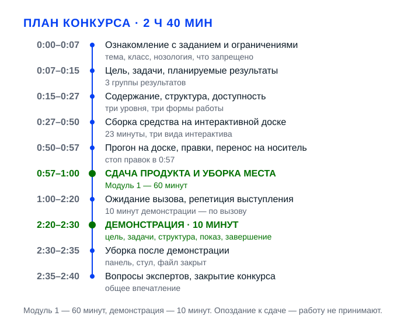
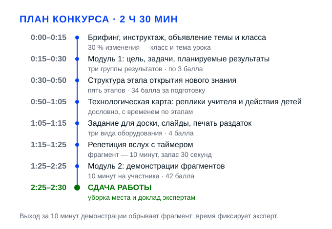
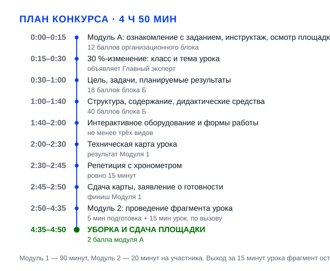

Учитель-предметник (биология) (Р)
Задания ниже — официальные файлы «Абилимпикс» (источник: abilympics-russia.ru), разложенные по категориям. Решения написаны по тексту задания, регламенту и критериям оценки; в них указано, что именно проверяет эксперт.
Школьник
14–16 лет, базовый уровень заданияВ официальном файле категории не разделены отдельными разделами — приводим задание целиком; различия по категориям смотрите в таблице модулей.
Пошаговое решение
Конкурсное задание категории «Школьники» состоит из двух модулей, и оба про одно: вы делаете дидактическое средство для урока биологии на интерактивном оборудовании и показываете его экспертам. В модуле 1 за 60 минут нужно разработать это средство по теме, которую объявят на площадке: главный эксперт вносит 30%-изменение именно в тему урока, поэтому «универсальную игру» не собрать. В модуле 2 за 10 минут вы называете цель и задачи игры, обосновываете её структуру, показываете её на доске и сообщаете экспертам о завершении. Общее время — 2 часа 40 минут, оценка 100 баллов: 12 даёт организационный блок, 76 — содержательная часть, 12 — стиль и речь. Своё оборудование и интернет-ресурсы с готовыми разработками запрещены, поэтому выигрывает не тот, кто знает больше сервисов, а тот, кто за час собирает компактную, научно точную игру с тремя уровнями заданий и внятно её объясняет.

Задача 1. Войти в конкурс и разложить 60 минут модуля 1Модуль 1 · организационный блок · 12 баллов
Организационная часть стоит 12 баллов из 100, и половина из них набирается в первые минуты: ознакомление с заданием — 3 балла, соблюдение правил конкурса — 3, соблюдение санитарных норм и правил безопасности — 2, контроль за их соблюдением — 2, уборка рабочего места — 2. Эти баллы не зависят от красоты вашей игры: их снимают за то, что участник начал работу, не прочитав ограничения, или оставил после себя разбросанные кабели. Здесь же решается, хватит ли вам часа на сам продукт, поэтому первым делом мы не открываем программу, а раскладываем время.
Действие 1.1. Принять задание и зафиксировать ограничения
Шаг 1.1.1
Заходим на площадку за 10–15 минут до старта, находим своё рабочее место по номеру на столе и приводим себя в вид, который требует регламент: у юношей короткая стрижка, у девушек волосы убраны в хвост или пучок, ногти короткие и без покрытия, макияж мягкий, часы, браслеты и крупные серьги снимаем и убираем в сумку. Верх — опрятный, без крупных надписей и логотипов, потому что вы работаете в роли учителя и на вас будут смотреть как на учителя. Сумку ставим под стол или на вешалку у входа, а не на стул рядом: стул понадобится волонтёру, если он будет изображать ученика.
Соблюдение правил конкурса — отдельные 3 балла в организационном блоке, и эксперт фиксирует внешний вид до старта, а не по итогам. В требованиях к спецодежде по этой компетенции прямо записано: опрятный внешний вид, короткая стрижка у юношей, убранные волосы у девушек, ухоженные ногти, мягкий макияж, без наручных украшений. Спорить здесь бессмысленно: три балла теряются за минуту, а вернуть их потом нельзя.
Проверьте себя по четырём признакам: волосы не падают на лицо при наклоне к столу, на руках нет часов и колец, ногти не стучат по сенсорной панели, одежда не мешает поднимать руку. Попросите соседа посмотреть на вас со спины — воротник и затылок видно только со стороны.
Самая частая ошибка — оставить часы «они же не мешают»: на сенсорной панели они царапают стекло и цепляются за край, а эксперт видит нарушение сразу. Вторая — прийти в футболке с ярким принтом, рассчитывая, что «главное — игра». В обоих случаях минус 3 балла из 12 в организационном блоке до начала работы.
Эксперт обходит рабочие места до старта и отмечает внешний вид в протоколе. Повторно он смотрит на вас в момент демонстрации, когда вы стоите у доски на виду у всей группы.
Шаг 1.1.2
Берём бланк с заданием, кладём его перед собой и читаем не по диагонали, а построчно, выписывая на отдельный лист четыре вещи: тему урока, класс, для какой нозологии проектируется средство и что именно запрещено. Тема приходит через 30%-изменение, поэтому её надо переписать дословно, включая уточнения вроде «строение растительной клетки, 6 класс» или «фотосинтез, 6 класс». Рядом с темой сразу пишем три-четыре понятия, которые в этой теме обязательны, — они станут каркасом заданий.
Ознакомление с заданием — 3 балла, и они даются за то, что участник работает по теме, а не по своей домашней заготовке. Формулировка цели и содержания проверяется отдельно: по 3 балла за соответствие цели теме, за содержание и за научность. Если тема переписана неточно, дальше вся игра уезжает в сторону, и теряется не три балла, а двадцать.
Прочитайте свою выписку и ответьте на вопрос: сможет ли эксперт, глядя только на название игры и первое задание, сказать, какая это тема и какой класс. Если нет — выписывайте тему точнее. Второй признак: в выписке есть класс и нозология, а не только название темы.
Типичная ошибка — прочитать тему и сразу сесть за компьютер, не выписав класс: в итоге задания получаются «взрослыми», а критерий соответствия возрастным особенностям стоит 3 балла. Вторая ошибка — переписать тему по памяти, потеряв уточнение, и сделать игру про клетку вообще вместо растительной клетки.
Эксперт сверяет вашу игру с бланком темы, а на демонстрации слушает, как вы проговариваете тему и класс. Расхождение видно сразу и трактуется как невыполнение задания.
Шаг 1.1.3
До старта подходим к эксперту и задаём три коротких вопроса: какое программное обеспечение установлено на интерактивной доске и на компьютере, куда сохранять готовый продукт (рабочий стол, папка участника, флешка) и можно ли пользоваться шаблонами, которые уже лежат на площадке. Спрашиваем именно так, по пунктам, и записываем ответ на тот же лист, где тема. Если эксперт говорит «шаблоны нельзя», уточняем, что считается шаблоном: пустая заготовка слайда или готовая игра.
В особых указаниях к заданию прямо сказано: пользоваться можно оборудованием площадки, нельзя — своим оборудованием и интернет-ресурсами с готовыми методическими разработками. Нарушение этого правила стоит не баллов, а работы целиком, поэтому лучше потратить две минуты на вопрос, чем час на продукт, который не примут. Заодно вы получаете 3 балла за ознакомление с заданием — эксперту видно, что участник разобрался в условиях.
После разговора у вас на листе три ответа, и ни один не звучит как «наверное». Проверьте, что вы знаете точное имя программы и точный путь сохранения: если эксперт назвал папку, запишите её так, как она называется на экране.
Классическая ошибка — начать собирать игру в онлайн-сервисе, который вы знаете наизусть: интернет-ресурс с готовыми разработками запрещён, а на площадке может не быть сети. Вторая — сохранить файл в «Документы» своего профиля и потом двадцать минут искать его при сдаче.
Эксперт отвечает на вопросы до старта и после старта уже не консультирует по содержанию; факт вашего обращения он отмечает как работу с заданием. После старта он консультирует только по организационным вопросам, а не по содержанию задания, и это тоже фиксируется.
Действие 1.2. Разложить 60 минут и подготовить место
Шаг 1.2.1
На том же листе рисуем сетку времени и подписываем шесть отрезков: 7 минут на ознакомление с заданием, 8 минут на цель, задачи и планируемые результаты, 12 минут на содержание, структуру и доступность, 23 минуты на сборку заданий на доске, 7 минут на прогон и починку, 3 минуты на сдачу продукта. Часы ставим на стол или выводим на экран так, чтобы они были видны без клика, и договариваемся с собой, что в 0:50 сборка заканчивается при любом состоянии игры: недоделанное задание лучше убрать, чем показывать сломанное.
60 минут на модуль 1 — это жестокая цифра для продукта с тремя уровнями заданий, и почти все потери происходят не от незнания биологии, а от того, что участник уходит в оформление и не оставляет времени на прогон. Сетка времени — это ваш внутренний регламент: она же защищает от соблазна переделывать анимацию, когда задания ещё не собраны.
Проверьте сетку арифметикой: сумма шести отрезков должна давать ровно 60 минут, и на сборку должно приходиться не меньше 20 минут. Если у вас на оформление уходит больше, чем на задания, сетка составлена неправильно.
Самая дорогая ошибка — начать с оформления фона и шрифтов: к 0:50 красивая заставка есть, а заданий нет, и демонстрировать нечего. Вторая — не оставить времени на сдачу и искать носитель, когда эксперты уже обходят столы.
Эксперт видит, как участник распределяет время. Тот, кто к 0:50 прогоняет готовый продукт, и тот, кто в 0:58 дописывает третье задание, выглядят по-разному, и это входит в оценку организации.
Шаг 1.2.2
Организуем рабочее место под себя: монитор и клавиатуру ставим так, чтобы не тянуться, мышь кладём справа от клавиатуры, лист с заданием — слева, чтобы он не закрывал экран. Проверяем, что интерактивная доска включена, компьютер видит её как второй экран, а кабель лежит вдоль стола и не пересекает проход шириной 1,5 метра. Если работаете с волонтёром-«учеником», сразу показываете ему, где стоять: сбоку от доски, а не между вами и экспертами.
Норматив по рабочему месту в задании — 3000 на 1900 мм с проходом 1,5 метра, и это не абстракция: кабель, лежащий поперёк прохода, — нарушение правил безопасности, за которое снимают 2 балла, а заодно реальный риск, что кто-то споткнётся о него во время вашей демонстрации. Розетка на 220 В на площадке одна на позицию, поэтому всё, что можно включить заранее, включается заранее.
Проверьте три вещи: изображение с компьютера появляется на доске при нажатии пальцем, кабель не лежит в проходе, на столе нет ничего лишнего — ни сумки, ни бутылки на клавиатуре. Если доска не видит компьютер, зовите техника сразу, а не в 0:55.
Частая ошибка — работать только на компьютере и обнаружить на демонстрации, что на доске другой масштаб и половина кнопок уехала за край. Вторая — оставить кабель в проходе: это фиксируется как нарушение безопасности, минус 2 балла, и замечание перед всем залом.
Эксперт проходит по площадке и смотрит на проходы и кабели. Отдельно отмечает, готово ли место к работе до старта или участник разбирается уже в процессе.
Шаг 1.2.3
Проверяем санитарные условия и освещение: на столе не должно быть еды и открытых напитков, экран протёрт сухой салфеткой, лампа местного света направлена на клавиатуру, а не в глаза. Если в помещении душно, открываем окно до старта, а не в середине модуля. Мусор — обрезки бумаги, использованные салфетки — сразу в урну, а не под стол: под столом его не видно вам, но видно эксперту.
Соблюдение санитарных норм и правил безопасности стоит 2 балла, контроль за их соблюдением — ещё 2, и это самые дешёвые баллы в задании. В требованиях по нозологиям для площадки указаны конкретные параметры: освещённость не менее 300 люкс, температура 21–24 °C при лёгкой работе, шум не выше 81 дБА. Площадку вы не измените, но не делать хуже обязаны: не есть за столом, не ставить чашку на панель, не создавать грязь.
Оглядите стол сверху: чистая поверхность, сухой экран, никакой еды, мусор в урне. Проверьте, что свет не даёт блика на доске — блик мешает и вам, и экспертам, которые смотрят на экран сбоку. И проверьте, что проход к соседнему столу свободен: сумка на полу у стола — тоже препятствие.
Типичная ошибка — поставить бутылку воды на стол рядом с клавиатурой: любое движение, и вода на технике, а модуль останавливается. Вторая — оставить бумажные обрезки под столом, которые потом находят при уборке и трактуют как небрежность.
Эксперт оценивает санитарное состояние визуально, в том числе в конце модуля, когда участник уже сдал продукт и отошёл от стола. В конце модуля он подходит к столу ещё раз, перед сдачей продукта, и смотрит на него уже без вашего участия.
Задача 2. Спроектировать средство до первого клика по панелиМодуль 1 · критерий Б · проектная часть до 36 баллов
Содержательный блок задания весит 76 баллов, и почти половину из них набирается до того, как вы откроете программу: цель — 3 балла, задачи — 3, три группы планируемых результатов по 3 балла каждая, содержание — 3, научность — 3, соответствие возрасту — 3, формы организации работы — 3, дидактические средства на каждом этапе — 3, формы контроля и самоконтроля — по 3. Проектирование занимает всего 20 минут из часа, но именно оно решает, будет ли игра цельной или распадётся на три несвязанных слайда. Здесь же выбирается формат, который вы физически успеете собрать за 23 минуты.
Действие 2.1. Сформулировать цель, задачи и планируемые результаты
Шаг 2.1.1
Пишем цель одним предложением, начиная с глагола действия и заканчивая наблюдаемым результатом: «организовать отработку умения различать органоиды растительной клетки по их функциям у обучающихся 6 класса средствами интерактивной игры с тремя уровнями заданий». В формулировке обязательно присутствуют тема, класс и то, что ученик будет делать, а не то, что вы покажете. Длинные конструкции вроде «способствовать формированию всесторонне развитой личности» убираем сразу — они не проверяемы.
Формулировка цели, соответствующая теме урока, — 3 балла, и это первый пункт, по которому эксперт сверяет продукт с бланком. Цель в игре нужна не для протокола: от неё зависит, какие задания вы вообще будете собирать. Если цель сформулирована как «познакомить», вы неизбежно сделаете викторину на узнавание; если как «отработать умение различать», появится задание на применение.
Прочитайте цель и проверьте три признака: в ней есть тема, есть класс, есть глагол, который можно увидеть в действии ученика. Если цель можно дословно перенести на любой другой предмет, она слишком общая.
Самая частая ошибка — написать цель через «формирование» и «развитие»: такие формулировки не проверяются, и эксперт снижает балл, потому что непонятно, что именно должно получиться. Вторая — сделать цель шире темы, например «изучить строение клетки» вместо «различать органоиды по функциям».
Эксперт слушает формулировку цели в первые минуты демонстрации и сверяет её с темой на бланке. Несовпадение он отмечает сразу, не дожидаясь показа игры.
Шаг 2.1.2
Разбиваем цель на три-четыре задачи, каждая из которых — шаг, а не пересказ цели: первая — актуализировать уже известное (ученик называет части клетки), вторая — ввести новое понятие или связь (ученик объясняет, зачем органоиду двойная мембрана), третья — применить в новой ситуации (ученик выбирает органоид по описанию процесса), четвёртая — проверить себя (ученик оценивает свой результат по критерию). Задачи нумеруем и держим рядом с конструктором: каждая задача должна получить своё задание в игре.
Задачи, соответствующие поставленной цели, — ещё 3 балла, и они проверяются не по формулировкам, а по составу игры: если в игре три задания, а задач заявлено четыре, эксперт видит разрыв. Кроме того, задачи задают три уровня сложности, за которые в критериях отвечает отдельная строка про применение интерактивного оборудования — 4 балла.
Проверьте соответствие один к одному: у каждой задачи есть задание в игре, у каждого задания — задача в списке. Если какое-то задание «просто красивое» и ничьей задачи не решает, его нужно убрать, даже если жалко.
Классическая ошибка — написать четыре задачи, которые все про одно: «узнать», «запомнить», «понять», «усвоить». Эксперт видит, что уровней нет, и игра превращается в тест с выбором ответа, а это минус баллы за применение и за чередование форм работы.
Эксперт сопоставляет список задач с содержанием игры во время показа: он отмечает, есть ли задание на применение или всё сводится к узнаванию. Отдельно он отмечает, совпадает ли число заявленных задач с числом заданий в игре, и расхождение трактует как недоработку проекта.
Шаг 2.1.3
Выписываем планируемые результаты тремя группами, по одной-две строки в каждой. Предметные — через понятия и умения темы: ученик называет органоиды клетки, соотносит органоид с функцией, объясняет роль хлоропласта в фотосинтезе. Метапредметные — через действия: ученик сравнивает объекты по заданным признакам, находит ошибку в чужом ответе, работает в паре по инструкции. Личностные — через отношение: ученик объясняет, почему знания о клетке важны для здоровья человека, и бережно относится к живому материалу при работе с микроскопом.
Три группы результатов стоят по 3 балла каждая — 9 баллов из 76, и это те баллы, которые теряют почти все, кто пишет только предметные результаты. Критерий требует, чтобы личностные, метапредметные и предметные результаты соответствовали теме урока, а не были взяты из общей программы. Кроме того, именно личностные результаты дают вам 3 балла за воспитательный потенциал в блоке индивидуального стиля.
Проверьте, что каждая группа содержит хотя бы одну формулировку, которую можно увидеть в игре: предметные — в правильных ответах, метапредметные — в заданиях на сравнение и поиск ошибки, личностные — в итоговом вопросе или выводе. Если личностные нигде не проявляются, они заявлены формально.
Самая частая ошибка — переписать результаты из рабочей программы целиком: эксперт видит общие фразы, не связанные с темой, и снимает баллы за соответствие. Вторая — забыть личностные совсем, потеряв сразу 3 балла и ослабив блок воспитательного потенциала.
Эксперт ищет результаты в тексте вашего выступления и в заданиях игры; на демонстрации он слушает, как вы связываете результат с конкретным заданием. Результаты, заявленные только на словах и никак не отражённые в заданиях, он считает декларацией и баллы за них не начисляет.
Действие 2.2. Отобрать содержание под тему и класс
Шаг 2.2.1
Берём тему и выписываем из неё пять-семь опорных единиц содержания: понятия, процессы, объекты. Для растительной клетки это клеточная стенка из целлюлозы, плазматическая мембрана, ядро, хлоропласты, вакуоль с клеточным соком, цитоплазма. Каждую единицу проверяем по формулировке, принятой в школьном курсе: не «хлорофилловые зёрна», а «хлоропласты, содержащие хлорофилл». Лишнее из списка вычёркиваем без сожаления — лучше пять точных понятий, чем двенадцать приблизительных.
Содержание дидактического средства — 3 балла, и оно оценивается по тому, покрывает ли игра ядро темы, а не её периферию. Пять-семь единиц — это ровно столько, сколько помещается в три задания за 25 минут сборки; при десяти понятиях вы физически не успеете их отработать и получите поверхностный продукт.
Проверьте список вопросом: можно ли по этим пяти понятиям провести урок по теме и не соврать. Если какое-то ключевое понятие темы в списке отсутствует, добавьте его и уберите самое второстепенное. Пять точных понятий всегда выигрывают у двенадцати приблизительных: по ним видно, что вы отобрали содержание, а не переписали параграф.
Типичная ошибка — тянуть в игру всё, что помнишь по теме: в результате задания получаются мелкими, а время уходит на набор текста. Вторая — оставить в списке понятие, которого нет в школьной программе этого класса, и потерять баллы за соответствие возрасту.
Эксперт смотрит на состав понятий и на то, совпадают ли они с темой. Отдельно он отмечает, есть ли в игре ключевое понятие темы или его заменили чем-то похожим.
Шаг 2.2.2
Каждое утверждение, которое попадёт в игру, проговариваем вслух и проверяем на научность: функции органоидов формулируем по учебнику, названия даём в принятой транскрипции, латинские названия — только если они есть в курсе этого класса. Если делаете задание «верно или неверно», неверные варианты придумываем как типичные ученические заблуждения, а не как случайный набор слов: «вакуоль участвует в фотосинтезе» — хорошее неверное утверждение, потому что путает две функции, и его разбор чему-то учит.
Владение понятийным аппаратом и подбор фактического материала с точки зрения научности — 3 балла, и это тот критерий, по которому школьника отличают от «человека с красивой презентацией». Одна фактическая ошибка на слайде перевешивает всё оформление: эксперт записывает её в протокол, и дальше он смотрит на игру настороженно.
Пройдите по каждому утверждению и задайте вопрос «откуда я это знаю»: если ответ «помню из интернета» — проверяйте по учебнику, который лежит на площадке, или переформулируйте так, чтобы сомнительного факта в игре не было. Проверьте также единицы и названия: «клеточная стенка», а не «оболочка» там, где нужна точность.
Самая обидная ошибка — перепутать функции: приписать митохондриям синтез белка, а рибосомам — дыхание. Такая ошибка видна эксперту-биологу мгновенно и стоит и баллов за научность, и доверия ко всей игре. Вторая — использовать термин, которого нет в программе класса, и потерять балл за возрастное соответствие.
Эксперт читает текст заданий на доске во время показа и сверяет функции и названия; ошибку он фиксирует сразу, не дожидаясь конца выступления. Терминологическую ошибку он записывает в протокол отдельной строкой, потому что за научность отвечает самостоятельный критерий.
Шаг 2.2.3
Приводим содержание к возрасту и находим в нём воспитательный слой. Для 6 класса убираем биохимию: не «тилакоиды грань», а «зелёные тельца, в которых образуется сахар на свету»; формулировки заданий делаем короткими, по 6–9 слов, без вложенных условий. Воспитательный слой вписываем в одну фразу вывода: знания о клетке объясняют, почему нельзя есть немытые овощи и почему растение гибнет без света, — это уже отношение к живому, а не перечень органоидов.
Соответствие уровня сложности и объёма материала возрастным особенностям — 3 балла, а воспитательный потенциал — ещё 3 балла в блоке индивидуального стиля. Критерий про возраст проверяется по формулировкам: если задание приходится перечитывать дважды, оно не для шестиклассника. Воспитательный потенциал — единственный пункт, где школьник может выиграть у более опытных участников, потому что он не требует методической подготовки.
Прочитайте задание так, как читал бы шестиклассник: если в нём больше двух незнакомых слов или длиннее двух строк, сокращайте. Проверьте, что вывод игры содержит не только «молодец», но и мысль о живом — тогда воспитательный потенциал виден.
Частая ошибка — сделать игру по вузовскому уровню: «органоиды общего назначения» и «пластиды» в 6 классе только запугивают. Вторая — оставить вывод чисто учебным, без отношения к живому, и потерять 3 балла, которые легко было взять одной фразой.
Эксперт оценивает возрастную адекватность по формулировкам заданий, а воспитательный потенциал — по финальной части выступления. Вывод он слушает отдельно, потому что за него дают 3 балла в блоке стиля.
Действие 2.3. Собрать структуру, формы работы и контроль
Шаг 2.3.1
Выстраиваем три уровня заданий и подписываем их на листе: уровень 1 — узнавание (соотнести подпись с органоидом на схеме клетки, четыре пары), уровень 2 — применение (распределить описания процессов по органоидам, шесть карточек), уровень 3 — анализ (найти лишний органоид в ряду и объяснить, почему он лишний). У каждого уровня фиксируем одно предложение правила: что нужно сделать, сколько попыток, что считается правильным ответом.
Применение интерактивного оборудования не менее трёх видов — 4 балла, самая дорогая строка в блоке, и три уровня заданий дают вам эти три вида естественно: перетаскивание, сортировка по зонам, выбор с обоснованием. Уровневая структура заодно закрывает критерий про чередование форм работы и даёт материал для обоснования структуры на демонстрации.
Проверьте, что уровни различаются действием, а не количеством карточек: на первом ученик узнаёт, на втором применяет правило, на третьем объясняет. Если на всех трёх уровнях нужно только нажимать правильный вариант, уровней у вас нет.
Самая частая ошибка — сделать три задания одинаковыми по типу и разными по теме: эксперт видит один и тот же инструмент трижды и не засчитывает три вида оборудования. Вторая — замахнуться на четыре уровня и не успеть собрать третий.
Эксперт считает виды интерактивных заданий во время показа и проверяет, работают ли они на разных уровнях. Третий уровень он смотрит особенно внимательно, потому что именно там видно понимание.
Шаг 2.3.2
Пишем сценарий игры на один экран: мотивационный вход (проблемный вопрос по теме, 30 секунд), правило (как играть, 20 секунд), три уровня заданий, рефлексия (что было трудно и почему, 40 секунд). В каждом уровне отмечаем форму работы: уровень 1 — фронтальная у доски, уровень 2 — парная за ноутбуками или в парах у панели, уровень 3 — индивидуальная с обсуждением. Рядом дописываем, какое дидактическое средство работает на каждом этапе: схема клетки, набор карточек, таблица-опора.
Предусмотреть не менее трёх форм организации учебной деятельности — 3 балла, указать дидактические средства на каждом этапе — ещё 3. Это два критерия, которые почти невозможно выполнить экспромтом: формы и средства должны быть видны в сценарии, а сценарий — в игре. Заодно вы получаете готовый текст для обоснования структуры в модуле 2, где за это дают баллы в блоке Б.
Пройдите по сценарию и отметьте буквами Ф, П, И — фронтальная, парная, индивидуальная. Если какая-то буква не встречается, формы не три. Проверьте, что у каждого этапа названо своё средство, а не одно на всё.
Типичная ошибка — заявить три формы, а в игре работать только фронтально: эксперт смотрит на реальные действия и видит расхождение. Вторая — не предусмотреть рефлексию, из-за чего игра обрывается на последнем ответе и не даёт материала для блока про самооценку.
Эксперт отмечает формы работы по ходу показа и слушает, как вы называете дидактические средства. Расхождение между заявленным и показанным он трактует как недоработку.
Шаг 2.3.3
Прописываем контроль и самоконтроль прямо в игре. Контроль: после каждого уровня — короткая обратная связь, которая не просто говорит «верно», а объясняет правило; в конце — счёт по трём уровням, чтобы было видно, где именно ученик споткнулся. Самоконтроль: перед третьим уровнем — экран с тремя критериями («я узнаю органоид», «я объясняю его функцию», «я нахожу ошибку»), где ученик ставит галочки сам, а после игры сверяет свою оценку с результатом.
Запланированные формы контроля и оценки — 3 балла, формы самоконтроля и самооценки — ещё 3, и это те строки, которые чаще всего остаются пустыми. Именно они превращают набор заданий в дидактическое средство: игра не только проверяет, но и учит ученика проверять себя, а это прямой выход на метапредметные результаты, за которые вы уже написали формулировку.
Проверьте, что в игре есть три вещи: объяснение после неверного ответа, итоговый экран с разбивкой по уровням и экран самооценки с критериями. Если обратная связь ограничивается словом «неверно», самоконтроля в игре нет.
Самая частая ошибка — сделать обратную связь в виде звука и крестика: ученик не узнаёт, в чём ошибся, а эксперт не видит формирующей функции. Вторая — поставить самооценку в самом конце, когда времени на неё уже не остаётся и она превращается в формальную галочку.
Эксперт специально нажимает неверный ответ во время показа, чтобы посмотреть на реакцию игры, и проверяет, есть ли экран самооценки. Это его обычный приём на этой компетенции.
Действие 2.4. Сделать средство доступным для своей нозологии
Шаг 2.4.1
Задаём размеры и контраст до начала сборки, а не после: шрифт на слайдах не мельче 24 пунктов, заголовок — 32–36, подписи на схеме — 20 с запасом, фон светлый, текст тёмно-синий или чёрный, без текста на пёстром рисунке. Зоны нажатия делаем крупными: не меньше 44 на 44 пикселя, с расстоянием между ними, потому что на интерактивной доске палец промахивается чаще, чем мышью. Кнопки «дальше» ставим в одном и том же месте на всех экранах.
Задание требует учитывать возраст и возможности детей, а на площадке предусмотрены рабочие места для пяти групп нозологий: нарушения слуха, зрения, опорно-двигательного аппарата, соматические и ментальные. Для слабовидящих в требованиях указан шрифт 16–18 пт в печатных документах и освещённость не менее 300 люкс, а на доске этого мало — отсюда 24 пункта. Крупные зоны нажатия делают игру доступной для участника в кресле-коляске или с тремором.
Отойдите от доски на три метра — как сидит последний ряд, — и прочитайте заголовок и подписи. Если приходится щуриться, шрифт мелкий. Проверьте кликом с закрытыми глазами: попадаете ли вы в кнопку «дальше» на привычном месте.
Типичная ошибка — набрать подписи 14 пунктами, потому что «на компьютере видно»: на доске с трёх метров это нечитаемо, и баллы за возрастное соответствие и доступность уходят. Вторая — сделать перетаскивание единственным способом действия, отрезав от игры тех, кому трудно удерживать палец на объекте.
Эксперт смотрит на игру с рабочего места в нескольких метрах от доски и отмечает читаемость. На этой компетенции он обязательно оценивает учёт нозологии, потому что она заявлена в самом задании.
Шаг 2.4.2
Добавляем второй канал подачи информации: к каждому заданию — короткая текстовая инструкция в одну строку, которая дублирует то, что вы говорите голосом, и подпись к каждому изображению. Для слабослышащих это единственный способ получить условие, для остальных — опора, если отвлеклись. Перетаскивание дублируем альтернативой: у каждой карточки есть номер, и её можно выбрать нажатием, а не переносом; тогда игра работает и на сенсорной панели, и с клавиатуры.
Доступность не выделена в отдельную строку критериев, но она входит в «уровень сложности и объём соответствуют возрастным особенностям» и в «эмоциональный комфорт обучающихся» — по 3 балла, и в задании требование учитывать возможности детей записано отдельным пунктом. Дублирование каналов — самый быстрый способ показать, что вы думали о разных учениках, а не об абстрактном классе.
Проверьте, что каждое задание можно выполнить, не слыша голоса учителя, и что ни одно задание не требует удерживать палец дольше двух секунд. Если условие понятно только из вашего объяснения, дублирования нет.
Частая ошибка — положиться на голос: для ученика с нарушением слуха условие исчезает, и игра становится невыполнимой. Вторая — сделать задание на скорость реакции, где время на ответ три секунды: это прямое нарушение доступности и потеря баллов за комфорт.
Эксперт проверяет наличие текстовых инструкций и подписей к изображениям. Для него это маркер того, что участник действительно проектировал средство под конкретную нозологию.
Шаг 2.4.3
Настраиваем эмоциональный фон: убираем резкие звуки, красные крестики и слово «ошибка» — вместо них спокойная подсказка «попробуй ещё, посмотри на вакуоль» и мягкий звук. Даём не меньше двух попыток на задание и не отнимаем баллы за первую неудачу, а в конце показываем, что получилось, а не чего не хватило. Таймер, если он вообще нужен, ставим только на общий ход игры и без обратного отсчёта на каждое задание.
Эмоциональный комфорт обучающихся и уважение личного достоинства — 3 балла в блоке Б, и это тот пункт, который отличает дидактическое средство от контрольной работы. Для участников с ментальными нарушениями и с соматическими заболеваниями резкая отрицательная реакция интерфейса прямо противопоказана: в требованиях к их рабочим местам отдельно оговорены комфортные условия и отсутствие раздражителей.
Пройдите игру как ученик, который ошибся трижды: если после третьей ошибки хочется закрыть, интерфейс давит. Проверьте, что после неверного ответа всегда есть подсказка, а не только звук. И проверьте, что подсказка появляется и после третьей ошибки подряд: именно третий раз показывает, обучает средство или наказывает.
Типичная ошибка — поставить громкий звук ошибки и красный экран: на демонстрации это выглядит как наказание, и эксперт снимает баллы за комфорт. Вторая — ограничить попытки одной, из-за чего игра превращается в отбор, а не в обучение.
Эксперт смотрит на реакцию игры на неверный ответ и на то, как вы проговариваете комфорт в выступлении. Это одна из строк, где легко отличить продуманное средство от собранного наспех.
Задача 3. Собрать средство на интерактивном оборудованииМодуль 1 · критерий Б · продукт и три вида интерактива
На сборку остаётся 23 минуты, и в них надо уложить три задания, навигацию, обратную связь и проверку. Продукт оценивают по трём линиям: применение интерактивного оборудования не менее трёх видов — 4 балла, дидактические средства на каждом этапе — 3 балла, проектируемая деятельность обеспечивает достижение планируемых результатов — 3 балла. Своё оборудование и интернет с готовыми разработками запрещены, поэтому сборка идёт в том редакторе, который установлен на площадке, из того материала, который вы успели набрать руками. Здесь важнее не красота, а работающие клики и точный текст.
Действие 3.1. Выбрать инструмент и подготовить среду
Шаг 3.1.1
Открываем на компьютере программу, которая есть на площадке, и проверяем, что она работает в режиме интерактивной доски, а не только презентации: нужны перетаскивание объектов, реакция на нажатие и переход по кнопке. Смотрим на панель инструментов и выписываем, что реально доступно: перетаскивание, сортировка по зонам, шторка, лупа, перо, вставка изображения. Выбираем те три инструмента, которыми вы владеете уверенно, и дальше строим игру только на них.
Три вида интерактивного оборудования — это 4 балла, самая весомая строка в содержательном блоке, и она закрывается только реальными разными инструментами. Если выбрать незнакомый редактор, первые пятнадцать минут уйдут на поиск меню, а на задания останется десять. Знакомый инструмент с бедными возможностями даёт больше баллов, чем богатый и неосвоенный.
Проверьте себя практикой: перетащите одну карточку, нажмите кнопку перехода и вернитесь назад. Если оба действия работают за две секунды, инструмент подходит; если приходится искать, как отменить действие, — не подходит.
Самая частая ошибка — начать в онлайн-конструкторе, который вы знаете: это запрещённый интернет-ресурс, и продукт снимут. Вторая — выбрать редактор с анимацией и потратить час на изучение панели, не собрав ни одного задания.
Эксперт смотрит, на каком оборудовании собран продукт, и проверяет, что использованы возможности именно интерактивной доски. Презентацию без интерактива он оценивает по другой, заметно более низкой планке.
Шаг 3.1.2
Создаём файл сразу в правильном месте и с правильным именем: папка, которую назвал эксперт, имя по схеме «фамилия_тема_класс», например «Иванова_клетка_6». Дальше сохраняем после каждого задания, а не в конце: горячая клавиша сохранения должна стать привычкой, потому что на площадке бывает перезапуск доски. Рядом создаём папку для картинок и складываем туда всё, что будете вставлять, — так продукт останется целым при переносе.
Сдать продукт нужно ссылкой или готовым файлом на электронном носителе, и если файл лежит в случайной папке с именем «Untitled1», вы теряете время на поиск и рискуете сдать не тот вариант. Кроме того, имя файла с темой и классом — часть впечатления: эксперт видит его в списке работ и уже понимает, что внутри.
Проверьте путь целиком: папка та, имя читаемое, расширение то, которое открывается на площадке. Сохраните файл, закройте и откройте снова — если открылся, путь рабочий. Если файл открылся с предупреждением о формате, конвертируйте его сразу, а не в момент сдачи: на конвертацию уйдёт время из прогона.
Типичная ошибка — сохранять в «Загрузки» или на рабочий стол без папки: при сдаче файл не находится, а время уже вышло. Вторая — вставлять картинки из интернета по ссылке: без сети они превращаются в пустые рамки прямо во время демонстрации.
Эксперт принимает продукт по имени файла и проверяет, что он открывается на его машине; имя и место сохранения он видит первым делом. Продукт с нечитаемым именем он находит в общем списке последним, а иногда и не находит вовсе.
Шаг 3.1.3
Готовим фон и сетку один раз и копируем на все экраны: светлый фон, тёмный текст, единая рамка, в правом нижнем углу — кнопки «дальше» и «назад» одного размера. Схему клетки или рисунок процесса вставляем как отдельный объект, а не как фон, чтобы её можно было двигать и увеличивать. Шрифты оставляем те, что есть в системе, без скачивания: чужой шрифт на другой машине заменится и текст поедет.
Единая сетка экономит время: скопированный экран настраивается за минуту, а новый — за пять, и на трёх заданиях это разница в двенадцать минут. Кнопки в одном месте — ещё и доступность: ученик, который работает с трудом, не ищет навигацию заново на каждом слайде. Системные шрифты гарантируют, что продукт откроется так же, как у вас.
Пролистайте три экрана подряд: кнопки на месте, поля одинаковые, шрифт не прыгает. Если на втором экране заголовок на два сантиметра выше, чем на первом, сетка не скопирована. И проверьте, что кнопки не перекрывают текст задания на самом узком экране, который есть на площадке.
Частая ошибка — оформлять каждый экран заново: времени уходит вдвое больше, а выглядит хуже. Вторая — поставить экзотический шрифт: на доске он подменяется, и подписи наезжают друг на друга. Третья ошибка — вставить схему фоном и потерять возможность двигать её и увеличивать.
Эксперт оценивает целостность продукта глазами: единая сетка читается как продуманное средство, разнородные экраны — как набор случайных слайдов. Разнобой в оформлении экранов он читает как спешку и переносит это впечатление на оценку всего продукта.
Действие 3.2. Собрать три уровня заданий
Шаг 3.2.1
Собираем первый уровень — узнавание на схеме. Ставим схему растительной клетки крупно, в центр, и делаем четыре подписи-карточки, которые перетаскиваются к органоидам: ядро, хлоропласт, вакуоль, клеточная стенка. Каждую карточку подписываем одним словом, без пояснений, шрифтом не мельче 24 пунктов, и настраиваем, чтобы при верном попадании карточка оставалась на месте, а при неверном возвращалась назад.
Первый уровень закрывает предметный результат «ученик называет органоиды» и одновременно даёт первый вид интерактива — перетаскивание. Он же обеспечивает вход в игру: за 30 секунд ученик понимает правило и включается, а вы получаете материал для фронтальной формы работы, которая стоит в критерии про три формы организации.
Проверьте попадание: перетащите каждую карточку верно и неверно. Верная остаётся и не съезжает, неверная возвращается и не застревает между объектами. С трёх метров подписи читаются без напряжения. Промахов при аккуратном нажатии быть не должно: если карточка цепляет соседнюю, разносите их на два сантиметра.
Типичная ошибка — сделать карточки мелкими и близко друг к другу: на доске палец цепляет соседнюю, и игра разваливается на глазах у экспертов. Вторая — не настроить возврат неверной карточки, и она остаётся висеть поверх схемы, закрывая органоид.
Эксперт смотрит, как ведёт себя игра при неверном действии: именно там видно, настроено ли задание или только нарисовано. Отдельно он смотрит, не перекрывают ли карточки друг друга при переносе и остаётся ли схема читаемой после первого задания.
Шаг 3.2.2
Собираем второй уровень — применение: шесть карточек с описаниями процессов и две-три зоны-органоида, куда их надо распределить. Формулировки короткие и однозначные: «образует органические вещества на свету», «хранит клеточный сок и поддерживает давление», «управляет делением клетки», «придаёт клетке прочность». Каждое описание проверяем по учебнику, чтобы не было двух верных зон, и ставим счётчик правильных ответов.
Второй уровень — это применение знания, и именно за него дают баллы по строке «умение применять усвоенные знания при выполнении учебных заданий на новый материал». Сортировка по зонам — второй вид интерактива, и он отличается от перетаскивания действием: ученик не просто находит место, а классифицирует. Шесть карточек — предел, при котором задание проходится за полторы минуты.
Разложите карточки сами и убедитесь, что у каждой ровно одна верная зона и что формулировка не подходит к двум. Проверьте счётчик: после шести верных ответов он показывает шесть, а не пять. И проверьте, что зоны не перекрываются между собой: пересечение двух зон делает задание невыполнимым.
Самая частая ошибка — двусмысленные описания: «участвует в обмене веществ» подходит ко всем органоидам, и задание теряет смысл. Вторая — сделать восемь карточек, из-за чего уровень не проходится за отведённое время и вы не успеваете показать третий.
Эксперт проверяет однозначность формулировок, читая их на доске. Двусмысленность он отмечает как методическую ошибку, даже если технически всё работает.
Шаг 3.2.3
Собираем третий уровень — анализ: ряд из четырёх объектов, где один лишний, и обязательное объяснение выбора. Например, ряд «ядро, хлоропласт, вакуоль, рибосома» с вопросом, какой объект есть и в животной, и в растительной клетке, а какой только в растительной. Ответ оформляем не галочкой, а выбором из двух коротких объяснений, чтобы ученик не угадывал, а формулировал причину. После выбора — экран с правильным объяснением на два предложения.
Третий уровень — единственное место, где видно понимание, а не память, и эксперт смотрит на него особенно внимательно. Объяснение вместо галочки закрывает сразу три строки критериев: применение знаний, фиксацию затруднений и вовлечение ученика в постановку цели. Кроме того, это третий вид интерактива, и без него 4 балла за три вида оборудования не начисляются.
Проверьте, что правильный ответ нельзя угадать по длине формулировки и что объяснение появляется после любого выбора, а не только после верного. Пройдите уровень как ученик, который ошибся: он должен понять причину, а не просто увидеть крестик.
Типичная ошибка — свести анализ к ещё одному тесту с четырьмя вариантами: третий уровень тогда не отличается от первого, и виды интерактива не засчитываются. Вторая — спрятать объяснение за кнопкой, до которой на демонстрации не добраться.
Эксперт нажимает варианты на третьем уровне сам и слушает ваше обоснование структуры; именно здесь он решает, есть ли в игре уровень анализа. Ему важно услышать, почему выбранный объект лишний: без объяснения третий уровень читается как ещё один тест.
Действие 3.3. Настроить навигацию, обратную связь и итог
Шаг 3.3.1
Настраиваем переходы: с каждого экрана — кнопка «дальше» в правом нижнем углу, с уровня — возврат к выбору уровня, в конце — итоговый экран. Проверяем, что нет экранов-тупиков: из любого места можно выйти, не закрывая файл. Если редактор позволяет, ставим на экран выбора уровня три кнопки с номерами и названиями, чтобы учитель мог начать с любого места по ситуации урока.
Навигация — это то, что эксперт проверяет руками: он пройдёт по игре и упрётся в тупик, если кнопок нет. Возможность начать с любого уровня показывает, что средство проектировалось для урока, а не для показа: учитель на уроке выбирает уровень по готовности класса, и это входит в проектируемую деятельность, за которую дают 3 балла.
Пройдите игру от начала до конца и обратно, из каждого экрана. Если хотя бы с одного экрана нельзя вернуться, навигация не готова. Проверьте, что кнопки не перекрывают текст задания. И проверьте, что выход есть даже с экрана обратной связи, куда попадает ученик после неверного ответа.
Частая ошибка — оставить переход только вперёд: на демонстрации вы хотите вернуться к схеме и не можете. Вторая — поставить кнопки поверх карточек, из-за чего перетаскивание перестаёт работать. Третья ошибка — забыть кнопку возврата на итоговом экране, из-за чего игру приходится закрывать.
Эксперт листает продукт сам после вашего показа; наличие выходов из каждого экрана он отмечает как готовность средства к использованию. Тупик он находит за три нажатия и записывает как дефект навигации, а не как мелкую недоработку.
Шаг 3.3.2
Пишем тексты обратной связи: на верный ответ — короткое подтверждение с причиной («верно: хлоропласт содержит хлорофилл и образует сахар на свету»), на неверный — подсказка, куда посмотреть, без слова «ошибка». Тексты делаем одинаковой длины, чтобы экран не прыгал, и проверяем, что в них нет фактических ошибок: это самые читаемые строки во всём продукте.
Формы контроля и оценки — 3 балла, и они держатся именно на обратной связи: без объяснения игра только фиксирует результат, но не учит. Подтверждение с причиной превращает каждое нажатие в микропояснение, и эксперт видит, что средство обучающее. Одновременно это самая уязвимая часть по научности: ошибку в подсказке заметят быстрее, чем в задании.
Прочитайте все тексты подряд и проверьте три вещи: нет слова «ошибка», у каждого верного ответа названа причина, ни в одной строке нет биологической неточности. Строки должны помещаться в две строки на экране.
Типичная ошибка — ограничиться «Молодец!» и «Подумай ещё»: баллы за контроль не начисляются, потому что оценки знания нет. Вторая — перепутать функцию органоида в подсказке, и тогда ошибка в обучении хуже, чем её отсутствие.
Эксперт читает подсказки, нажимая неверные ответы; содержание подсказок он оценивает по научности наравне с заданиями. Отдельно он проверяет, что подсказка не выдаёт правильный ответ прямым текстом, иначе задание теряет смысл.
Шаг 3.3.3
Собираем итоговый экран и экран самооценки. На итоговом — результат по трём уровням отдельными строками, чтобы было видно, где именно затруднение, и одна фраза вывода с воспитательным смыслом: «клетка — живая система, и знание её устройства помогает бережно относиться к живому». На экране самооценки — три критерия, которые ученик отмечает сам до и после игры.
Самоконтроль и самооценка — 3 балла, а разбивка результата по уровням закрывает строку «фиксирует затруднения в учебном действии». Вывод с воспитательным смыслом — те 3 балла за воспитательный потенциал, которые легко потерять, если закончить игру счётом. Кроме того, итоговый экран даёт вам готовую фразу для финала выступления.
Пройдите игру с разным числом ошибок и убедитесь, что итог честно показывает, какой уровень провален. Проверьте, что экран самооценки не исчезает через три секунды и критерии на нём читаются. И проверьте, что критерии самооценки не обрезаны по краю и читаются с трёх метров.
Самая частая ошибка — показать только общий счёт: ученик не понимает, что именно не получилось, и баллы за фиксацию затруднений не идут. Вторая — закончить словом «Молодец», потеряв воспитательный слой.
Эксперт смотрит итоговый экран как результат методической работы: разбивка по уровням и критерии самооценки для него — признак продуманного средства. Общий счёт без разбивки по уровням он считает слабым местом средства, потому что учителю нечем пользоваться на уроке.
Действие 3.4. Прогнать продукт и починить найденное
Шаг 3.4.1
Прогоняем игру на самой интерактивной доске, а не на мониторе: выводим изображение, встаём у панели и проходим все три уровня пальцем, считая время. Отмечаем на листе, где промахнулись, где текст ушёл за край, где пришлось нажимать дважды. На каждый дефект — одна строка, чтобы потом не вспоминать, и сразу же исправляем самое грубое. Всё записываем сразу, по ходу прогона, а не по памяти в конце: к концу модуля детали забываются, а дефекты остаются.
Масштаб доски и монитора не совпадает, и всё, что вы проверяли мышью, на панели ведёт себя иначе: карточки цепляют друг друга, кнопки оказываются под рукой эксперта. Прогон на доске — единственная проверка, которая засчитывается, потому что демонстрация проходит именно там. Заодно вы узнаёте реальное время прохождения, а его нужно уложить в 10 минут выступления.
Три признака готовности: все три уровня проходятся без двойных нажатий, текст не выходит за край экрана, полный прогон занимает не больше четырёх минут. Если дольше — сокращайте карточки, а не скорость показа.
Типичная ошибка — проверить только первый экран и решить, что всё работает: на третьем уровне остаётся пустая зона, и вы обнаруживаете это при экспертах. Вторая — прогонять мышью с ноутбука, стоя спиной к доске.
Эксперт видит, насколько уверенно вы работаете у панели: двойные нажатия и поиск кнопок читаются как непроверенный продукт. Он также замечает, сколько времени у вас уходит на один уровень: медленное прохождение читается как непродуманный интерфейс.
Шаг 3.4.2
Проверяем продукт «с чужой машины»: копируем файл вместе с папкой картинок на флешку, открываем на другом компьютере площадки, если это разрешено, или хотя бы закрываем и открываем заново. Смотрим, не пропали ли изображения, не заменились ли шрифты, не сбились ли звуки. Отдельно проверяем, что файл открывается в режиме показа, а не в режиме редактирования, где видны служебные рамки.
Сдавать нужно готовый продукт на электронном носителе, и его будут открывать на другом оборудовании. Продукт, который держится на путях вашего профиля, при переносе рассыпается, и вместо игры эксперт увидит пустые рамки — это равносильно несданной работе. Проверка занимает три минуты из семи, отведённых на прогон.
Открыли копию — все картинки на месте, шрифт тот же, звук работает. Проверьте размер файла: если он подозрительно маленький, изображения вставлены ссылками, а не вложены. И проверьте, что звук не воспроизводится сам при открытии файла: на демонстрации это сбивает и вас, и экспертов.
Самая обидная ошибка — вставить картинки ссылками на рабочий стол: на другом компьютере их нет. Вторая — сохранить в формате, который на площадке не открывается, и потратить остаток времени на конвертацию.
Эксперт открывает ваш файл у себя и проверяет целостность; если картинок нет, он фиксирует, что продукт не готов к использованию. Пустые рамки вместо схемы он трактует как несданную работу, даже если файл формально открылся.
Шаг 3.4.3
Оставляем на исправления ровно пять минут и правим только то, что мешает прохождению: битые клики, обрезанный текст, отсутствующий переход. Всё, что относится к красоте — тени, анимация появления, рамки, — не трогаем: это не оценивается, а время уходит. В 0:57 останавливаем правки при любом состоянии и переходим к сдаче. Правки записываем списком и идём по нему сверху вниз, без возвратов: так пять минут расходуются на исправления, а не на поиск.
Пять минут на починку — это страховка: без жёсткого стопа правки съедают время сдачи, и продукт остаётся несохранённым. Оформление в критериях не выделено отдельной строкой, а вот сдача и уборка рабочего места стоят баллов, и опоздание к сдаче обнуляет модуль независимо от качества игры.
Перед стопом проверьте три вещи: файл сохранён, все три уровня проходятся, итоговый экран на месте. Если хоть одна не выполнена, правьте её, а остальное бросайте. И проверьте, что после последней правки файл сохранён именно в ту папку, из которой будете сдавать, а не в черновик.
Классическая ошибка — в 0:58 менять цвет фона и остаться без сохранения. Вторая — править то, что не проверяли, и сломать работавший уровень. Третья ошибка — править сразу несколько мест и потом не помнить, что уже изменено, а что ещё нет.
Эксперт фиксирует время сдачи: работа, сданная после сигнала, не оценивается, поэтому стоп-время важнее последнего штриха. Опоздание к сдаче он фиксирует по часам площадки, и объяснения про последний штрих не принимаются.
Задача 4. Сдать продукт и вернуть рабочее местоМодуль 1 · сдача и уборка · 5 баллов
Модуль 1 заканчивается не сохранением файла, а сдачей: нужно предоставить экспертам ссылку или готовый продукт на электронном носителе и убрать рабочее место. За уборку дают 2 балла, но ставка выше: несданный или неоткрывающийся файл обнуляет весь час работы, каким бы хорошим он ни был. Последние минуты по сетке уходят именно сюда, и тратить их на правки нельзя.
Действие 4.1. Передать продукт экспертам
Шаг 4.1.1
Копируем файл на флешку или в папку участника, которую назвал эксперт, вместе с папкой изображений, если картинки вставлены отдельными файлами. Копируем не перемещением, а копированием, и исходник на компьютере оставляем на месте: если носитель не прочитается, у вас будет второй экземпляр. После копирования открываем файл именно с носителя, а не с рабочего стола, и проходим первый экран.
По заданию продукт предоставляется ссылкой или готовым файлом на электронном носителе, и проверяется он на оборудовании эксперта. Копия, открытая с носителя, — единственное доказательство, что файл переносим: путь к вашим локальным папкам на другой машине не существует, и вставленные ссылками картинки исчезнут.
Открыли копию с носителя — картинки на месте, шрифт тот же, переходы работают. Проверьте, что на носителе лежит ровно один файл с вашим именем, а не три версии подряд. И проверьте, что файл с носителя открывается быстрее чем за десять секунд: долгая загрузка на демонстрации читается как сбой.
Самая частая ошибка — скопировать только файл без папки картинок: на экране эксперта вместо схемы пустая рамка. Вторая — оставить на носителе черновики и финальную версию с похожими именами, и эксперт открывает не тот файл.
Эксперт принимает носитель или ссылку и открывает продукт у себя; именно в этот момент он видит, целая ли работа и та ли версия сдана. Он также смотрит, назван ли файл по вашей фамилии и теме: по имени он ищет работу в общем списке.
Шаг 4.1.2
Подходим к эксперту и докладываем коротко и по форме: фамилия, тема, класс, на каком оборудовании собран продукт, где он лежит. Одну фразу про структуру: «три уровня заданий, три вида интерактивных элементов, есть экран самооценки». Дальше не объясняем содержание — для этого будет модуль 2, а сейчас важно, чтобы эксперт зафиксировал сдачу и понял, что открывать.
Сообщение о завершении работы — отдельный пункт задания, и оно фиксируется в протоколе как время сдачи. Короткий доклад заодно работает на критерий соблюдения правил конкурса и на общее впечатление: участник, который может в трёх фразах сказать, что сделал, выглядит уверенно, а эксперт уже настроен слушать его в модуле 2.
Проверьте, что в докладе прозвучали четыре вещи: фамилия, тема, класс и место файла. Если эксперт переспросил, где искать файл, доклад был неполным. Если эксперт записал что-то в протокол, не уходите, пока не убедитесь, что запись относится именно к вашей работе.
Типичная ошибка — начать пересказывать игру целиком и потерять две минуты, которые нужны на уборку. Вторая — не назвать класс, и потом на демонстрации выясняется, что эксперт ждал другую возрастную категорию.
Эксперт отмечает время сдачи и записывает тему; по этой записи он потом сверяет ваше выступление, поэтому назвать тему нужно так же, как в бланке. Время сдачи он пишет по часам площадки, а не по вашим словам, поэтому доклад должен прозвучать до сигнала.
Шаг 4.1.3
Уточняем у эксперта, нужно ли оставить файл на площадке и в каком виде, и забираем флешку только после разрешения. Если продукт сдан ссылкой, проверяем при эксперте, что она открывается с его компьютера, и показываем, где лежит кнопка доступа. Всё, что эксперт сказал про формат, записываем на лист с заданием. Если эксперт просит оставить файл на площадке, дублируем его в двух местах: на носителе и в папке участника, которую он назовёт.
Форма сдачи бывает разной, и ошибка в ней стоит всей работы: файл, оставленный на своём рабочем столе, эксперту недоступен. Уточнение занимает тридцать секунд и закрывает риск, который невозможно исправить после сигнала. Кроме того, спокойное уточнение деталей читается как организационная зрелость участника.
У вас есть подтверждение, что продукт доступен эксперту: он открыл файл или ссылку при вас. Если подтверждения нет, сдача не завершена. Если эксперт молча забрал носитель, спросите прямо: «Файл открылся, работа принята?» — это нормальный уточняющий вопрос, а не недоверие.
Классическая ошибка — отдать флешку и уйти, не убедившись, что файл открылся: на носителе может быть ошибка чтения, и работу не примут. Вторая — сдать ссылку, которая открывается только под вашим аккаунтом.
Эксперт проверяет доступность продукта сразу; если файл не открылся, он даёт минуту на исправление, но время уходит из вашего модуля 2. Он отмечает сдачу в протоколе и ставит время; после этого работа считается закрытой и доработать её уже нельзя.
Действие 4.2. Убрать рабочее место
Шаг 4.2.1
Убираем стол в обратном порядке: закрываем программу, отсоединяем флешку, кладём её в сумку, сматываем кабель и убираем его вдоль стола, а не в проход. Выбрасываем бумажные обрезки и использованные салфетки, протираем стол и панель сухой салфеткой, стул задвигаем. Если работали с волонтёром, благодарим его и показываем, куда встать, чтобы не мешать следующему участнику.
Уборка рабочего места — 2 балла, и это последняя строка организационного блока, которую эксперт проверяет после каждого участника. Кабель в проходе шириной 1,5 метра — нарушение правил безопасности, а грязный стол читается как недоведённая до конца работа. Порядок нужен и вам: в модуле 2 вы вернётесь к этому же месту и должны застать его готовым.
Оглядите место сверху: стол пустой, кабель убран, мусора нет, стул на месте, панель без отпечатков. Пройдите по проходу — на полу ничего не лежит. И проверьте, что флешка и черновики убраны в сумку, а не лежат на столе до следующего модуля.
Самая частая ошибка — оставить кабель лежать поперёк прохода: это и минус баллы, и риск падения. Вторая — уйти, оставив на столе бумажки с черновиками, по которым видно, что участник работал в спешке.
Эксперт осматривает место сразу после сдачи; порядок он оценивает визуально, без вопросов к участнику. Отдельно он смотрит на пол под столом: обрезки бумаги и салфетки остаются там чаще всего и видны издалека.
Шаг 4.2.2
Перед выходом сверяемся с листом задания: тема записана, класс записан, время демонстрации известно, место файла зафиксировано, вопросы к эксперту закрыты. Дальше готовимся к модулю 2: достаём свой лист со сценарием, откладываем его так, чтобы он был под рукой, и проговариваем про себя первые две фразы выступления. Лист со сценарием держим в руках, а не в сумке: до вызова остаётся мало времени, а искать бумаги при экспертах нельзя.
Между модулями есть время ожидания, и оно даётся не для отдыха, а для подготовки выступления: 10 минут демонстрации оцениваются в 12 баллов блока В плюс большая часть блока Б, и они набираются речью, а не файлом. Участники, которые в это время переписывают сценарий заново, выходят говорить с несобранной мыслью.
Проверьте, что можете без листа назвать тему, цель и три уровня своей игры. Если приходится вспоминать — репетируйте первые две фразы, пока не пойдёт без запинки. И проверьте, что помните, где на доске кнопка перехода: искать её в момент показа — потеря минуты из десяти.
Типичная ошибка — потратить ожидание на доработку игры в голове и выйти к экспертам без плана речи: тогда первые две минуты уходят на «э-э» и пересказ содержания вместо цели и структуры. Третья ошибка — выйти к доске без листа со сценарием и вспоминать структуру по ходу выступления.
Эксперт видит участника в момент вызова: тот, кто выходит с готовой структурой выступления, с первых секунд говорит по делу. Готовность к выступлению он видит по тому, как участник выходит к доске: с листом и собранной мыслью или на ходу.
Задача 5. Показать средство за 10 минутМодуль 2 · демонстрация · 10 минут
На демонстрацию отводится 10 минут устного выступления, и внутри них нужно успеть четыре обязательных пункта задания: назвать цель и задачи дидактической игры, обосновать выбранную структуру, показать средство на интерактивном оборудовании и сообщить экспертам о завершении. Здесь же набирается блок В — 12 баллов: оригинальность 2, эмоциональность 2, грамотность речи 3, воспитательный потенциал 3, общее впечатление 2. Десять минут — это примерно 1200–1400 слов, то есть текст, который надо держать в голове, а не читать с листа.
Действие 5.1. Подготовить площадку и речь
Шаг 5.1.1
За пять минут до вызова открываем свой файл на доске в режиме показа, проверяем, что первый экран виден и кнопки на месте, и ставим себя слева от доски, а не перед ней: эксперты должны видеть и вас, и экран. Если по заданию есть волонтёр в роли ученика, показываем ему, где стоять и что нажимать, и договариваемся об одном сигнале, которым вы его остановите. Второй экран или ноутбук держим закрытым, чтобы не отвлекать внимание.
Позиция у доски — часть оценки общего впечатления: участник, который закрывает собой экран, теряет баллы, даже если говорит хорошо. Подготовленный волонтёр снимает главный риск демонстрации — непредсказуемое поведение «ученика», из-за которого показа не получается. Пять минут подготовки входят в общее время и не съедают регламент выступления.
Проверьте три вещи: первый экран открыт и читается с рабочего места экспертов, вы стоите сбоку и не перекрываете доску, волонтёр знает свою роль. Если хоть одно не выполнено, исправляйте до вызова. Проверяйте всё это до вызова, а не после: на исправление позиции при экспертах уходит время из регламента.
Самая частая ошибка — встать перед доской и показывать игру из-за спины: эксперты видят половину экрана. Вторая — выйти без волонтёра, когда по заданию предусмотрен «ученик», и показывать игру, нажимая кнопки за него.
Эксперт занимает место за столом до начала и смотрит на площадку: готовность доски и позицию участника он оценивает в первые секунды. Позицию участника относительно экрана он тоже отмечает: она влияет на общее впечатление от выступления.
Шаг 5.1.2
Раскладываем 10 минут по секундомеру: одна минута на представление и тему, две — на цель и задачи игры, две — на обоснование структуры, четыре — на показ трёх уровней, одна — на вывод и сообщение о завершении. Прогоняем вслух дважды, второй раз — с часами в руке, и отмечаем, где вылезли за план. Если показ съедает больше четырёх минут, сокращаем не показ, а вступление: именно там обычно лишние тридцать секунд.
Регламент 10 минут — это не пожелание: на выступление одного участника отведено ровно 10 минут, и эксперт останавливает того, кто не уложился. Раскладка по минутам защищает обязательные пункты задания: цель, задачи, обоснование структуры и сообщение о завершении должны прозвучать независимо от того, как идёт показ.
Прогон должен уложиться в 9 минут 30 секунд — тридцать секунд запаса на волнение. Проверьте, что в прогоне прозвучали все четыре обязательных пункта; если хоть один выпал, перестраивайте раскладку. Иначе регламент не выдержать: тридцать секунд запаса — это ровно один сбившийся абзац.
Типичная ошибка — репетировать только показ игры, а вступление придумывать на ходу: тогда цель и задачи звучат сбивчиво, и теряются баллы за соответствие цели теме. Вторая — не засекать время и оборваться на третьем уровне, не сказав о завершении.
Эксперт следит за регламентом и отмечает, прозвучали ли обязательные пункты; выступление без сообщения о завершении он фиксирует как незаконченное. Регламент он держит жёстко и останавливает выступление по часам, не дожидаясь финала.
Шаг 5.1.3
Готовим речь: говорим короткими фразами по 8–12 слов, без слов-заполнителей и без чтения с листа, термины произносим полностью и правильно — «хлоропласты», «цитоплазма», «клеточная стенка», с ударением на привычном месте. Темп держим средний, после каждой смысловой части делаем паузу в одну секунду. Обращаемся к экспертам, а не к экрану, и называем класс каждый раз, когда говорим про задание.
Грамотность речи — 3 балла, самая дорогая строка блока В, и она оценивается по произношению, построению фраз и точности терминов. Пауза после смысловой части — не украшение: она даёт эксперту время записать, а вам — возможность не частить. Ошибка в термине на выступлении стоит дороже, чем та же ошибка на слайде, потому что её слышат все.
Запишите себя на телефон и прослушайте: если за минуту больше трёх «э-э» или «как бы», переписывайте фразы короче. Проверьте, что каждый термин вы можете объяснить одним предложением. И проверьте, что можете объяснить каждый термин, который произносите, одним предложением: этого достаточно для любого вопроса.
Самая частая ошибка — читать с листа, уткнувшись в бумагу: голос становится ровным, контакт с экспертами теряется, эмоциональность не начисляется. Вторая — сыпать методическими терминами без расшифровки, из-за чего речь звучит заученной.
Эксперт оценивает речь по ходу выступления, отдельно отмечая правильность терминов и построение фраз; заученный текст без пауз он видит сразу. Он слушает не только слова, но и темп с паузами: ровная речь без пауз читается как заученный текст.
Действие 5.2. Назвать цель, задачи и обосновать структуру
Шаг 5.2.1
Начинаем с одной фразы о себе и теме: «Здравствуйте, меня зовут так-то, я представляю дидактическое средство по биологии для 6 класса по теме «Строение растительной клетки»». Сразу говорим, для какой нозологии проектировалось средство и на каком оборудовании оно собрано — это две фразы, которые эксперт ищет в протоколе. Никаких длинных вступлений про актуальность биологии: время ограничено.
Тема и класс — первое, что сверяется с бланком, и от этой фразы зависит, правильно ли эксперт оценит остальное. Упоминание нозологии показывает, что средство проектировалось адресно, а это входит в требования задания. Тридцать секунд вступления — ровно столько, сколько нужно, чтобы перейти к цели.
После первых двух фраз проверьте по реакции экспертов, что вас слышно: они поднимают голову и начинают писать. Если никто не смотрит, говорите громче, а не быстрее. Если эксперт не поднял головы, повторите тему чуть громче и медленнее, а не быстрее: спешка делает речь неразборчивой.
Типичная ошибка — начать с рассказа о том, как важна биология в современном мире: на это уходит минута из десяти, а тема прозвучит позже и вскользь. Вторая — забыть класс, и эксперт оценивает игру как «среднюю школу» без привязки.
Эксперт записывает тему и класс в первые секунды; расхождение с бланком он отмечает сразу, потому что дальше всё оценивается относительно темы. Он сверяет вашу формулировку темы с бланком дословно и отмечает любое расхождение.
Шаг 5.2.2
Называем цель одной фразой и сразу три задачи, каждая — в одно предложение: «Цель — организовать отработку умения различать органоиды растительной клетки по функциям. Задачи: актуализировать знания о частях клетки, ввести связь органоида с функцией, применить её в новой ситуации, организовать самооценку». После задач — одна фраза о планируемых результатах: предметные, метапредметные, личностные, по одному примеру на каждую группу.
Цель и задачи — по 3 балла, планируемые результаты — ещё 9 баллов за три группы, и всё это набирается именно здесь, в первые три минуты. Задачи, названные по одной фразе, эксперт успевает записать и потом сверяет с показанными заданиями. Пропуск личностных результатов стоит 3 балла и ослабляет воспитательную часть вывода.
Проверьте, что после ваших слов эксперт может перечислить три задачи без переспрашивания. Если задачи звучат как «развить, воспитать, сформировать», вы не назвали ни одной проверяемой. И проверьте, что задач ровно столько, сколько заданий в игре: лишняя задача без задания снимает баллы за соответствие.
Частая ошибка — проговорить цель и перейти к показу, забыв результаты: 9 баллов из 76 остаются незакрытыми. Вторая — назвать пять задач, из которых в игре реализованы три, и потерять баллы за соответствие.
Эксперт сверяет названные задачи с заданиями во время показа; расхождение он отмечает как несоответствие заявленного и сделанного. Число задач он сверяет с числом заданий во время показа и фиксирует расхождение в протоколе.
Шаг 5.2.3
Обосновываем структуру в четырёх фразах: почему три уровня (от узнавания к анализу), почему именно эти три вида интерактива (перетаскивание, сортировка, выбор с объяснением), почему такие формы работы (фронтальная, парная, индивидуальная) и как учтена нозология (шрифт 24 пункта, зоны нажатия 44 пикселя, текстовая дублирующая инструкция, отсутствие заданий на скорость). Каждое «почему» привязываем к классу и к теме, а не к общим соображениям.
Обоснование структуры — обязательный пункт задания, и оно закрывает сразу несколько строк: три формы организации (3 балла), три вида оборудования (4 балла), дидактические средства на каждом этапе (3). Эксперт оценивает не наличие структуры, а способность её объяснить: именно здесь отличают участника, который собрал игру по шаблону, от того, кто понимает, зачем каждый элемент.
Проверьте, что в обосновании звучит слово «потому что» не меньше четырёх раз и что каждое «потому что» относится к вашей теме или к вашей нозологии. Общие фразы про «развитие познавательного интереса» не считаются.
Самая частая ошибка — пересказать структуру («сначала первое задание, потом второе») вместо обоснования: баллы за обоснование не начисляются. Вторая — не упомянуть нозологию, хотя в задании это отдельное требование.
Эксперт слушает обоснование с ручкой. Он отмечает, названы ли три вида интерактива и три формы работы, и проверяет, совпадает ли сказанное с тем, что видит на экране.
Действие 5.3. Показать средство на доске
Шаг 5.3.1
Показываем первый уровень: выводим схему клетки, читаем вслух правило одной фразой и приглашаем волонтёра-«ученика» перетащить одну карточку. Дальше показываем второй уровень: берём две карточки с описаниями процессов и распределяем их по зонам, комментируя, что именно ученик делает и какое умение при этом работает. Нажимаем не всё подряд, а по одному характерному элементу на уровень.
Показ — четыре минуты из десяти, и за них эксперт должен увидеть работу всех трёх видов интерактива; если вы нажмёте все карточки, время кончится на втором уровне. Комментарий по ходу («здесь ученик не просто узнаёт, а объясняет функцию») связывает показ с задачами и работает на баллы за проектируемую деятельность. Волонтёр в роли ученика показывает, что средство рассчитано на класс, а не на демонстрацию учителем.
После двух уровней у вас должно остаться не меньше трёх минут. Проверьте, что эксперты видят экран: вы стоите сбоку, рука не закрывает схему, комментарий идёт до нажатия, а не после. И проверьте, что волонтёр не заслоняет экран: его позиция сбоку — ваша забота, а не его.
Типичная ошибка — проходить уровень целиком, карточка за карточкой: эксперт видит механику, но не видит замысла, а время уходит. Вторая — комментировать после нажатия, когда ответ уже показан, и лишать показ методического смысла.
Эксперт смотрит на экран и на ваши действия: он отмечает, разные ли инструменты использованы и сопровождается ли показ объяснением. Он считает виды интерактива по ходу показа и отмечает, разные ли инструменты использованы на разных уровнях.
Шаг 5.3.2
На третьем уровне намеренно выбираем неверный вариант, чтобы показать обратную связь: читаем вслух подсказку и говорим, чему она учит. Затем показываем правильный выбор с объяснением и переходим на экран самооценки, где отмечаем один критерий за «ученика». Заканчиваем итоговым экраном с разбивкой по уровням и одной фразой о том, как учитель использует эту разбивку на уроке.
Обратная связь и самооценка — по 3 балла, и их невозможно оценить, если не показать: эксперт судит по тому, что увидел. Намеренная ошибка — самый убедительный способ продемонстрировать обучающую функцию средства, и это же добавляет баллы за оригинальность. Итоговый экран закрывает строку про фиксацию затруднений.
Проверьте, что после неверного выбора появилась подсказка с причиной, а не просто звук. Убедитесь, что экран самооценки успевает прочитаться за две-три секунды — если он мелькает, задержите его. И проверьте, что итоговый экран успевает показаться до того, как вы перейдёте к выводу.
Самая частая ошибка — показывать только правильные ответы: игра выглядит как викторина без обучения, и баллы за контроль не идут. Вторая — забыть про экран самооценки, который вы специально собирали. Третья ошибка — не показать итоговый экран, из-за чего разбивка по уровням остаётся невидимой.
Эксперт специально просит нажать неверный вариант, если вы этого не сделали. Наличие продуманной реакции на ошибку он считает признаком методической зрелости.
Шаг 5.3.3
Заканчиваем показ выводом в три фразы: что ученик узнал, что он теперь умеет и почему это важно для отношения к живому. Затем отчётливо, отдельной фразой, сообщаем экспертам о завершении выполнения задания: «Задание выполнено, дидактическое средство продемонстрировано, готов ответить на вопросы». После этого закрываем файл в режим первого экрана и отходим от доски.
Воспитательный потенциал — 3 балла, и он набирается именно в выводе: без фразы о значении знания для отношения к живому этот пункт остаётся незакрытым. Сообщение о завершении — обязательный пункт задания, и эксперт фиксирует его в протоколе. Отход от доски освобождает экран и показывает, что выступление закончено, а не прервано.
Проверьте, что фраза о завершении прозвучала дословно и что после неё вы не начали добавлять новое содержание. Экран должен вернуться к первому слайду — это визуальный знак, что показ окончен. И проверьте, что файл закрыт или возвращён на первый экран: открытый третий уровень выглядит как незаконченный показ.
Типичная ошибка — закончить на «вот и всё» и остаться стоять у доски с открытым третьим уровнем: эксперт не уверен, что выступление закончено, и ждёт продолжения. Вторая — забыть вывод и потерять 3 балла за воспитательный потенциал.
Эксперт отмечает время окончания и наличие сообщения о завершении; вывод он оценивает по наличию связи между знанием и отношением к живому. Время окончания он пишет в протокол, поэтому фраза о завершении должна прозвучать до того, как вы отойдёте.
Действие 5.4. Ответить на вопросы и закрыть конкурс
Шаг 5.4.1
Отвечаем на вопросы коротко: одно-два предложения на вопрос, без нового показа игры, если не просят. Если вопрос про содержание, называем понятие и его связь с темой; если про методику — форму работы и уровень задания, на котором она используется. Если ответа нет, говорим прямо: «этот аспект я не прорабатывал», а не уходим в общие рассуждения. Отвечаем стоя, лицом к спрашивающему, и не возвращаемся к доске без просьбы.
Ответы на вопросы входят в общее впечатление от работы — 2 балла, и они показывают, понимаете ли вы собственное средство. Спокойное «не прорабатывал» ценится выше, чем длинная импровизация: эксперт проверяет именно честность и владение материалом. Короткие ответы оставляют время, если вопросов несколько.
Проверьте, что в ответе прозвучало существительное из темы — понятие, уровень или форма работы. Если ответ состоит только из общих слов, вы не ответили. Если вопрос был про нозологию, в ответе должно прозвучать конкретное решение: шрифт, зона нажатия или дублирующая инструкция.
Самая частая ошибка — начать спорить с вопросом или оправдываться: это читается как неуверенность. Вторая — отвечать по десять предложений на каждый вопрос и не уложиться в регламент. Третья ошибка — отвечать вопросом на вопрос: эксперт проверяет вашу позицию, а не вашу способность уточнять.
Эксперт задаёт один-два вопроса, чаще всего про связь задания с возрастом или про учёт нозологии; по ответу он проверяет, сами ли вы это придумали. Он слушает, есть ли в ответе понятие из темы, и по этому судит, сами ли вы проектировали средство.
Шаг 5.4.2
После вопросов закрываем файл, выключаем показ, протираем панель сухой салфеткой и возвращаем стул на место. Забираем свой лист со сценарием и флешку, если эксперт разрешил, и уточняем, нужно ли что-то ещё. Уходим с площадки спокойно, не обсуждая свою работу вслух: следующая демонстрация уже началась. Если эксперт просит оставить продукт открытым для проверки, оставляем первый экран и отходим в сторону, не мешая следующему участнику.
Уборка после демонстрации входит в те же 2 балла организационного блока: место должно остаться таким, каким вы хотели бы его застать. Разговоры о своей работе у доски мешают следующему участнику и фиксируются как нарушение правил конкурса. Спокойный выход оставляет последнее впечатление, а оно тоже оценивается.
Проверьте: панель чистая, стул на месте, на столе ничего не осталось, файл закрыт. Если после вас кто-то должен работать, место готово сразу. И проверьте, что ваш лист со сценарием и флешка у вас, а не остались на столе у доски.
Типичная ошибка — оставить открытый файл на доске: следующий участник начинает с чужой работы, и это создаёт конфликт. Вторая — громко обсуждать с наставником, что не получилось, прямо у площадки. Третья ошибка — громко обсуждать свою работу у площадки, когда следующий участник уже начал выступление.
Эксперт видит и уборку, и поведение после выступления: и то и другое входит в оценку организации и общего впечатления. Поведение после выступления он тоже учитывает в общем впечатлении от работы.
Студент
учащиеся колледжей и техникумовВ официальном файле категории не разделены отдельными разделами — приводим задание целиком; различия по категориям смотрите в таблице модулей.
Пошаговое решение
Задание категории «Студенты» состоит из двух модулей и стоит сто баллов: двенадцать — организационный модуль, семьдесят шесть — подготовка и проведение фрагмента урока, двенадцать — индивидуальный стиль. На подготовку отведено шестьдесят минут, на демонстрацию — десять, общее время конкурса — два часа тридцать минут. Тему и класс называет эксперт, и они попадают в тридцатипроцентное изменение задания, поэтому готовиться «к фотосинтезу вообще» бесполезно: нужно за час собрать этап открытия нового знания по любой теме. Результат первого модуля — сценарий урока и его проведение, то есть технологическая карта; второго — сам фрагмент, где класс дойдёт до нового знания сам, а вы успеете зафиксировать затруднение, отдать детям постановку задачи и провести работу в парах. Пользоваться можно оборудованием площадки и своими заготовками; готовые методические разработки из интернета запрещены.

Задача 1. Организовать рабочее место и разобрать конкурсное заданиеМодуль А · 12 баллов
Первый модуль не про биологию, а про управляемость: опрятный внешний вид, принятое и проверенное рабочее место, понятое до последней строки задание и настроенная техника. Эти двенадцать баллов складываются из пяти аспектов — ознакомление с заданием, соблюдение правил конкурса, соблюдение санитарных норм, контроль за их соблюдением и уборка, — и снимаются они не в конце, а в течение всего дня. Пока вы разбираетесь с доской и бумагами, эксперт уже ставит первые отметки, поэтому организация идёт первой задачей, а не последней.
Действие 1.1. Войти на площадку и принять рабочее место
Шаг 1.1.1
Заходим на площадку за десять–пятнадцать минут до старта в опрятной одежде: юноши — с короткой стрижкой, девушки — с убранными волосами, ногти подстрижены и без покрытия, макияж мягкий, наручных украшений нет — ни часов, ни браслетов, ни крупных серёг. Верх выбираем спокойный, без крупных надписей и рисунков, потому что вы стоите перед аудиторией и работаете на камеру.
Внешний вид прямо связан с двумя аспектами модуля А: соблюдение правил конкурса стоит три балла, соблюдение санитарных норм и правил безопасности — два. В задании отдельно оговорено, что спецодежда не требуется, но требуется опрятность и отсутствие наручных украшений, и это проверяют на входе.
Проверьте себя по четырём признакам: волосы не падают на лицо, украшений на руках нет, обувь закрытая и чистая, телефон вне рабочей зоны. Попросите волонтёра или соседа посмотреть на вас со спины — воротник и затылок чаще всего остаются без внимания.
Самая частая ошибка — оставить часы или тонкое кольцо «оно не мешает»: формально это нарушение, и эксперт фиксирует его независимо от того, как прошёл урок. Вторая — прийти в футболке с принтом или в спортивной одежде, рассчитывая, что «главное — методика»: два-три балла модуля А уходят раньше, чем вы открыли технологическую карту.
Эксперт осматривает участника до старта и отмечает опрятность, убранные волосы и отсутствие украшений в листе оценки модуля А. Отдельно он смотрит на руки: часы и кольцо видны с расстояния.
Шаг 1.1.2
Обходим рабочее место по часовой стрелке и проверяем всё, что понадобится: интерактивная доска включена и реагирует на касание, компьютер или ноутбук выходит в сеть и на доску, многофункциональное устройство стоит рядом с бумагой, розетки 220 В свободны, столы для школьников расставлены так, что доску видно с каждого места. Сразу проверяем кабели: они не должны лежать поперёк прохода, потому что по площадке ходят эксперты и волонтёры. Всё лишнее — чужие папки, коробки, пустые стаканы — убираем на отдельный стол или просим унести.
Приёмка рабочего места — единственный момент, когда нехватку ещё можно восполнить: после старта замена идёт только через главного эксперта. Проверка техники до начала отсчёта времени экономит вам пять-семь минут внутри модуля, а они на вес золота: на подготовку фрагмента отведено ровно шестьдесят минут.
Прогоните три проверки: доска отвечает на нажатие в правом верхнем и левом нижнем углу, изображение с компьютера появляется на доске без задержки, розетка рядом со столом рабочая. Если что-то не работает — зовите технического эксперта сразу, до старта, а не в середине работы.
Типичная ошибка — сесть за стол и начать писать, не проверив доску: через двадцать минут выясняется, что она не откалибрована или висит в режиме чужого источника, и вы теряете время на глазах у экспертов. Вторая — оставить кабели и сумки в проходе: это нарушение требований безопасности и минус два балла.
Эксперт смотрит, как участник входит в зону, осматривает ли её и обращается ли за помощью вовремя; неисправность, о которой сообщили до старта, участнику в вину не ставится.
Шаг 1.1.3
Расставляем зону демонстрации: свой стол — у доски, чуть сбоку, чтобы не закрывать экран; столы школьников — полукругом или двумя рядами так, чтобы каждый видел доску и мог выйти к ней за три-четыре шага. На своём столе оставляем только то, что нужно в первые три минуты: технологическую карту, ручку, указку или стилус, папку с раздатками. Всё остальное — в ящик или на край стола вне кадра.
Пустой стол работает на два критерия сразу: организация рабочего места в модуле А и целесообразное использование оборудования в модуле Б. Когда на столе лежит только нужное, движения становятся быстрее и увереннее, а эксперт видит управляемое пространство, а не рабочий хаос.
Проверьте с последнего ряда: видно ли доску целиком, не перекрывает ли её ваш стол, остаётся ли проход шириной хотя бы метр. Пройдите маршрут «своё место — доска — последний ряд» и убедитесь, что ни за что не цепляетесь.
Ошибка — поставить стол ровно перед доской: половина класса не видит экран, а вы весь фрагмент работаете спиной к аудитории. Вторая — оставить на столе папки, бутылку воды и телефон: это читается как неготовность и снижает оценку организации.
Эксперт обходит площадку до старта и фиксирует расстановку; при демонстрации он смотрит, не мешает ли организация вашей же работе с классом. Особенно его интересует, видно ли доску с последнего ряда.
Действие 1.2. Разобрать конкурсное задание до последней строки
Шаг 1.2.1
Берём лист с заданием и читаем его целиком, а не по диагонали: сначала краткое описание, затем последовательность из десяти пунктов модуля 1 и четырёх пунктов модуля 2. Выписываем на черновик три вещи крупными буквами: класс, тему урока и тип этапа — открытие нового знания. Класс и тему объявляет эксперт, и именно они попадают в тридцатипроцентное изменение задания, поэтому уточняем формулировку дословно и записываем так, как её произнесли.
Ознакомление с заданием — отдельный аспект на три балла, и проверяется он по тому, насколько точно участник понял, что от него требуется. Если вы готовите «урок вообще», а не этап открытия нового знания, вся структура карты окажется не той: вместо постановки учебной задачи и вывода правила вы начнёте объяснять тему целиком. Это видно с первых минут демонстрации.
Проверьте себя вопросом: могу ли я одной фразой сказать, что делают дети в конце моего фрагмента? Ответ должен звучать как «дети сами формулируют признак/правило и применяют его на новом примере». Если ответ другой — перечитайте пункт задания про этап.
Ошибка — готовить полноценный урок на сорок пять минут в рамках десятиминутного фрагмента: вы не успеваете дойти до вывода, и аспект «результаты урока соотнесены с поставленными целями» теряет три балла. Вторая — записать тему по памяти, а потом обнаружить, что в листе она звучит иначе.
Эксперт сверяет тему и класс в вашей карте с формулировкой в задании; расхождение фиксируется как неточность при ознакомлении с заданием. Если тема записана иначе, чем в листе, это первое, что он отметит.
Шаг 1.2.2
Переписываем критерии в короткий чек-лист на половину страницы, но не все двадцать пять аспектов, а те, которые легко забыть: три вида интерактивного оборудования, не менее трёх форм организации деятельности, дидактические средства на каждом этапе, формы контроля и отдельно самоконтроль с самооценкой, фиксация затруднения, вовлечение детей в постановку цели. Каждый пункт помечаем галочкой, когда он отражён в карте, — так видно, что уже закрыто, а что осталось только в голове.
Чек-лист — это способ не потерять баллы на забывчивости. В модуле Б подготовка фрагмента стоит тридцать четыре балла, и почти каждый аспект там по три балла, а применение интерактивного оборудования — четыре. Проверять готовность по списку быстрее, чем перечитывать карту целиком, и спокойнее: видно, что работа закрыта, а не «кажется, всё есть».
В чек-листе не меньше восьми пунктов, и к концу модуля напротив каждого стоит галочка. Если напротив пункта пусто — либо дописываете строку в карту, либо сознательно отказываетесь от аспекта и понимаете, сколько баллов за это отдаёте.
Ошибка — держать критерии в голове: под конец шестидесяти минут, когда время поджимает, забывается именно то, что не записано, чаще всего самоконтроль и самооценка. Вторая — переписать все аспекты дословно и утонуть в списке вместо работы.
Эксперт при проверке карты идёт по своему листу аспектов; ваш чек-лист он не видит, но видит результат — заполненные строки карты. Он также смотрит, не переписывал ли участник карту с чужого образца.
Шаг 1.2.3
Делим шестьдесят минут на отрезки и записываем их на черновике: пятнадцать минут на цель, задачи и планируемые результаты, двадцать — на структуру и содержание этапа, пятнадцать — на технологическую карту и материалы для доски, пять — на печать раздаток, пять — на репетицию вслух. Контрольные точки ставим грубо, по циферблату: «в 10:15 у меня готова цель», и держим их безжалостно, даже если хочется ещё поработать над формулировкой.
Шестьдесят минут — это не «сколько получится», а жёсткий лимит: недописанная карта и непроверенная презентация стоят дороже, чем изящная формулировка цели. Планирование времени входит в организационный модуль и в общее впечатление, а на демонстрации видно, готовился участник по плану или импровизировал.
К моменту, когда до конца модуля остаётся двадцать минут, у вас должны быть заполнены цель, задачи, результаты и структура. Если на этой отметке структуры нет — сокращайте замыслы, а не время на репетицию.
Классическая ошибка — увлечься оформлением слайдов и оставить технологическую карту на последние десять минут: карту оценивают по десятку аспектов, и написанная наспех она теряет шесть-девять баллов. Вторая — не оставить времени на репетицию и впервые произнести текст перед экспертами.
Эксперт наблюдает за темпом работы в модуле 1: успевает ли участник закончить без спешки в последние минуты. К последним десяти минутам он ждёт, что участник отложит черновики и перейдёт к репетиции вслух.
Действие 1.3. Настроить интерактивное оборудование
Шаг 1.3.1
Включаем интерактивную доску кнопкой на боковой панели, ждём полной загрузки, затем включаем компьютер и выбираем на доске источник сигнала — тот вход, к которому подключён компьютер. Проверяем калибровку: касаемся стилусом или пальцем правого верхнего угла, затем левого нижнего и смотрим, попадает ли курсор под палец. Если есть расхождение больше сантиметра, запускаем калибровку из меню доски и проходим по девяти точкам, держа палец строго перпендикулярно экрану.
Три вида интерактивного оборудования и его целесообразное использование — четыре балла в подготовке и три балла в проведении, и первое, что проверяется, — работает ли техника в руках участника. Доска без калибровки превращает задание «перетащите подписи к органоидам» в мучение: объект уезжает не туда, дети смеются, темп рушится.
Курсор точно следует за пальцем в обоих углах, перетаскивание объекта не срывается, экран не мигает. Проверьте это на пробном объекте, который потом удалите, — например, перетащите прямоугольник из угла в угол и обратно.
Ошибка — начать демонстрацию на непроверенной доске и обнаружить сдвиг на первом же задании: дети тянут карточку, она падает в другое место, и вы тратите время на оправдания. Вторая — калибровать пальцем в перчатке или ногтем: точки не считываются, и калибровка сбивается снова.
Технический эксперт фиксирует, пользовался ли участник оборудованием осознанно; сбой, возникший из-за непроверенной техники, оценивается как ошибка организации.
Шаг 1.3.2
Проверяем, что для работы не нужен интернет: все заготовки — презентация, задания для доски, видеофрагмент, если он есть, — лежат в локальной папке на рабочем столе с понятным именем. Смотрим, что в этой папке нет скачанных готовых методических разработок: задание прямо запрещает пользоваться интернет-ресурсами с готовыми разработками, и найденный чужой конспект — это серьёзное нарушение, а не «подстраховка». Свои файлы называем по теме, чтобы не искать их в спешке: «7кл_фотосинтез_доска», «7кл_фотосинтез_раздатка».
Локальные файлы — это устойчивость: на площадке сеть может быть перегружена, а на демонстрации у вас нет времени ждать загрузку страницы. Одновременно это соблюдение правил конкурса, которые стоят три балла в модуле А. Отдельно проговорите себе границу: пользоваться своими заготовками можно, приносить готовое чужое решение — нельзя.
Отключаем сеть на минуту и запускаем каждый файл: презентация открывается, задание для доски загружается, видео играет. Всё работает — значит, на демонстрации сюрпризов не будет. Отдельно проверьте видео: оно чаще всего не запускается без сети.
Ошибка — держать материалы в облаке и надеяться на сеть: в нужный момент страница не грузится, и вы теряете две-три минуты из десяти. Вторая, более опасная, — принести готовый чужой конспект и пытаться выдать его за свой: это видно по стилю и по несоответствию вашей же речи.
Эксперт может поинтересоваться источником материалов; вопрос «откуда задание» задаётся не для проверки эрудиции, а для фиксации самостоятельности. Ответ должен быть точным: где взяли, что именно.
Шаг 1.3.3
Проверяем печать: в лотке бумага, в устройстве тонер, на компьютере выбран нужный принтер. Печатаем пробный лист и смотрим, что поля не срезаны и мелкий шрифт читается. Раздатки печатаем по числу посадочных мест — обычно это двенадцать–пятнадцать комплектов, точное число уточняем у эксперта, — и складываем их стопкой лицевой стороной вверх, чтобы на демонстрации раздать за один проход, а не перебирать листы.
Раздаточный материал — это дидактическое средство, а дидактические средства должны быть указаны на каждом этапе урока: три балла в подготовке. Печать заранее нужна и по времени: на демонстрации у вас десять минут, и очереди к принтеру в них нет. Комплект, посчитанный заранее, позволяет раздать листы за двадцать секунд и сразу перейти к заданию.
Стопка ровная, комплектов столько же, сколько мест, на каждом листе видно задание целиком, ничего не срезано. Пересчитайте вслух и положите сверху один лист для себя. Проверьте последний лист стопки: на нём чаще всего смазан край.
Ошибка — напечатать один экземпляр «покажу на доске»: тогда парная работа теряет смысл, а аспект про дидактические средства и формы работы проседает. Вторая — печатать в последние пять минут модуля и получить смазанный или недопечатанный комплект.
Эксперт смотрит, есть ли у участника готовые материалы к каждому этапу, и отмечает, пользуется ли он ими по ходу демонстрации. На демонстрации он отмечает, сколько секунд ушло на раздачу листов.
Задача 2. Спроектировать фрагмент урока: цель, задачи и планируемые результатыМодуль Б · 34 балла за подготовку
Самый весомый кусок подготовки: одиннадцать аспектов по три балла и четыре балла за три вида интерактивного оборудования. Здесь вы переводите тему, названную экспертом, в конструкцию из цели, задач и трёх групп планируемых результатов, а потом проверяете, что каждая строка карты работает на эти результаты. Логика простая: сначала формулировка, от неё — структура, от структуры — материалы. Если сделать наоборот и начать с красивой презентации, карта рассыпается, и эксперт видит набор упражнений вместо этапа открытия нового знания.
Действие 2.1. Сформулировать тему, цель и задачи
Шаг 2.1.1
Записываем тему ровно так, как её назвал эксперт, и рядом — класс. Если тема звучит широко, например «Фотосинтез», сужаем её до одного шага этапа: «Фотосинтез: где в листе образуются органические вещества». Формулировку цели строим по схеме «создать условия, при которых обучающиеся …», и добавляем в неё результат: «…самостоятельно формулируют определение фотосинтеза и называют его условия». Одной цели достаточно: две цели на десять минут — это гарантированная недоделанность.
Формулировка цели соответствует теме урока — три балла, и это первое, что эксперт читает в технологической карте. Цель, написанная как «изучить фотосинтез», не проверяема: по ней нельзя сказать, достигнута она или нет, и аспект «результаты урока соотнесены с поставленными целями» тоже провисает. Цель, в которой есть действие ученика, сразу задаёт и структуру, и форму контроля.
Проверьте формулировку тремя вопросами: видно ли из неё, что делают ученики, а не учитель; можно ли проверить результат за одну-две минуты; совпадает ли она с темой дословно по ключевым словам. Если хотя бы один ответ «нет» — переписывайте, пока не станет «да».
Частая ошибка — писать цель через глаголы учителя: «объяснить», «показать», «рассказать». Такая цель не даёт баллов и, что хуже, тянет за собой пассивный фрагмент, где говорит только учитель. Вторая — ставить цель, которую за десять минут не достичь, например «сформировать понятие об обмене веществ».
Эксперт читает цель до демонстрации, по карте, и на демонстрации проверяет, действительно ли фрагмент ведёт к этой цели. Если цель и фрагмент расходятся, он отмечает это в аспекте соответствия результатов.
Шаг 2.1.2
Задачи пишем три, не больше, и каждую привязываем к этапу: первая — на актуализацию и фиксацию затруднения, вторая — на открытие нового знания через работу с объектом или моделью, третья — на первичное применение и самооценку. Формулируем через действие ученика: «выделить части листа и соотнести их с функцией», «сформулировать условие протекания процесса», «применить правило к новому примеру».
Задачи соответствуют поставленной цели — три балла. Три задачи, каждая из которых ведёт к одной части фрагмента, дают каркас: эксперт видит, что структура не случайна, а выведена из цели. Кроме того, с задачами проще уложиться в десять минут: на каждую уходит примерно две с половиной минуты, и это уже планируемо.
Проверьте, что каждая задача начинается с глагола действия ученика и что задач не четыре и не пять. Если задач больше трёх, значит, вы планируете полный урок, а не фрагмент. Считайте задачи вслух по пальцам: три — значит, три.
Ошибка — написать задачи-близнецы: «познакомить с понятием», «изучить понятие», «закрепить понятие». Эксперт видит три строки об одном и том же и снимает баллы за соответствие цели. Вторая — не связать задачи с этапами, и тогда карта превращается в перечень намерений.
Эксперт сверяет количество и содержание задач с целью и со структурой карты; рассогласование видно сразу, потому что задач три, а этапов в карте пять.
Шаг 2.1.3
Проверяем связку «тема — цель — задачи» на одном листе: слева тема, в центре цель, справа три задачи, и от каждой задачи стрелка к тому этапу, где она решается. Если стрелка не находится — задача лишняя или этап потерян. Эту же связку проговариваем вслух одной фразой, как будете говорить её экспертам в начале демонстрации: «Тема — …, цель — …, для этого решаем три задачи».
Связка — это не формальность, а инструмент самопроверки: она ловит рассогласование до того, как его увидит эксперт. Проговорённая вслух связка ещё и работает на грамотность речи (три балла в модуле В): участник, который может назвать свою конструкцию одной фразой, говорит уверенно и без пауз.
Все три элемента помещаются на одном листе, стрелки сходятся, фраза произносится за двадцать секунд без подглядывания. Если приходится подсматривать — вы ещё не владеете замыслом. Проговорите связку перед зеркалом или диктофоном.
Ошибка — держать цель в одном файле, задачи в другом, а структуру в третьем: при правке одного элемента остальные остаются старыми, и в карте появляются противоречия. Вторая — не проговорить связку вслух и на демонстрации путаться в собственных формулировках.
Эксперт слушает вступительные двадцать секунд демонстрации и сверяет сказанное с картой. Вступление слушается целиком: имя, класс, тема, цель, три задачи — и всё это без бумажки.
Действие 2.2. Прописать планируемые результаты трёх групп
Шаг 2.2.1
Планируемые результаты расписываем тремя блоками, как требует карта: личностные, метапредметные, предметные. Личностные формулируем через отношение и смысл: «понимание ценности растительного организма как источника органических веществ и кислорода», «готовность объяснять однокласснику, зачем нужно беречь зелёные насаждения». Не пишем общих слов про любовь к природе — только то, что реально прозвучит в вашем фрагменте за десять минут.
Планируемые личностные результаты соответствуют теме урока — три балла. Личностный результат в биологии почти всегда вырастает из содержания: если тема про фотосинтез, естественный выход на ценность растения и на экологическую грамотность, которая прямо названа в описании компетенции.
Результат сформулирован так, что его можно произнести в конце фрагмента одной фразой и услышать от детей. Проверьте: если в вашем тексте нет слова «понимание», «интерес», «ценность» или «готовность» с конкретным продолжением — строка не готова.
Ошибка — списать личностный результат из примерной программы целиком: он не связан с вашим фрагментом и на демонстрации не звучит вовсе. Эксперт видит разрыв между картой и тем, что происходило в аудитории, и снимает балл.
Эксперт проверяет личностные результаты по карте и слушает, есть ли в фрагменте момент, где этот результат работает. Ему важно услышать, что участник сам называет личностный результат, а не пересказывает карту.
Шаг 2.2.2
Метапредметные результаты берём из тех действий, которые дети реально выполнят: сравнить строение двух объектов, найти основание для сравнения, перевести схему в текст, договориться в паре о порядке действий, проверить результат по образцу. Формулируем через глаголы: «сравнивать», «устанавливать причинно-следственную связь», «работать по предложенному плану», «договариваться и распределять роли в паре».
Планируемые метапредметные результаты соответствуют теме урока — три балла, и здесь чаще всего теряют из-за формальности: пишут «развивать логическое мышление» и не показывают, где именно. Когда результат назван действием, вы автоматически получаете и аспект «фиксирует затруднения в учебном действии», и «вовлекает учащихся в организацию урока»: детям есть что фиксировать и о чём договариваться.
В блоке три-четыре результата, и каждый узнаётся в конкретном задании фрагмента. Проверка простая: напротив каждого результата в черновике пишете номер задания, где он формируется. Пустая строка — результат лишний.
Ошибка — ограничиться регулятивными результатами общего вида: «планировать свою деятельность». Такая строка ни к чему не обязывает и на демонстрации не проверяется. Вторая — запланировать групповую работу, но не предусмотреть ни одной операции, где дети действительно договариваются.
Эксперт ищет в карте связку метапредметного результата с заданием; на демонстрации смотрит, прозвучала ли инструкция, которая это действие запускает. Особенно внимателен он к парной работе.
Шаг 2.2.3
Предметные результаты формулируем по трём уровням, которые легко проверить за минуту: знать — называть условия процесса и его результат; понимать — объяснять, почему процесс идёт только на свету; применять — предсказать, что произойдёт с растением в темноте. В карте пишем не менее двух-трёх предметных результатов и обязательно включаем тот, который проверите в конце фрагмента вопросом или заданием.
Планируемые предметные результаты соответствуют теме урока — три балла, и одновременно это опора для двух аспектов проведения: «учебное содержание соответствует теме» и «большинство учащихся демонстрируют усвоение новых знаний». Если предметный результат сформулирован проверяемо, вам есть что предъявить в конце и есть чем закрыть оба аспекта.
Каждый предметный результат проверяется одним конкретным вопросом, и вы можете назвать этот вопрос заранее. Проверьте терминологию по учебнику для этого класса: формулировка не должна опережать программу.
Ошибка — написать результат «знать о фотосинтезе»: это не проверяется и не отличается от темы. Вторая — взять термин из старшей школы, например «фотосистема», и потерять балл за соответствие возрастным особенностям.
Эксперт сверяет предметные результаты с вопросами, которые участник задаёт детям; несовпадение уровня видно сразу. Термин, названный неточно, он фиксирует как потерю научности.
Действие 2.3. Выбрать формы работы, дидактические средства и интерактив
Шаг 2.3.1
Планируем не менее трёх форм организации деятельности: фронтальная беседа при постановке учебной задачи, парная работа с раздаткой или заданием на доске, индивидуальная проверка с самопроверкой по образцу. Расписываем по минутам: фронтально — две минуты, в парах — три, индивидуально — две, остальное на вывод и рефлексию. У каждой формы должно быть своё задание и свой продукт: пара формулирует вывод, каждый ученик вписывает ответ в лист.
Предусмотрено не менее трёх форм организации учебной деятельности — три балла, и столько же стоит чередование форм на демонстрации. Три формы за десять минут — это не перегрузка, а смена деятельности каждые две-три минуты, которая держит внимание средних классов. Если форма одна, фрагмент превращается в беседу с классом, и половина аспектов проведения остаётся незакрытой.
В карте три формы названы явно, и напротив каждой стоит время и продукт. Проверьте, что между сменами форм проходит не меньше полутора минут: слишком частая смена выглядит суетливо и съедает время на инструкции.
Ошибка — заявить групповую работу на десять минут: пока дети разберутся с ролями, фрагмент закончится. Вторая — назвать формы в карте, но провести только фронтальную беседу; эксперт фиксирует расхождение.
Эксперт отмечает, сколько форм реально сменилось, и смотрит, даёт ли каждая форма свой результат. Ему также важно, чтобы переход между формами был объявлен словами, а не происходил молча.
Шаг 2.3.2
Подбираем не менее трёх видов интерактивного оборудования и расписываем, что делает каждый: интерактивная доска — для задания с перетаскиванием объектов и для коллективной схемы; компьютер с презентацией — для опорного слайда и образца для самопроверки; многофункциональное устройство — для печати раздаток, а если на площадке есть документ-камера или система голосования, добавляем их: камера показывает микропрепарат или мелкий объект на весь экран, пульты дают быстрый срез ответов.
Применение интерактивного оборудования не менее трёх видов — четыре балла, самый дорогой аспект подготовки, и ещё три балла за целесообразное использование не менее двух видов на демонстрации. Разница между «использовал» и «использовал целесообразно» именно в привязке к задаче: доска, на которой просто показан слайд, — это проектор, и балл за интерактивность не набирается.
В карте три вида названы по именам, и у каждого есть этап и действие детей. Проверьте, что хотя бы одно задание нельзя выполнить без интерактивной доски: если все задания работают и на бумаге, интерактив формален.
Ошибка — перечислить оборудование списком в шапке карты и ни разу его не использовать: четыре балла теряются целиком. Вторая — заявить оборудование, которого на площадке нет; перед началом уточните состав техники у технического эксперта и правьте карту под факт.
Эксперт сверяет заявленное оборудование с фактически использованным и отдельно смотрит, работали ли дети с доской руками, а не смотрели на неё. Отдельно он считает виды оборудования.
Шаг 2.3.3
Расписываем дидактические средства на каждый этап: на актуализацию — карточки-вопросы или короткий слайд с изображением опыта; на постановку задачи — два объекта для сравнения; на открытие — интерактивное задание на доске и раздатка с планом вывода; на закрепление — лист с заданием и образец ответа; на рефлексию — шкала или три вопроса. Средства должны быть названы конкретно, а не «наглядность» и «презентация».
Указаны дидактические средства на каждом этапе урока — три балла. Этот аспект проверяется по карте механически: эксперт идёт по строкам этапов и смотрит, есть ли в каждой колонка со средствами. Пустая клетка — потерянный балл, даже если фактически вы что-то показывали. Заполненные средства ещё и дисциплинируют демонстрацию: вы знаете, что взять в руки на каждой минуте.
Пройдите по строкам карты сверху вниз и убедитесь, что ни одна не пустая. Каждое средство должно быть у вас на столе или в файле — заявленного, но отсутствующего быть не должно. Сверьте список средств с тем, что реально лежит на столе.
Ошибка — написать «презентация» на все пять этапов: это одно средство, а не пять, и аспект не закрывается. Вторая — заявить средство, которое не приготовлено, и на демонстрации искать его в папке. Обе ошибки видны по карте.
Эксперт проверяет карту на полноту и на демонстрации смотрит, появляется ли заявленное средство в нужный момент. Пустая клетка в строке этапа для него равна отсутствию средства.
Действие 2.4. Спроектировать контроль, самоконтроль и самооценку
Шаг 2.4.1
Планируем формы контроля и оценки: фронтальный опрос по трём вопросам с фиксацией ответов, проверка вывода в паре по образцу на доске, индивидуальное задание с самопроверкой. Описываем, что именно оцениваем и по какому признаку: «вывод содержит оба условия — свет и образование органических веществ». Критерий должен быть виден детям до выполнения задания, а не после: тогда оценка воспринимается как справедливая.
Запланированы формы контроля и оценки — три балла, и ещё три балла за оценивание деятельности обучающихся на демонстрации. Контроль без критерия превращается в «молодец, садись», и эксперт это слышит. Кроме того, названный критерий — это ваш инструмент: по нему вы быстро понимаете, достигнут ли предметный результат, и можете честно сказать об этом в конце фрагмента.
В карте есть колонка контроля, в ней два-три способа и хотя бы один измеримый критерий. Проверьте, что способ контроля укладывается в минуту: за десять минут на развёрнутую письменную проверку времени нет.
Ошибка — планировать контроль только в виде «ответы на вопросы учителя»: это один способ, и он не даёт обратной связи всем детям. Вторая — оценивать без критерия, и тогда аспект «результаты урока соотнесены с целями» тоже провисает.
Эксперт слушает, как участник формулирует критерий и как реагирует на неверный ответ: исправляет сам или просит класс найти ошибку. Критерий, названный до задания, он отмечает как сильную сторону.
Шаг 2.4.2
Отдельной строкой планируем самоконтроль и самооценку: лист с образцом ответа на обороте, сверка с эталоном на доске, шкала из трёх позиций — «получилось», «получилось с помощью», «пока не получилось». Формулируем инструкцию дословно, как скажете её детям: «сравните свой вывод с образцом, поставьте галочку там, где совпало, и обведите то, что нужно исправить». Инструкция должна занимать не больше пятнадцати секунд.
Запланированы формы самоконтроля и самооценки — три балла, и на демонстрации это отдельный аспект «организована деятельность детей по самооценке и взаимооценке», ещё три балла. Именно этот пункт чаще всего забывают: в карте он выглядит как лишняя строка, а на деле даёт детям ощущение результата, а вам — законный способ закрыть этап рефлексии без пустых вопросов «что мы узнали».
В карте есть этап с самооценкой, к нему приложен инструмент — шкала, образец или лист. Проверьте, что дети успеют им воспользоваться за минуту: сложная таблица на десять строк не сработает. Проверьте это на себе.
Ошибка — заменить самооценку вопросом «всё понятно?», на который класс хором отвечает «да». Эксперт не засчитывает это как организацию самооценки. Вторая — дать инструмент, но не объяснить, как им пользоваться.
Эксперт смотрит, прозвучала ли инструкция по самооценке и что делали дети: реально сверяли или просто подняли руки. Инструкцию по самооценке он слушает дословно: она должна быть короткой.
Шаг 2.4.3
Собираем всё в проверочную сетку на одном листе: слева аспекты из критериев, справа — номер этапа карты, где аспект закрывается. Проходим по строкам и ставим номера: цель — этап 1, задачи — этапы 1–4, три вида интерактива — этапы 2, 3, 5, самоконтроль — этап 5, фиксация затруднения — этап 2. Пустые строки сразу показывают, что вы не закрыли, и на это остаётся время, потому что вы ещё в модуле подготовки.
Такая сетка переводит критерии в план действий и снимает главный риск подготовки — сделать красиво, но не про то. Тридцать четыре балла модуля Б набираются именно по аспектам, и каждый аспект должен иметь адрес в карте. Плюс это готовый ответ на вопрос эксперта «где у вас формируется метапредметный результат»: вы показываете строку.
Все строки сетки заполнены номерами этапов, ни одна не пустая. Если пустая — дописываете строку в карту или меняете этап, пока время позволяет. Отдельно проверьте строки про самоконтроль и три вида интерактива: они теряются чаще всего.
Ошибка — заполнить карту по шаблону из интернета и не сверить с критериями: аспекты остаются незакрытыми, а участник уверен, что всё в порядке. Вторая — сделать сетку и не пользоваться ею при репетиции, тогда на демонстрации этап выпадает.
Эксперт при проверке карты фактически делает то же самое: идёт по аспектам и ищет их в тексте; ваша сетка делает эту работу за него. Если сетки нет, он всё равно идёт по аспектам — просто вы этого не увидите.
Задача 3. Заполнить технологическую карту и подготовить материалыМодуль Б · подготовка и результат модуля 1
Результат первого модуля по заданию — сценарий урока и его проведение, а рабочий документ, по которому эксперты читают вашу задумку, — технологическая карта. Она оценивается построчно: цель, задачи, три группы результатов, три формы работы, три вида интерактивного оборудования, дидактические средства на каждом этапе, контроль, самоконтроль. Здесь же готовятся материалы: задание для доски, опорные слайды, раздатки. И здесь же заканчивается подготовка репетицией, потому что карта, которая не помещается в десять минут, на демонстрации разваливается.
Действие 3.1. Собрать каркас технологической карты
Шаг 3.1.1
Размечаем карту как таблицу из пяти-шести колонок: этап и его время, что делает учитель, что делают обучающиеся, дидактические средства и оборудование, планируемый результат этапа, формы контроля. Сверху над таблицей — шапка: класс, тема, цель, задачи, три группы планируемых результатов. Этапов для открытия нового знания пять: мотивация и актуализация, фиксация затруднения и постановка учебной задачи, открытие нового знания, первичное закрепление, рефлексия и самооценка.
Карта — единственный документ, по которому эксперты оценивают подготовку, тридцать четыре балла. Пять этапов дают естественную привязку к аспектам: фиксация затруднения видна во втором этапе, вовлечение в постановку цели — там же, чередование форм — в третьем и четвёртом. Когда каркас размечен заранее, остаётся наполнить клетки, а не изобретать структуру под таймер.
В таблице пять строк-этапов, у каждой есть время, и сумма времени равна десяти минутам или чуть меньше. Если сумма больше — сокращайте сейчас, а не на демонстрации. Посчитайте сумму времени в столбик на черновике, а не в уме.
Ошибка — взять карту с этапами «изучение нового материала» и «закрепление» без постановки учебной задачи: тогда аспекты про фиксацию затруднения и вовлечение детей в целеполагание закрыть нечем. Вторая — сделать таблицу на восемь этапов и не уложиться по времени.
Эксперт читает карту сверху вниз и сверяет структуру с типом этапа, заявленным в задании. Пять этапов для него — признак того, что участник понимает структуру открытия нового знания.
Шаг 3.1.2
Заполняем шапку и первый этап. В шапке — класс и тема дословно, цель одной фразой, три задачи, три группы результатов списком. В первом этапе, на полторы-две минуты, пишем конкретный приём актуализации: вопрос по прошлому материалу, короткий опыт, изображение двух листьев — освещённого и теневого. Дальше — что делает учитель и что делают дети: учитель показывает и задаёт вопрос, дети вспоминают и отвечают, формулируется противоречие.
Первые строки задают тон всей карте: если актуализация описана конкретным приёмом, эксперт видит методическую грамотность, а не пересказ темы. Этот этап ещё и подводит к фиксации затруднения, за которую дают три балла на демонстрации, — значит, противоречие должно быть заложено уже здесь, а не появиться из ниоткуда.
В строке первого этапа есть приём, вопрос и ожидаемый ответ детей. Проверьте, что вопрос не подсказывает ответ: «какой газ растения поглощают?» — это не затруднение, а проверка памяти. Проверьте, что вопрос один.
Ошибка — начать с объявления темы: «сегодня мы изучим фотосинтез». Тогда постановка учебной задачи превращается в формальность, и три балла за вовлечение детей в целеполагание теряются. Вторая — расписать актуализацию на четыре минуты и не оставить времени на открытие.
Эксперт смотрит на демонстрации, действительно ли дети столкнулись с вопросом, на который пока не могут ответить. Отдельно он проверяет, есть ли в первом этапе ожидаемый ответ детей.
Шаг 3.1.3
Расписываем этапы открытия нового знания и первичного закрепления так, чтобы в них был виден механизм: дети работают с объектом или схемой, находят признак, формулируют вывод по плану из трёх пунктов, сверяют с образцом. Для каждого этапа фиксируем продукт: заполненная схема на доске, вывод в тетради, ответ пары. Продукт — это то, что можно показать эксперту и проверить за десять секунд.
Открытие нового знания — сердце фрагмента и сразу несколько аспектов: содержание соответствует теме, дети демонстрируют усвоение, результаты соотносятся с целью. Когда у этапа есть продукт, оценивать его просто и честно, а участнику не приходится в конце импровизировать с выводами. Это же спасает при сбое техники: продукт можно получить и на раздатке.
У третьего и четвёртого этапа в карте есть продукт, и этот продукт вы можете описать одной фразой. Проверьте, что продукт делают дети, а не учитель: если схему заполняет учитель у доски, а дети смотрят, продукта у них нет.
Ошибка — запланировать объяснение нового материала монологом на четыре минуты: тогда аспекты про деятельность обучающихся и применение знаний не закрываются. Вторая — сделать продуктом «понимание темы», то есть нечто непроверяемое.
Эксперт в конце фрагмента смотрит на результат: что осталось на доске, в тетрадях и в листах самооценки. Продукт этапа — первое, что он ищет: без него фрагмент выглядит как объяснение.
Действие 3.2. Расписать деятельность учителя и обучающихся
Шаг 3.2.1
В колонке «деятельность учителя» пишем реплики и действия, а не намерения: «показываю два изображения листа, задаю вопрос: почему в тени лист бледнее?», «фиксирую на доске два предположения класса», «даю инструкцию паре: сравните строение и найдите отличие». На каждый этап — две-три реплики. Дословно записываем только ключевые формулировки, которые должны прозвучать точно: вопрос-затруднение и инструкцию к заданию.
Проектируемая деятельность учителя должна обеспечивать достижение планируемых результатов — три балла, и это самый содержательный аспект подготовки: он проверяет, умеете ли вы переводить цель в действия. Намерение «организовать работу в парах» ничего не обеспечивает, а инструкция из двух предложений обеспечивает. Дословные ключевые реплики нужны и вам: на демонстрации вы не будете придумывать формулировку под таймер.
Каждая реплика учителя содержит глагол действия и адресата: кому вопрос, что делать, за сколько времени. Проверьте, что инструкция к парной работе занимает не больше двух предложений и содержит критерий.
Ошибка — написать «объясняет новый материал»: такая строка не отличается от карты любого другого участника. Вторая — перегрузить реплики терминами, и на демонстрации они звучат как зачитывание. Пишите реплики дословно.
Эксперт слушает речь участника и сравнивает её с колонкой учителя; совпадение ключевых формулировок читается как подготовленность. Дословные реплики в карте он ценит выше общих описаний.
Шаг 3.2.2
В колонке «деятельность обучающихся» пишем, что делают дети в каждом этапе: вспоминают и отвечают, формулируют вопрос, работают в паре и заполняют схему, сверяют с образцом, оценивают себя по шкале. Добавляем предполагаемые ответы — один верный и один типичный неверный, например «лист бледный, потому что мало воды». Это нужно, чтобы на демонстрации вы не растерялись от неожиданного ответа.
Это колонка, которая на демонстрации превращается в реальность: эксперт смотрит, действительно ли дети делают то, что записано. Если в карте написано «формулируют вывод», а в аудитории вывод произносит учитель, аспект «большинство учащихся демонстрируют усвоение новых знаний» не закрывается. Запланированный неверный ответ — приём профессионального проектирования, его видно и ценят.
У каждого этапа есть действие детей, и ни в одном этапе дети не остаются только слушателями. Проверьте по времени: самое длинное действие детей — не меньше минуты. Отметьте в карте минуты, когда говорит только учитель: их не должно быть больше двух.
Ошибка — заполнить колонку общими словами: «слушают», «отвечают на вопросы». Такая карта не даёт баллов за деятельность и не помогает на демонстрации. Вторая — запланировать действия, которых за десять минут физически не выполнить, например заполнение таблицы на двенадцать строк.
Эксперт фиксирует, сколько времени говорят дети и сколько учитель; перевес в сторону учителя снижает оценку по нескольким аспектам. Он также считает, сколько детей ответили за фрагмент.
Шаг 3.2.3
Выделяем в карте место фиксации затруднения и постановки учебной задачи: две-три строки, где дети пробуют ответить и обнаруживают, что знаний не хватает, а затем сами называют, чего именно им не хватает. Формулировку учебной задачи записываем так, как её должны произнести дети, и рядом — свой вариант, если они скажут иначе: «нам нужно узнать, при каком условии в листе образуются органические вещества».
Фиксирует затруднения в учебном действии — три балла, вовлекает учащихся в постановку цели — ещё три. Это два самых педагогических аспекта, и они различаются тонко: зафиксировать затруднение — значит показать разрыв между задачей и возможностями детей, а вовлечь в постановку цели — значит получить от них формулировку, а не объявить её самому. Обе строки в карте прописываем дословно, иначе на демонстрации они схлопываются в объявление темы.
В карте есть фраза, которой вы фиксируете затруднение, и фраза-приглашение детям сформулировать задачу. Проверьте, что вторая звучит как вопрос, а не как подсказка с готовым ответом. Прочитайте обе фразы вслух.
Ошибка — самому назвать учебную задачу: «итак, наша задача — узнать условия фотосинтеза». Аспект про вовлечение не закрывается, потому что цель поставил учитель. Вторая — зафиксировать затруднение словами «видите, вы не знаете», которые обесценивают класс.
Эксперт ждёт именно момента, когда формулировку произносят дети, и отмечает его в листе оценки. Он смотрит и на паузу после вопроса: если её нет, дети не успевают подумать.
Действие 3.3. Собрать интерактивные материалы и раздатки
Шаг 3.3.1
Делаем задание для интерактивной доски: схема листа с тремя пустыми подписями и набором перетаскиваемых карточек, или два объекта, которые нужно распределить по группам. Правила простые: объектов на экране не больше шести, подписи набраны шрифтом от двадцати восьми пунктов, зоны для перетаскивания крупные, фон светлый, контраст не ниже, чем чёрное на белом.
Интерактивное задание — то, что отличает работу с доской от показа слайда, и именно оно даёт четыре балла за три вида оборудования в подготовке. Крупный шрифт и крупные зоны нужны не для красоты: за доской стоит ребёнок, который тянет объект рукой, и мелкая карточка в его руках «уезжает».
Открываем задание на доске в том режиме, в котором будете показывать, и проверяем рукой: карточка захватывается с первого касания, становится в зону точно, сброс работает. Смотрим на экран с трёх метров — читаются ли подписи.
Ошибка — набрать подписи шрифтом в двенадцать пунктов и поставить шесть объектов в один ряд: с последнего ряда ничего не видно, а ребёнок у доски закрывает половину задания. Вторая — сделать задание, где всё уже подписано, и предложить детям «показать»: интерактивности нет.
Эксперт следит, работает ли ребёнок у доски самостоятельно и не приходится ли участнику подсказывать каждое движение. Размер шрифта на экране он оценивает глазами с последнего ряда.
Шаг 3.3.2
Собираем опорные слайды, но немного: три-четыре штуки на весь фрагмент. Первый — изображение или схема для актуализации, второй — план вывода из трёх пунктов, третий — образец для самопроверки, четвёртый — шкала самооценки. На слайдах минимум текста: не больше семи строк и не больше семи слов в строке, кегль от тридцати двух пунктов, единый шрифт без засечек.
Слайды — дидактическое средство, и они должны быть указаны на своих этапах: три балла за средства на каждом этапе. Немного слайдов — потому что каждый переход к следующему экрану съедает пять-семь секунд, а их у вас шестьсот. Образец для самопроверки на слайде закрывает сразу два аспекта: самоконтроль и применение знаний, — и делает это без лишних слов.
На каждом слайде не больше семи строк, шрифт читается с последнего ряда, ни один слайд не дублирует то, что вы говорите вслух слово в слово. Проверьте режим показа заранее: слайды открываются в том же порядке, в котором идут этапы.
Ошибка — сделать двадцать слайдов с текстом и превратить фрагмент в чтение с экрана: дети перестают слушать, а эксперт фиксирует перегрузку. Вторая — использовать анимацию и переходы, которые на чужом компьютере не срабатывают.
Эксперт смотрит, помогает ли слайд работе или заменяет её; текст, который читают с экрана, оценивается ниже. Слайд, который участник читает вслух, он считает потерей времени.
Шаг 3.3.3
Готовим раздатку на пару: небольшой лист с заданием, планом вывода из трёх пунктов и местом для ответа, на обороте — образец для самопроверки. Формулировка задания на листе должна совпадать с той, что вы произнесёте, слово в слово: расхождение заставляет детей переспрашивать. Печатаем по числу мест, кладём стопкой, а на своём столе оставляем один экземпляр с пометками — по нему будете вести фрагмент.
Раздатка — второе дидактическое средство и опора парной работы, которая закрывает аспект про формы организации. Совпадение устной и письменной формулировки — приём, который экономит минуту: дети не переспрашивают, а сразу начинают работать. Свой экземпляр с пометками нужен, чтобы не листать карту в руках на глазах у класса.
Задание на листе и задание, которое вы произносите, совпадают; на обороте есть образец; комплектов хватает на все места. Проверьте, что лист не требует больше двух минут работы — иначе он не вписывается в парный этап.
Ошибка — дать задание, которое нужно выполнять десять минут: фрагмент заканчивается на середине работы, и продукта нет. Вторая — напечатать раздатку, но не продумать, как её раздать: пока листы идут по рядам, теряется минута.
Эксперт смотрит, пользуются ли дети раздаткой по назначению и успевают ли получить результат за отведённое время. Совпадение устной и письменной формулировки он проверяет по слуху.
Действие 3.4. Отрепетировать фрагмент и уложиться в десять минут
Шаг 3.4.1
Прогоняем фрагмент вслух с таймером, стоя, с материалами в руках, как будто за спиной эксперты. Отмечаем время на каждом переходе: сколько ушло на актуализацию, сколько на постановку задачи, сколько на работу с доской. Репетируем минимум дважды: первый раз для проверки логики, второй — на время. Если нет зрителя, проговариваем текст шёпотом, но обязательно вслух: внутренняя речь всегда короче реальной.
Десять минут — жёсткая рамка модуля 2, и в них должны поместиться пять этапов. Репетиция вслух показывает реальный темп: написанный текст всегда кажется короче, чем звучит. Замер по этапам даёт вам управление: вы знаете, что если к третьей минуте не закончили постановку задачи, надо сокращать, а не надеяться. Кроме того, проговорённый текст — это грамотность речи, три балла модуля В.
Сумма времени по этапам укладывается в десять минут с запасом в тридцать-сорок секунд. Проверьте, что вы не читаете с листа: взгляд должен подниматься на аудиторию. Если сумма больше десяти минут, вычёркивайте этап, а не сокращайте слова.
Ошибка — репетировать молча, про себя: на демонстрации текст оказывается вдвое длиннее, и вы не доходите до рефлексии. Вторая — не замерять этапы и обнаружить перебор только на площадке, когда сокращать уже нечем.
Эксперт засекает время демонстрации; выход за десять минут обрывает фрагмент на середине. Он сравнивает заявленное в карте время этапов с фактическим — расхождение видно по секундомеру.
Шаг 3.4.2
Отдельно репетируем самые уязвимые места: инструкцию к парной работе, вопрос-затруднение и приглашение детям сформулировать задачу. Каждую фразу произносим по три раза, пока она не станет короткой и точной. Инструкцию проверяем по признакам: что делать, чем, за сколько времени, что будет результатом. Вопрос-затруднение проверяем на честность: на него действительно нельзя ответить без нового знания.
Именно в этих трёх точках решается большинство аспектов модуля Б: фиксация затруднения, вовлечение в целеполагание, организация парной работы, применение знаний. Отработанная инструкция звучит за пятнадцать секунд вместо минуты и оставляет время на работу детей. Кроме того, короткие точные фразы — это тот самый индивидуальный стиль, за который в модуле В дают до двенадцати баллов.
Инструкция укладывается в два предложения и содержит время; вопрос-затруднение не подсказывает ответ; приглашение к постановке задачи звучит как вопрос. Запишите три фразы на карточку и держите под рукой.
Ошибка — длинная инструкция на пять предложений: дети перестают слушать на третьем и начинают переспрашивать. Вторая — вопрос, на который класс отвечает хором правильно, то есть затруднения нет и фиксировать нечего.
Эксперт слушает инструкции и вопросы; размытая инструкция считается методической ошибкой, даже если задание в итоге выполнено. Он отдельно отмечает, прозвучала ли инструкция один раз или повторялась трижды.
Шаг 3.4.3
Готовим план Б на случай сбоя: если доска не отвечает, задание показывается на раздатке или на слайде, а дети выходят к обычной доске; если не работает звук или видео — фрагмент идёт без них, потому что видео не является обязательным элементом. Прогоняем этот вариант один раз, сокращённо, чтобы руки помнили порядок действий. В карте рядом с интерактивным этапом делаем пометку: «при сбое — раздатка, задание 2».
Сбой техники на площадке — реальность, и эксперт оценивает не наличие сбоя, а то, как участник из него вышел: сохранил ли темп, продолжил ли фрагмент, не потерял ли результат. Заранее продуманный вариант экономит две-три минуты и, что важнее, спокойствие. Пометка в карте показывает, что вы проектировали фрагмент как процесс, а не как сценарий на идеальной технике.
Вы можете назвать вслух, что сделаете при отказе доски, и это занимает одно предложение. Проверьте, что альтернатива лежит на столе: раздатка, распечатка задания, маркер для обычной доски. Положите её на стол заранее.
Ошибка — построить весь фрагмент на одном интерактивном задании: при сбое провести нечего, и модуль 2 фактически не состоится. Вторая — начать на площадке ремонтировать технику вместо того, чтобы продолжить работу.
Эксперт отмечает поведение участника при сбое: продолжил ли он этап, сохранил ли контакт с классом. Спокойствие при сбое он оценивает выше, чем безупречную технику.
Задача 4. Провести фрагмент урока по биологииМодуль Б · 42 балла за проведение
Демонстрация длится десять минут и стоит сорок два балла — четырнадцать аспектов по три. Здесь проверяется всё, что вы спроектировали: соответствует ли содержание теме, по возрасту ли сложность, владеете ли вы понятиями, фиксируете ли затруднение, вовлекаете ли детей в постановку цели и в организацию урока, чередуете ли формы, усвоили ли дети новое, соотнесены ли результаты с целью, есть ли оценивание и самооценка, комфортно ли детям и использовано ли не менее двух видов оборудования. Список длинный, но в живой работе он читается как одно требование: фрагмент должен быть настоящим уроком, а не выступлением о нём.
Действие 4.1. Подготовить места учителя и школьников
Шаг 4.1.1
За три-четыре минуты до выхода открываем на доске нужный файл, проверяем, что слайды идут в нужном порядке, а задание с карточками загружено и находится в режиме редактирования. На столе раскладываем по порядку: карта с пометками, стилус, стопка раздаток, лист самооценки. Телефон убираем, воду убираем, лишние бумаги переворачиваем лицевой стороной вниз, чтобы не читались с первого ряда.
Порядок на столе — это время. Каждая вещь, которую вы ищете в руках, стоит пять-семь секунд, а за десять минут таких поисков набирается минута-полторы. Кроме того, целесообразное и эффективное использование оборудования — отдельный аспект на три балла, и он начинается с того, что техника включена и готова до первого слова, а не загружается в середине этапа.
Всё, что нужно в первые три минуты, лежит под рукой; ничего не нужно открывать и искать. Проверьте одним движением: проведите рукой по столу слева направо — предметы должны идти в порядке использования.
Ошибка — начать с приветствия и только потом искать файл на доске: класс ждёт, темп падает, а эксперты фиксируют паузу. Вторая — оставить на столе телефон и включённый мессенджер на экране компьютера.
Эксперт подходит к рабочему месту до начала и отмечает готовность техники и порядок на столе. Ему важно увидеть, что участник проверил доску до первого слова, а не во время этапа.
Шаг 4.1.2
Проверяем места школьников: на каждом столе лежит раздатка, есть чем писать, стулья стоят так, что доска видна. Если на площадке есть дети с особенностями здоровья, уточняем у эксперта и учитываем: посадить ближе к доске, говорить лицом к классу в нормальном темпе, дублировать устную инструкцию на листе. Всё, что вы собираетесь сказать голосом, должно быть ещё и написано — это принцип, который работает для всех детей без исключения.
Подготовка рабочих мест школьников — отдельный пункт задания, и от неё зависит аспект «эмоциональный комфорт обучающихся, уважение личного достоинства». Универсальные решения — говорить лицом к классу, дублировать инструкцию письменно, не торопить — закрывают и требования к доступности, которые прописаны в задании для участников с разными нозологиями, и обычную дисциплину на уроке.
У каждого ребёнка есть лист и ручка, все видят доску, никто не сидит спиной к экрану. Проверьте проход между рядами: вы должны иметь возможность подойти к любому столу за три шага. Проверьте это, пройдя по классу перед началом.
Ошибка — разложить раздатки после начала, отнимая на это минуту из десяти. Вторая — встать так, что часть класса вас не видит и не слышит, а вы этого не замечаете, потому что смотрите только на первый ряд.
Эксперт смотрит, обращается ли участник ко всему классу и замечает ли тех, кто остался без материала. Он отмечает, подходит ли участник к дальним столам или работает только с первым рядом.
Шаг 4.1.3
Перед началом коротко представляемся и обозначаем рамку: называем имя, класс и тему, говорим, что сейчас будет фрагмент урока, и просим детей работать в обычном режиме. Договариваемся о правилах: отвечаем по поднятой руке, в паре работаем шёпотом, к доске выходим по приглашению. Это занимает двадцать-тридцать секунд и снимает половину организационных заминок.
Правила, названные вслух, работают как контракт: дети понимают, чего от них ждут, и не проверяют границы. Для эксперта это ещё и показатель организационной культуры и уважения к обучающимся — аспект «эмоциональный комфорт» на три балла. Кроме того, короткое представление задаёт грамотность речи и уверенность, с которых начинается оценка индивидуального стиля.
Три правила названы за полминуты, дети кивнули и включились. Проверьте, что вы не перешли к содержанию, пока не договорили рамку: смешение рамки и начала этапа сбивает класс. Проверьте по секундомеру: рамка — не больше тридцати секунд.
Ошибка — начать сразу с вопроса, не обозначив, что происходит: дети не понимают формат, отвечают вяло, и аспект про вовлечённость проседает. Вторая — потратить на представление минуту с подробностями о себе.
Эксперт слушает первые тридцать секунд и оценивает ясность рамки и контакт с классом. Рамку он слушает как показатель уверенности: коротко, по делу, с обращением к классу.
Действие 4.2. Запустить этап: актуализация, затруднение, учебная задача
Шаг 4.2.1
Начинаем с конкретного факта, а не с определения: показываем два изображения листа — один стоял на свету, второй в темноте, — и спрашиваем, чем они отличаются и почему. Вопрос задаём всему классу, паузу держим три-четыре секунды, затем принимаем два-три ответа, называя детей по имени, если бейджи на столах. Ответы не оцениваем словами «правильно» и «неправильно», а записываем на доске двумя короткими пометками.
Актуализация нужна, чтобы новое знание легло на уже имеющееся, и чтобы эксперт увидел аспект «учебное содержание соответствует теме» с первых секунд. Пауза в три-четыре секунды — приём, без которого вопрос превращается в риторический: детям нужно время подумать, особенно тем, кто говорит медленнее. Запись ответов на доске делает мышление класса видимым и готовит фиксацию затруднения.
Прозвучало не меньше двух ответов, оба зафиксированы на доске, и вы не подсказали правильный. Проверьте, что вопрос был один, а не три подряд: три вопроса подряд рассыпают внимание. Проверьте, что пауза после вопроса была не меньше трёх секунд.
Ошибка — задать вопрос и через секунду ответить на него самому: класс перестаёт включаться, а эксперт видит монолог. Вторая — начать с определения из учебника, которое дети должны были выучить: тогда актуализация превращается в опрос и не подводит к новому.
Эксперт отмечает, сколько детей было вовлечено в первые полторы минуты, и слушает, соответствует ли содержание заявленной теме. Он также фиксирует, назвал ли участник детей по именам.
Шаг 4.2.2
Сталкиваем класс с задачей, которую он пока решить не может: просим объяснить, почему лист в тени бледнее, если воды и минеральных веществ ему хватает. Дети предлагают версии, вы записываете их и вместе проверяете — и обнаруживается, что для ответа не хватает знания об условиях образования органических веществ. Проговариваем вслух, что именно оказалось неизвестным, и не спешим давать объяснение.
Фиксация затруднения — отдельный аспект на три балла, и его нельзя изобразить: он либо есть в фрагменте, либо нет. Смысл в том, чтобы разрыв между задачей и знаниями был обнаружен детьми, а не объявлен учителем. Когда класс сам говорит «мы не знаем, при каком условии это происходит», дальнейшая работа получает внутреннюю мотивацию, а не внешнюю команду «откройте учебник».
Класс сформулировал, чего не хватает, и это прозвучало словами детей. Проверьте, что вы не подсказали формулировку: она должна появиться из их проверки версий. Проверьте, что версии записаны и проверены, а не отброшены сразу.
Ошибка — самому сказать «вы этого ещё не знаете, поэтому слушайте»: затруднение зафиксировано формально, балл не набирается. Вторая — предложить задачу, которую дети решают за десять секунд, то есть затруднения нет вовсе.
Эксперт ждёт момента затруднения и отмечает, кто его озвучил — дети или учитель. Ему важно, чтобы версии детей были записаны и проверены, а не отброшены как неверные.
Шаг 4.2.3
Просим класс сформулировать учебную задачу своими словами и помогаем оформить её вопросом: «при каком условии в листе образуются органические вещества?». Если формулировка получается расплывчатой, уточняем наводящим вопросом, но не подменяем её своей. Записываем вопрос на доске в углу, чтобы к нему вернуться в конце, и говорим, что ответ на него станет результатом работы.
Вовлечение учащихся в процесс постановки цели учебной деятельности — три балла, и это одно из самых частых мест потери. Записанный на доске вопрос выполняет две функции: он держит фокус фрагмента и он же становится критерием в конце, когда вы вместе с детьми проверяете, ответили ли на него. Это прямо закрывает аспект «результаты урока соотнесены с поставленными целями».
Вопрос записан на доске словами, близкими к детским, и класс может его пересказать. Проверьте, что формулировка не шире темы: «что такое фотосинтез» — это про весь параграф, а не про десять минут. Проверьте это на слух.
Ошибка — объявить задачу самому и попросить класс «согласиться»: балл за вовлечение не набирается, потому что цель поставил учитель. Вторая — записать задачу так научно, что дети её не понимают и не могут повторить.
Эксперт слушает, чьими словами звучит учебная задача, и смотрит, есть ли она на доске. Он отмечает, уточнял ли участник формулировку вопросами, а не подменял её своей.
Шаг 4.2.4
Организуем переход к работе: просим класс предложить порядок действий и фиксируем его на доске тремя шагами — рассмотреть строение листа, найти, где идёт процесс, сформулировать условие. Спрашиваем, с чего начнём и почему именно с этого, принимаем решение класса и озвучиваем его как план. Так дети становятся соавторами порядка работы, а не исполнителями.
Вовлечение учащихся в организацию урока через определение последовательности действий — три балла. План, предложенный классом, работает лучше спущенного сверху: дети удерживают три шага в голове и сами себя проверяют по ним. Заодно это закрывает метапредметный результат про работу по плану, который вы записали в карте, — и эксперту видно, что карта и реальность совпадают.
На доске три шага, и хотя бы один из них предложен ребёнком. Проверьте, что шагов не больше четырёх: длинный план не удерживается и превращается в инструкцию на полминуты. Проверьте, что каждый шаг начинается с глагола действия.
Ошибка — самому назвать порядок действий и сразу перейти к заданию: аспект про организацию урока не закрывается. Вторая — записать план, но ни разу к нему не вернуться, тогда он остаётся декорацией. План нужен работающий.
Эксперт смотрит, возвращается ли участник к плану по ходу работы и кто его сформулировал. Ему важно услышать, что план прозвучал из класса, а не был зачитан с карты.
Действие 4.3. Организовать открытие нового знания
Шаг 4.3.1
Даём задание для пар: на листе — схема листа с тремя пустыми подписями и вопрос о условии процесса, на доске — та же схема с перетаскиваемыми карточками. Инструкция звучит в двух предложениях: «В паре рассмотрите схему, подпишите три части листа и обсудите, где образуются органические вещества. На работу две минуты, результат — подписанная схема и один вывод на пару».
Чередование форм работы и организация парной деятельности — по три балла, и парная форма здесь ещё и экономит время: в паре думают все, а не один отвечающий. Инструкция из двух предложений с указанием времени и продукта — то, что удерживает темп; контрольный вопрос «что нужно сделать» ловит половину недопониманий до того, как они превратятся в потерянные две минуты.
Все пары начали работу в течение десяти секунд после инструкции, никто не переспрашивает. Проверьте, что время названо и что вы его действительно держите: две минуты — это две минуты. Проверьте это на репетиции.
Ошибка — дать инструкцию на пять предложений с оговорками: дети запоминают первую фразу и теряют остальное. Вторая — не назвать продукт, и пары заканчивают работу в разное время, а вы не знаете, что проверять.
Эксперт засекает, сколько времени ушло на инструкцию, и смотрит, работают ли пары самостоятельно. Он засекает время от инструкции до начала работы пар — оно не должно превышать полминуты.
Шаг 4.3.2
Пока пары работают, проходим между рядами: к двум-трём парам подходим, слушаем, задаём один уточняющий вопрос и не даём готового ответа. Тем, кто закончил раньше, предлагаем проверить себя по образцу на обороте листа. За тридцать секунд до конца предупреждаем: «осталось полминуты, договариваемся о выводе». Затем собираем внимание: «закончили, слушаем две пары».
Работа по рядам — это и обратная связь, и управление временем: вы видите, кто застрял, и можете подстраховать до того, как пары начнут скучать. Предупреждение за тридцать секунд снимает суету при завершении. Всё вместе работает на аспект «фиксирует затруднения в учебном действии»: именно в этот момент вы замечаете, где именно дети останавливаются, и можете назвать это вслух.
Вы прошли минимум три пары, никто не сидит без дела, завершение прошло по вашему сигналу, а не стихийно. Проверьте, что ваши подсказки были вопросами, а не готовыми ответами. Проверьте, что предупреждение прозвучало до конца работы.
Ошибка — сесть за свой стол и ждать, пока пары закончат: половина класса не работает, а вы не знаете, что происходит. Вторая — подойти и объяснить решение, лишив пару самостоятельного шага. Держите контакт с классом.
Эксперт смотрит, перемещается ли участник по классу и как реагирует на затруднения детей. Он смотрит, кому участник помог и как: вопросом или готовым ответом.
Шаг 4.3.3
Собираем результат: одна пара выходит к интерактивной доске и расставляет карточки на схеме, остальные проверяют у себя и сигналят, согласны или нет. Вторую пару просим озвучить вывод. Если ответ неполный, не исправляем сами, а спрашиваем класс: «чего не хватает в этом выводе?» — и добиваемся, чтобы недостающий элемент назвали дети. Итоговую формулировку записываем на доске под вопросом, который поставили в начале.
Работа ребёнка у доски руками — это то, за что дают баллы по интерактивному оборудованию, и одновременно лучший способ проверить усвоение: видно, узнаёт ли ребёнок объект и понимает ли связь. Приём «чего не хватает» сохраняет авторство вывода у класса: дети не получают готовую формулировку, а доводят свою. Записанная под вопросом формулировка закрывает связку «результат — цель».
Схема на доске заполнена верно, вывод содержит оба условия — свет и образование органических веществ, — и он записан словами, близкими к детским. Проверьте, что при заполнении схемы ошибку исправили дети, а не вы.
Ошибка — выйти к доске самому и быстро всё расставить: красиво, но аспект деятельности обучающихся не закрыт. Вторая — принять неполный вывод и записать его как верный: тогда предметный результат не достигнут, а вы этого не заметили.
Эксперт смотрит на действие ребёнка у доски и на то, как участник работает с неверным ответом. Он отмечает, кто исправил ошибку на доске: ребёнок или учитель.
Шаг 4.3.4
Сверяем полученный вывод с образцом: открываем на доске эталон из двух предложений и просим пары сравнить со своим, отметить совпадения галочкой и обвести то, что нужно дописать. На это отводим сорок секунд и проговариваем инструкцию дословно: «сравните свой вывод с образцом, поставьте галочку там, где совпало, и обведите то, чего не хватает». После этого спрашиваем двух детей, что они дописали.
Самоконтроль по образцу — это форма самоконтроля, которая стоит три балла в подготовке и три в проведении, и она же даёт аспект «большинство учащихся демонстрируют сформированность умений применять знания». Ребёнок видит разрыв между своим и эталонным ответом сам, без вашей оценки, и это работает мягче и быстрее, чем разбор у доски.
Каждая пара сверилась и что-то отметила, двое детей могут назвать, что дописали. Проверьте, что образец не появился раньше времени: если он открыт с начала, дети списывают, а не думают. Проверьте, что образец закрыт до сверки.
Ошибка — открыть эталон до выполнения задания: самостоятельность исчезает, и работа превращается в переписывание. Вторая — не объяснить, что делать с несовпадениями, и дети просто закрывают лист. Образец — только для сверки.
Эксперт смотрит, действительно ли дети сверяются с образцом и что участник делает с результатами сверки. Ему важно, чтобы сверка шла по критерию, а не «у всех так же».
Действие 4.4. Закрепить, оценить и соотнести результат с целью
Шаг 4.4.1
Даём короткое задание на применение — одно, не три: «предскажите, что произойдёт с листом, если растение на сутки поставить в тёмный шкаф, и объясните почему». Формат — индивидуально, тридцать-сорок секунд, ответ одной фразой в листе. Затем спрашиваем двух-трёх детей и просим класс подтвердить или поправить, обязательно с аргументом: «поправь, но скажи, на какую часть вывода ты опираешься».
Большинство учащихся демонстрируют сформированность умений применять усвоенные знания — три балла, и проверяется это именно на новом примере, а не на повторении формулировки. Требование аргумента делает ответ обучающим: класс слышит не оценку, а логику. Одно задание вместо трёх — потому что за десять минут три задания превращаются в три недоделанных.
Не меньше двух детей дали объяснение с опорой на вывод, и класс включился в проверку. Проверьте, что задание действительно новое: если ответ прямо содержится в записанной формулировке, применения нет.
Ошибка — дать задание, которое повторяет уже сделанное: усвоение не проверяется. Вторая — принять ответ «лист погибнет» без объяснения и перейти дальше. Третья ошибка — задать вопрос и ответить на него самому, не дав классу подумать.
Эксперт слушает ответы детей на новом материале и отмечает, сколько детей справились. Он считает, сколько детей дали объяснение с опорой на вывод, а не только короткий ответ.
Шаг 4.4.2
Организуем оценивание и самооценку: сначала класс по критерию из двух пунктов оценивает ответ пары у доски — «названо условие, объяснена причина», — потом каждый оценивает себя по шкале из трёх позиций в листе: получилось самому, получилось с помощью, пока не получилось. Просим поднять руки по каждой позиции и фиксируем вслух: «вижу, большинство справилось, значит, вывод работает».
Оценивание деятельности обучающихся и организация самооценки — по три балла, и это те аспекты, которые чаще всего выпадают из фрагмента из-за нехватки времени. Критерий из двух пунктов нужен, чтобы оценка была не вкусовой: дети оценивают по признаку, а не по симпатии. Шкала из трёх позиций занимает двадцать секунд и даёт вам честную картину усвоения вместо хорового «да».
Оценка прозвучала с опорой на критерий, шкала заполнена, руки подняты по всем трём позициям. Проверьте, что вы не оценивали детей сами за них: самооценка — это их действие. Проверьте, что критерий назван до оценивания.
Ошибка — заменить самооценку вопросом «всем понятно?»: класс отвечает «да», и аспект не закрывается. Вторая — оценить только отвечавшего, оставив остальных без обратной связи. Третья — не назвать критерий и оценивать по настроению.
Эксперт смотрит, есть ли в фрагменте момент, когда дети оценивают себя или друг друга, и по какому признаку. Он проверяет, назван ли критерий до оценивания, а не после.
Шаг 4.4.3
Закрываем фрагмент возвратом к вопросу на доске: читаем его вслух и спрашиваем, получили ли ответ. Затем одной фразой связываем результат с целью: «мы хотели узнать условие, при котором образуются органические вещества, и теперь можем его назвать». Добавляем личностный штрих — одну фразу о том, почему это важно для человека и растения, — и благодарим класс за работу, не задерживая его дольше десяти минут.
Результаты урока соотнесены с поставленными целями — три балла, и лучше всего это видно в момент, когда участник возвращается к вопросу, записанному в начале. Фраза о значении знания работает на аспект «воспитательный потенциал урока» (три балла в модуле В) и на личностный результат из вашей карты: карта и финал совпадают.
Вопрос на доске получил ответ, фраза о цели прозвучала, фрагмент закончился в пределах десяти минут. Проверьте по таймеру: у вас должен остаться запас в двадцать-тридцать секунд. Проверьте это на репетиции с таймером.
Ошибка — закончить на «ну вот, мы всё узнали, спасибо» без возврата к вопросу: связка с целью теряется, и три балла уходят. Вторая — увлечься и выйти за десять минут, оборвав фрагмент на середине. Финал должен быть коротким.
Эксперт фиксирует, прозвучало ли соотнесение результата с целью, и сверяет его с картой. Ему важно услышать фразу о цели дословно, а не общее «мы молодцы», и увидеть ответ на вопрос с доски.
Задача 5. Сдать рабочее место и удержать речь и стильМодуль А · 2 балла за уборку · Модуль В · 12 баллов
Финальная часть: убрать и сдать рабочее место, а по ходу всей демонстрации — держать тот самый индивидуальный стиль, который в модуле В стоит двенадцать баллов: оригинальность, эмоциональность, грамотность речи, воспитательный потенциал и общее впечатление. Эти баллы не набираются отдельным действием, их видно во всём: в том, как вы говорите, как держите паузу, как реагируете на ошибку ребёнка и как выглядит стол после вас. Уборка стоит всего два балла, но именно она часто решает разницу между участниками с одинаковой методикой.
Действие 5.1. Убрать и сдать рабочее место
Шаг 5.1.1
После демонстрации закрываем файлы и выходим из режима редактирования на доске, выключаем проекцию, но не выдёргиваем кабели. Собираем раздатки: использованные листы складываем в стопку, чистые — отдельно, потому что их ещё можно использовать. Стилус кладём на место, карту и черновики убираем в папку. На всё — не больше двух минут, и это время входит в общий регламент.
Уборка рабочего места — отдельный аспект на два балла, и он проверяется просто: эксперт подходит к столу и смотрит. Кроме того, аккуратно закрытая техника — это соблюдение правил эксплуатации оборудования и требований безопасности, за которые в модуле А отвечают ещё два аспекта.
На столе не осталось листов, ручек и чашек; доска выключена или возвращена в исходное состояние; кабели не висят. Пройдите вдоль стола и посмотрите на него с расстояния двух шагов, как это сделает эксперт.
Ошибка — уйти сразу после последней фразы, оставив на столе раздатки и открытую доску: два балла теряются гарантированно. Вторая — выдернуть кабель от проектора, не выключив оборудование, и получить замечание по безопасности.
Эксперт подходит к рабочему месту после демонстрации и фиксирует состояние стола и техники. Он также смотрит, выключена ли проекция, убраны ли личные вещи и закрыты ли файлы.
Шаг 5.1.2
Приводим в порядок зону школьников: стулья на месте, листы собраны, мусор выброшен, маркеры закрыты. Если на площадке есть общие материалы — карточки, модели, микроскопы, — раскладываем их туда, откуда взяли. Чужие вещи, оставленные предыдущим участником, не перекладываем: их место фиксировано, и перестановка создаст проблемы следующему. Столы протираем только сухой салфеткой, если попросит эксперт.
Зона класса — часть рабочего места, и её состояние входит в тот же аспект про уборку. Аккуратность в чужом пространстве — это ещё и профессиональная этика: за вами на площадку придут другие участники, и то, как вы оставили оборудование, характеризует вас не меньше, чем проведённый фрагмент. Для эксперта это часть общего впечатления от работы.
Стулья ровно, листов и мусора нет, оборудование на своих местах. Проверьте последний ряд: там чаще всего остаются забытые листы. Пройдите по зоне с конца: последний ряд, подоконник, место у двери — там остаётся чаще всего.
Ошибка — собрать только свой стол, оставив разбросанные листы на столах школьников: эксперт обходит зону целиком. Вторая — переставить общие материалы «как удобнее» и создать проблему следующему участнику.
Эксперт обходит зону после демонстрации, иногда вместе с техническим экспертом. Ему важно, чтобы после вас площадка была готова к следующему участнику без перестановок.
Шаг 5.1.3
Сообщаем экспертам о завершении работы — это прямо прописано в задании отдельным пунктом: подходим и говорим, что работа закончена, рабочее место сдано, материалы сданы. Если что-то сломалось или не работало с самого начала, говорим сразу и точно: «доска не отвечала на касание в правом нижнем углу, я работал через компьютер». Стоим спокойно, отвечаем на вопросы коротко и по существу.
Сообщение о завершении — формальное требование задания, и его отсутствие фиксируется как незавершённость работы. Честный и точный доклад о неисправности снимает с вас ответственность за сбой и показывает, что вы владеете ситуацией. Короткие ответы на вопросы экспертов — это уже оценка коммуникации и грамотности речи, то есть прямые баллы модуля В.
Эксперт зафиксировал ваше сообщение, и вы получили подтверждение, что можно уходить. Проверьте, что сказали три вещи: работа завершена, место сдано, замечаний по технике нет или они названы. Проверьте это до ухода.
Ошибка — молча уйти с площадки, считая, что всё и так видно: работа может быть не принята к оценке до выяснения. Вторая — начать объяснять, что «доска плохая и поэтому всё пошло не так»: оправдания снижают впечатление, а факты — нет.
Эксперт отмечает факт и содержание доклада; по нему видно, насколько участник управлял своей работой. Он задаёт один-два вопроса по карте и слушает, насколько ответы совпадают с текстом.
Действие 5.2. Держать речь, темп и воспитательный тон
Шаг 5.2.1
Говорим в темпе около ста слов в минуту, фразы держим короткими — до двенадцати слов, между смысловыми блоками делаем паузу в полсекунды. Термины произносим полностью и правильно: «хлоропласты», «органические вещества», «углекислый газ», без сокращений и без бытовых замен вроде «еда для растения». Обращаемся к классу на «вы», к отдельному ребёнку — по имени, если имя видно на бейдже, иначе «коллега» или «друг» в мягкой форме.
Грамотность речи — три балла, самый весомый аспект модуля В, и он оценивается не по красоте, а по точности: правильно ли построены фразы, верно ли употреблены термины, нет ли слов-заполнителей. Короткие фразы с паузами легче воспринимаются на слух и звучат увереннее. Терминология — это ещё и владение понятийным аппаратом (три балла в проведении): биолог, который говорит «еда для растения», теряет балл за научность.
Запишите себя на диктофон на тридцать секунд и послушайте: слышны ли слова «как бы», «ну», «это самое», нет ли проглатывания окончаний. Проверьте, что каждое употреблённое понятие вы можете определить одним предложением.
Ошибка — гнать темп, чтобы уложиться в десять минут: дети перестают успевать за мыслью, и аспект про усвоение проседает. Вторая — употреблять термин, не будучи уверенным в его значении: одна неточность в определении слышна эксперту сразу.
Эксперт оценивает речь на протяжении всей демонстрации, а не по отдельному фрагменту. Он отмечает слова-заполнители и неточные термины отдельно от общего впечатления.
Шаг 5.2.2
Работаем с эмоцией и голосом осознанно: на вопросе-затруднении поднимаем интонацию и делаем паузу, на выводе говорим тише и медленнее, на похвале — тепло и конкретно: не «молодец», а «ты точно назвал условие, это и было главное». Улыбаемся, смотрим в разные части класса, не прячем руки и не держим их в карманах. Двигаемся по классу, но не кружим: два-три шага к рядам и возврат к доске.
Эмоциональность — два балла, оригинальность — два, и оба аспекта оцениваются по тому, как участник держит аудиторию. Конкретная похвала вместо «молодца» — это ещё и уважение личного достоинства и эмоциональный комфорт, три балла в проведении. Живой голос и движение удерживают внимание средних классов лучше любого слайда, а спокойная уверенность читается как профессиональная зрелость.
В записи слышно не менее трёх интонационных переходов, и похвала хотя бы раз была конкретной. Проверьте, что вы смотрели в класс, а не в карту: взгляд в бумагу больше пяти секунд подряд считывается как неуверенность.
Ошибка — ровный монотонный голос «на одной ноте»: класс засыпает, эмоциональность не набирается. Вторая — изображать чрезмерную весёлость, которая выглядит неестественно и снижает доверие. Голос — рабочий инструмент.
Эксперт отмечает живость подачи и то, насколько участник владеет аудиторией, а не только содержанием. Он смотрит, держит ли участник зрительный контакт с классом и не читает ли с карты.
Шаг 5.2.3
Встраиваем в фрагмент воспитательный момент, но не декларацией, а действием: спрашиваем, почему знание об условиях фотосинтеза важно для человека, и подводим к мысли о зелёных растениях как источнике кислорода и пищи; отмечаем аккуратность работы с материалами и бережное отношение к живому объекту, если он есть. Одной-двух фраз достаточно, если они стоят в правильном месте — после вывода, а не в начале как лозунг.
Воспитательный потенциал урока — три балла, и он оценивается по тому, есть ли в работе ценностный слой, а не по количеству правильных слов. Формулировка, выросшая из содержания, воспринимается как своя; общая фраза про любовь к природе в начале фрагмента — как ритуал. Здесь же закрывается личностный результат из вашей карты, и эксперту видно, что карта не формальность.
Воспитательный момент прозвучал один раз, после вывода, и был связан с темой. Проверьте, что это не лозунг, а вопрос или наблюдение, на которое дети отреагировали. Проверьте, что после вашей фразы дети ответили или хотя бы задумались.
Ошибка — вставить патриотическую или экологическую фразу не по теме: эксперт видит формальность, и балл не набирается. Вторая — прочитать мораль в конце назидательным тоном, который обнуляет эффект. Тон важнее слов.
Эксперт слушает, есть ли в фрагменте момент, ради которого стоило его проводить, и как на него реагировал класс. Ему важно, чтобы ценностный момент вырос из содержания, а не был вставлен.
Специалист
работающие профессионалыВ официальном файле категории не разделены отдельными разделами — приводим задание целиком; различия по категориям смотрите в таблице модулей.
Пошаговое решение
Задание для специалистов идёт 4 часа 50 минут и состоит из двух модулей. В первом за 90 минут нужно спроектировать фрагмент урока биологии — только этап открытия нового знания — и оформить его технической картой; во втором за 20 минут на участника, из которых 5 отведены на подготовку, провести этот фрагмент в 7 классе с интерактивным оборудованием площадки. Класс и тему объявляет Главный эксперт как 30 %-изменение задания, поэтому заготовить урок заранее нельзя: готовить нужно метод, а не текст. Оценка складывается из трёх блоков: организационный — 12 баллов, подготовка и проведение — 76 баллов, индивидуальный стиль — 12 баллов. Карта и урок оцениваются вместе: аспект, не заявленный в карте, не закрывается на уроке, а заявленный и не показанный читается как формальность.

Задача 1. Войти в конкурсный день и подготовить площадкуМодуль А · 12 баллов
Модуль А стоит 12 баллов и набирается в первые пятнадцать минут, до того как в технической карте появится первая строка. Оценивают пять вещей: ознакомление с заданием, соблюдение правил конкурса, санитарные нормы и требования безопасности, контроль за ними и состояние рабочего места после работы. Это самые дешёвые баллы чемпионата: они не требуют ни знания биологии, ни методики.
Действие 1.1. Принять задание и зафиксировать 30 %-изменение
Шаг 1.1.1
Берём распечатку конкурсного задания и читаем её целиком, а не по диагонали: сначала раздел 2.3 с последовательностью выполнения для категории «Специалисты», затем раздел 2.5 с критериями оценки. На полях технической карты выписываем пять требований, которые потом проверим у себя: цель соответствует объявленной теме, задачи соответствуют цели, три группы планируемых результатов, не менее трёх форм организации учебной деятельности и не менее трёх видов интерактивного оборудования. Рядом помечаем главное слово задания — этап открытия нового знания: проектируем не весь урок, а только этап.
Ознакомление с заданием — отдельный аспект на 3 балла, и эксперт ставит его по тому, читал ли участник документ в начале модуля или начал сразу писать. Дальше эти пять требований работают как несущая конструкция: из 76 баллов блока Б почти каждый аспект проверяет, попали ли вы в них. Пропущенное требование о трёх формах организации стоит 3 балла, о трёх видах интерактивного оборудования — 4 балла, и оба теряются молча.
Проверьте себя тремя вопросами, не подглядывая в распечатку: какой этап урока вы проектируете, сколько групп планируемых результатов должно быть в карте и каково минимальное число видов интерактивного оборудования. Если хотя бы один ответ не приходит сразу, вернитесь к разделу 2.3 и дочитайте его до конца — на это уйдёт две минуты, а не двадцать.
Самая частая ошибка — прочитать только тему и сразу начать заполнять карту. Тогда этап открытия нового знания незаметно превращается в комбинированный урок с проверкой домашнего задания, объяснением и закреплением, и вместе со структурой уходят баллы за соответствие содержания теме и за результаты, соотнесённые с целями.
Эксперт подходит к столу в первые минуты модуля и смотрит, лежит ли перед участником задание, делает ли он пометки на полях и задаёт ли уточняющие вопросы по формулировкам, вместо того чтобы сразу писать карту.
Шаг 1.1.2
Слушаем инструктаж по охране труда и технике безопасности и ставим подпись в журнале участников. На инструктаже записываем четыре адреса, которые понадобятся в течение всех 4 часов 50 минут: где находится Главный эксперт, к какому техническому эксперту обращаться по интерактивной доске и компьютеру, где лежит огнетушитель и где ближайший эвакуационный выход. Туда же добавляем границу конкурсной площадки — линию, за которую нельзя выходить с материалами.
Соблюдение правил конкурса — 3 балла, и они снимаются за конкретные нарушения: отсутствие подписи в журнале, выход за границу площадки, разговоры с другими участниками, телефон. Требования безопасности дают ещё 2 балла и проверяются по фактам: свободны ли проходы, не лежат ли кабели поперёк дороги, включены ли указатели выхода. Четыре адреса нужны, чтобы в момент отказа оборудования не искать никого по коридору.
Подпись в журнале стоит, четыре адреса записаны на обороте карты, и вы можете показать пальцем, где огнетушитель и где выход. Если инструктаж проводят до объявления темы, используйте это время ещё и на осмотр площадки: где стоит интерактивная доска относительно вашего стола, куда выходят кабели, есть ли свободная розетка рядом.
Типичная ошибка — считать инструктаж формальностью и в это время мысленно составлять план урока. Потом выясняется, что участник не знает, к кому идти с зависшей доской, теряет на поисках технического эксперта пять минут из девяноста и оставляет в карте недописанный блок.
Главный эксперт фиксирует подпись в журнале, а члены жюри в течение всего дня смотрят, держится ли участник границ площадки и не отвлекает ли других: такие нарушения видны без дополнительных проверок.
Шаг 1.1.3
Получаем от Главного эксперта 30 %-изменение: класс и тему урока. Записываем формулировку дословно, а не «как поняли», и сразу повторяем её вслух — это законный способ проверить, что услышали одно и то же. Если тема сформулирована широко, например просто «Фотосинтез», уточняем у эксперта, какой аспект имеется в виду и какой класс берётся за основу: в задании прямо указан 7 класс, но изменение может его сдвинуть.
Тема и класс — единственные входные данные задания, и от них зависит всё остальное. Формулировка цели, соответствующая теме, стоит 3 балла, соответствие уровня сложности и объёма материала возрастным особенностям — ещё 3 балла, соответствие содержания теме — ещё 3. Если вы проектируете «свою» тему по привычке, эти девять баллов уходят сразу, а вместе с ними и аспект «результаты урока соотнесены с поставленными целями».
Проверьте запись: тема написана полностью, класс указан цифрой, и вы можете проговорить тему без подглядывания в лист. Затем сформулируйте одним предложением, что именно дети должны будут понять на этом этапе, — если предложение получается, входные данные приняты верно.
Ошибка, которая встречается на каждом чемпионате: участник готовит урок по теме, которую репетировал дома, потому что «формулировка похожая». Похожая тема — это другая тема: «Дыхание растений» и «Питание растений» различаются содержанием, а эксперт сверяет карту с объявленной формулировкой буквально.
Главный эксперт объявляет изменение публично, поэтому сверка карты с объявленной темой и классом — первое, что делают при оценке подготовки: расхождение видно с первой строки.
Шаг 1.1.4
Проверяем, что лежит на столе, на предмет двух прямых запретов: собственное оборудование и интернет-ресурсы с готовыми методическими разработками. Ноутбук, планшет, личные флешки с заранее собранными презентациями и распечатками остаются в сумке. Разрешено пользоваться только тем, что размещено на конкурсной площадке, поэтому всё, что вы собирались «подстраховать своим», нужно убрать до старта, а не в середине модуля.
Эти два запрета относятся к аспекту «соблюдение правил конкурса» и стоят 3 балла, но цена ошибки выше: за готовую методическую разработку, скачанную из сети, работу могут не оценить вовсе. Одновременно запрет объясняет, почему нельзя рассчитывать на облачное хранилище или презентацию в почте: интернет на площадке для этого не предусмотрен, и вся подготовка идёт на локальных файлах площадки.
Проговорите про себя список того, что осталось на столе: распечатка задания, техническая карта, ручка, материалы площадки. Всё, что не входит в этот список, должно быть убрано. Отдельно проверьте телефон: он либо выключен и убран, либо сдан по правилам площадки.
Самая нелепая потеря — «своя» флешка с заготовками, оставленная в кармане и предъявленная в момент, когда на площадке не открывается нужный файл. Второй вариант — открыть на компьютере площадки браузер и найти готовый конспект: это фиксируется и обсуждается с Главным экспертом.
Эксперты обходят рабочие места до старта и в процессе, поэтому лишние предметы на столе и открытый браузер видны без обыска и обсуждаются с Главным экспертом отдельно.
Действие 1.2. Проверить интерактивное оборудование площадки
Шаг 1.2.1
Включаем интерактивную доску и компьютер, ждём полной загрузки, затем проверяем калибровку: проводим пером или пальцем короткую линию и смотрим, попадает ли след точно под кончиком. Проверяем три вещи по очереди: переключение источника сигнала на компьютере, работу пера и ластика, сохранение файла на рабочий стол площадки. Если проекция выходит за край экрана, находим в настройках доски выравнивание и подгоняем под рамку, не оставляя обрезанных полей.
Интерактивное оборудование — самая дорогая строка блока Б: не менее трёх видов дают 4 балла, и ещё 4 балла дают за целесообразное и эффективное использование не менее двух видов во время проведения. Но баллы эти начисляются только тогда, когда оборудование работает в кадре: доска, на которой сбита калибровка, превращает показ в мучение, а урок — в объяснение у экрана.
Калибровка считается нормальной, если линия идёт ровно под пером без смещения на сантиметр и больше. Сохранение проверяется буквально: нарисовали точку, сохранили, закрыли файл, открыли снова — точка на месте. Отдельно убедитесь, что переключение между компьютером и доской занимает один клик, а не поиск нужной кнопки в меню.
Классическая ошибка — проверить только включение. Доска включается, картинка есть, а перо смещено на два сантиметра: на уроке вы обводите хлоропласт, а линия идёт рядом, и дети перестают следить за объяснением. Вторая ошибка — сохранять материалы в папку, которую потом не найти за пять минут подготовки ко второму модулю.
Технический эксперт фиксирует, обращался ли участник за настройкой доски, а члены жюри на проведении смотрят, насколько точно и уверенно учитель работает пером.
Шаг 1.2.2
Проверяем компьютер и МФУ: открываем текстовый файл, печатаем один пробный лист, смотрим, не смещены ли поля и читается ли шрифт с последнего ряда. Печатаем рабочие комплекты раздаточных материалов по числу групп — на площадке это обычно три-четыре комплекта. Сразу проверяем, что флешка площадки читается, а нужные файлы открываются на том компьютере, который стоит у доски, а не на соседнем.
Дидактические средства должны быть указаны на каждом этапе урока — это 3 балла, и они существуют не в карте, а в руках: карточка, которую не напечатали, на уроке не появится. Пробный лист нужен ещё и потому, что МФУ на площадке часто стоит с настройками по умолчанию: мелкий кегль, обрезанные поля, экономичный режим, при котором бледный текст не видно с задних столов.
Признак готовности простой: комплекты разложены по числу групп, на каждом листе читаются все подписи без прищуривания, страницы не перекошены. Проверьте комплектность — в конверте лежит ровно то, что вы назовёте в карте, и ничего лишнего.
Ошибка — напечатать один общий лист и рассчитывать размножить его на месте во время урока. Второй вариант — печатать в последние пять минут первого модуля, когда все стоят у МФУ и очередь съедает время, отведённое на репетицию.
Члены жюри смотрят, лежат ли на столах реальные раздаточные материалы в тот момент, когда учитель их называет, и совпадает ли их число с числом групп.
Шаг 1.2.3
Составляем на обороте карты короткий перечень интерактивного оборудования площадки и отмечаем галочкой то, что реально работает: интерактивная доска, документ-камера, система голосования или тестирования, цифровой микроскоп или цифровая лаборатория, планшет. Задача — набрать не менее трёх работающих позиций, потому что именно это число требует критерий. Если документ-камера не включается, её вычёркиваем сразу и ищем замену, а не надеемся, что «потом заработает».
Критерий прямо требует применения интерактивного оборудования не менее трёх видов, и это 4 балла. Второй аспект — целесообразное использование не менее двух видов во время проведения, ещё 4 балла. Разница принципиальна: три вида нужно заявить и применить в карте, а два из них должны реально работать в пятнадцатиминутном фрагменте, поэтому перечень составляется по факту, а не по памяти о другой площадке.
Проверьте перечень на честность: напротив каждой позиции стоит галочка, полученная включением или пробным запуском. Если позиция отмечена, но вы не помните, как её включить, считайте, что её нет: на уроке вы не будете разбираться с меню.
Самая дорогая ошибка — вписать в карту цифровую лабораторию, которой на площадке нет, потому что «так было в прошлом году». Эксперт сверяет карту с инфраструктурным листом, и несуществующее оборудование обнуляет аспект целиком.
Члены жюри сверяют карту с инфраструктурным листом площадки, а технический эксперт подтверждает, какие виды оборудования действительно исправны и включены.
Шаг 1.2.4
Осматриваем рабочее место с точки зрения доступности: проход между рабочими местами должен быть не меньше 1,5 метра, площадь рабочего места по инфраструктурному листу — 3000 на 1900 миллиметров, освещённость на столе — не менее 300 люкс, шум — не выше 81 дБА. Убираем из прохода сумку, стул, коробку из-под материалов; кабели от доски и компьютера укладываем вдоль стены или крепим так, чтобы за них нельзя было зацепиться.
Санитарные нормы и правила безопасности — 2 балла, и ещё 2 балла дают за контроль за их соблюдением, то есть за то, поддерживаете ли вы порядок в течение работы, а не только на входе. Требования к рабочим местам прописаны отдельно для каждой нозологии, и участник, который сам передвигается в кресле-коляске, оценивается по тем же нормативам проходов и освещения: площадка обязана их обеспечить, а вы обязаны не создать препятствие своими вещами.
Проверьте три вещи физически: пройдите по проходу, не задевая мебель; положите руку на стол — тень от руки не должна закрывать рабочую зону, иначе света мало; подёргайте кабель у доски — он не должен выскакивать из разъёма при случайном движении.
Типичная ошибка — поставить сумку или рюкзак в проход между рядами, потому что «здесь удобно». На площадке с участниками на креслах-колясках это не мелочь: проход 1,5 метра перестаёт быть проходом, и вопрос разбирает Главный эксперт.
Члены жюри обходят площадку перед стартом и фиксируют состояние проходов, освещения и расположения кабелей, а нарушения в процессе разбирает Главный эксперт.
Действие 1.3. Организовать рабочее место и внешний вид
Шаг 1.3.1
Специальная одежда по этой компетенции не требуется, поэтому требования простые и проверяемые: опрятный внешний вид, у юношей короткая стрижка, у девушек волосы убраны, ногти ухожены, макияж мягкий, наручные украшения сняты. Часы, браслеты и крупные кольца убираем в сумку до старта: при работе у доски и над раздаточным материалом они оказываются в кадре и мешают движениям.
Внешний вид входит в аспект «соблюдение правил конкурса» на 3 балла и в общее впечатление от работы на 2 балла, то есть оценивается дважды. Логика не в формальности: учитель стоит перед классом, и опрятность — часть профессиональной нормы, которую в этой компетенции оценивают наравне с методикой. Убранные волосы и отсутствие украшений нужны ещё и практически: при демонстрации опыта у доски ничего не должно падать на материалы.
Посмотрите на себя в экран выключенной доски или в зеркало в конце коридора: волосы не падают на лицо, рукава не свисают ниже запястья, украшений на руках нет. Отдельно проверьте обувь — она должна быть закрытой и удобной, потому что пятнадцать минут урока вы проведёте стоя.
Ошибка — оставить часы «они же не мешают»: на записи видно, как участник смотрит на циферблат вместо хронометра, и это читается как неуверенность. Вторая — прийти в одежде с крупным принтом или надписью, которая отвлекает внимание от доски.
Эксперт фиксирует внешний вид при первом подходе к рабочему месту, до начала модуля, и повторно оценивает его на проведении фрагмента — по одним и тем же признакам.
Шаг 1.3.2
Проверяем безопасность на своём участке: розетки и удлинители не перегружены, кабели не лежат поперёк прохода, огнетушитель на месте и к нему есть подход, эвакуационные выходы открыты, указатели «Выход» горят. Открытый огонь и световые эффекты с применением химических веществ на площадке запрещены, поэтому любые демонстрации с нагреванием и горением из плана убираем сразу, ещё на этапе проектирования.
Требования безопасности дают 2 балла напрямую и ещё 2 балла за контроль за их соблюдением. Кроме того, они определяют, какие опыты вообще допустимы: биология соблазняет на живые демонстрации, но на площадке с интерактивной доской безопасным остаётся то, что не требует открытого огня и химически активных веществ — работа с изображениями, микропрепаратами, цифровыми моделями и раздаточным материалом.
Проверьте, что вы можете пройти от своего стола до доски, не переступая через кабель, и что до розетки не тянутся провода через весь стол. Если розетка одна и занята, найдите вторую заранее, до того как включите всё оборудование.
Ошибка — принести на площадку спиртовку или реактивы «для наглядности»: это прямое нарушение требований безопасности и повод остановить демонстрацию. Вторая — оставить включённым всё оборудование в одну розетку через тройник.
Главный эксперт и технический персонал проверяют безопасность площадки до старта, а нарушения в процессе фиксируются сразу и разбираются отдельно, с записью в протокол.
Задача 2. Сформулировать цель, задачи и планируемые результатыМодуль Б · 18 баллов
Первые восемнадцать баллов блока Б дают за то, что написано на первой странице технической карты: цель, задачи и три группы планируемых результатов. Проверяются они соответствием друг другу и объявленной теме. Здесь чаще всего расходятся формулировки: цель про экологическую культуру, задачи про строение листа, а результаты про понятие фотосинтеза — каждая строка приличная, вместе не сходятся.
Действие 2.1. Разобрать тему и класс до уровня конкретных понятий
Шаг 2.1.1
Открываем учебник биологии для того класса, который объявил Главный эксперт, и находим объявленную тему в оглавлении. Выписываем на черновик три-четыре понятия, которые дети уже должны знать к этому уроку: для 7 класса по теме листа это «орган», «клетка», «ткань», «хлорофилл». Затем выписываем два-три понятия, которые появятся впервые, и обводим их рамкой — это и есть содержание этапа открытия нового знания.
Соответствие уровня сложности и объёма материала возрастным особенностям — 3 балла, и проверяется оно по опоре на предшествующие знания. Если новый материал опирается на понятия, которых у детей не было, объяснение повисает в воздухе; если опор слишком много, урок превращается в повторение. Кроме того, владение понятийным аппаратом и научность подачи материала — ещё 3 балла, а понятийный аппарат строится именно из этой выписки.
Проверьте список: каждое опорное понятие вы можете объяснить одним предложением и привести пример, а новых понятий не больше трёх. Если новых получается пять, вы проектируете не пятнадцатиминутный фрагмент, а два урока, и объём материала перестанет соответствовать возрасту.
Типичная ошибка — брать понятия «по памяти о своём уроке» для другого класса. В 7 классе фотосинтез уже изучали в 6 классе на уровне «растения образуют органические вещества на свету», и если начать с нуля, дети заскучают, а если не опереться на это знание, новый материал не за что зацепить.
Эксперт смотрит карту и ход урока одновременно: совпадают ли заявленные опорные понятия с теми, которые учитель действительно спрашивает в начале фрагмента.
Шаг 2.1.2
Придумываем задание-ловушку, с которым дети не справятся без нового знания. Рабочий вариант для темы листа: показываем на доске два листа одного растения — выросший на свету и в тени — и просим объяснить, почему первый толще и темнее, а второй бледный и тонкий. Знания о том, что «листья бывают разные», недостаточно: нужно объяснить причину, а причины дети пока не знают.
Умение фиксировать затруднения в учебном действии — отдельные 3 балла, и ещё 3 балла дают за вовлечение учащихся в постановку цели. Задание-ловушка решает обе задачи сразу: сначала класс обнаруживает, что не может ответить, потом сам формулирует, чего не хватает. Без такого задания цель приходится объявлять сверху, и аспект «вовлекает учащихся в процесс постановки цели» остаётся не закрытым, как бы хорошо ни был построен остальной урок.
Проверьте ловушку на себе: ответьте на вопрос, пользуясь только теми понятиями, которые дети уже знают. Если ответ получается, задание слишком лёгкое и затруднения не возникнет. Если вопрос непонятен даже вам без дополнительных пояснений, задание сформулировано плохо.
Ошибка — взять задание «на повторение», с которым класс справится: тогда затруднения нет, и дальше учитель просто объявляет тему. Вторая крайность — вопрос, на который не может ответить никто и никогда, включая учителя: дети теряют интерес раньше, чем начинается поиск.
Эксперт отмечает момент, когда учитель зафиксировал затруднение словами, и то, как на эту фразу отреагировал класс: появились ли версии, вопрос, желание искать.
Шаг 2.1.3
Отбираем содержание ровно под пятнадцать минут: один опыт или одно наблюдение, один вывод, одно новое понятие, которое вводится через этот вывод. Для темы листа это выглядит так: опыт с накрахмаленным листом (или его цифровая модель на доске), вывод об образовании органических веществ на свету, введение понятия «фотосинтез» как процесса. Всё остальное — история изучения, формула, значение в природе — остаётся за пределами фрагмента.
Соответствие содержания теме — 3 балла, и они снимаются как за недостаток, так и за избыток. Пятнадцать минут — это жёсткая рамка: на объяснение с одним опытом и первичным закреплением уходит около семи минут, остальное забирают мотивация, постановка цели, оценивание и рефлексия. Если в план заложены два опыта, второй неизбежно скомкивается, и аспект «большинство учащихся демонстрируют усвоение новых знаний» проваливается.
Проверьте отбор арифметикой: посчитайте, сколько минут уйдёт на каждую единицу содержания. Если сумма больше тринадцати, у вас нет резерва на сбой оборудования и на вопросы детей, и что-то нужно убирать сразу, а не на уроке.
Классическая ошибка — попытаться вместить в пятнадцать минут весь параграф: тогда ни один элемент не проговаривается до конца, и на вопрос «что происходило на свету» класс отвечает молчанием. Вторая — наоборот, оставить одно понятие без опыта, и открытие нового знания превращается в рассказ учителя.
Члены жюри сверяют содержание карты с объявленной темой и с тем, что реально прозвучало на уроке, а расхождение видно по ответам детей на закреплении.
Действие 2.2. Написать цель и задачи, которые сходятся между собой
Шаг 2.2.1
Пишем цель одной фразой и через результат ученика, а не через действия учителя. Рабочая конструкция: «создать условия, при которых учащиеся смогут объяснять, почему на свету в листе образуются органические вещества». В формулировке должны быть три элемента: кто (учащиеся), что сделает (объяснят, установят, назовут) и на каком материале (лист, свет, крахмал). Слова «формирование», «развитие», «изучение» в цели не используем — по ним нельзя проверить результат.
Формулировка цели, соответствующая теме урока, — 3 балла, причём это первый аспект блока Б, который читает эксперт. Если цель сформулирована через деятельность учителя («объяснить строение листа»), проверяющий не может соотнести её с результатом и вынужден снижать балл даже при хорошем уроке. Цель, сформулированная через действие ученика, дальше работает как основа для результатов и для контрольно-оценочного блока карты.
Проверьте формулировку двумя вопросами: можно ли на неё ответить «да» или «нет» после урока и совпадают ли в ней ключевые слова с объявленной темой. Если тема про лист, а в цели речь про фотосинтез в целом, ключевые слова не совпадают, и это первое, что заметит эксперт.
Ошибка — цель «сформировать познавательный интерес к биологии»: она не проверяема и не связана с темой, поэтому теряются 3 балла и одновременно рассыпается вся дальнейшая логика карты. Вторая — цель из трёх предложений, в которой спрятаны сразу задачи и результаты.
Эксперт читает цель первой строкой карты и сверяет её с объявленной темой дословно, ещё до того как начнётся проведение фрагмента в объявленном классе.
Шаг 2.2.2
Пишем три задачи — обучающую, развивающую и воспитательную, — и каждая начинается с глагола действия. Обучающая вытекает из цели: «сформировать умение объяснять образование органических веществ в листе на свету». Развивающая опирается на конкретную операцию: «развивать умение сравнивать объекты по заданным признакам на материале двух листьев». Воспитательная привязана к содержанию, а не к общим словам: «формировать бережное отношение к растениям как живым организмам».
Задачи соответствуют поставленной цели — 3 балла, и проверяется это сопоставлением: каждая задача должна быть шагом к цели, а не отдельной жизненной программой. Три задачи удобны ещё и потому, что каждая естественно ложится на свой этап: обучающая — на открытие нового знания, развивающая — на первичное закрепление, воспитательная — на рефлексию. Так карта перестаёт быть набором строк и становится планом.
Проверьте задачи на проверяемость: под каждую можно придумать конкретное действие ребёнка, которое вы увидите на уроке. Если под задачу нельзя придумать такое действие, она сформулирована слишком общо, и эксперт это увидит.
Ошибка — три задачи, повторяющие друг друга разными словами: «изучить», «познакомиться», «рассмотреть». Формально их три, но по сути одна, и аспект «задачи соответствуют цели» закрывается частично. Вторая — задача, которая не решается в рамках пятнадцати минут.
Эксперт сопоставляет задачи с целью и с ходом урока: видно ли, в какой момент решалась каждая из трёх задач, а не только то, что они аккуратно записаны.
Действие 2.3. Прописать планируемые результаты трёх групп
Шаг 2.3.1
Формулируем личностные результаты — один или два, и только те, которые действительно формируются на этом содержании. Для темы листа работает такой: «проявлять интерес к познанию живой природы, понимая роль растений в жизни человека». Формулировка идёт через отношение и действие ребёнка, а не через слово «формирование». Второй возможный вариант — осознание ценности жизни как высшей ценности, если тема позволяет.
Планируемые личностные результаты, соответствующие теме, — 3 балла. Эксперт смотрит не на красоту формулировки, а на её связь с содержанием: личностный результат про экологическую культуру на уроке о строении клетки выглядит как вставка из шаблона. Кроме того, воспитательный потенциал урока — отдельные 3 балла в блоке В, и он проявляется именно здесь: в том, что учитель говорит о значении знания, а не только о самом знании.
Проверьте: личностный результат можно произнести вслух в конце урока одной фразой, и она не звучит фальшиво. Если фраза получается про «всестороннее развитие личности», формулировка не рабочая — на уроке её некуда вставить.
Ошибка — переписать личностные результаты из рабочей программы целиком, на полстраницы. Эксперт видит шаблон, и аспект закрывается формально. Вторая — оставить личностные результаты пустыми, посчитав их «необязательными».
Члены жюри слушают, звучит ли воспитательная линия в речи учителя на рефлексии, и сверяют услышанное с личностным результатом, записанным в карте, а не заявленным в общих словах.
Шаг 2.3.2
Формулируем метапредметные результаты через конкретные универсальные действия, которые будут видны на уроке. Познавательное: «сравнивать биологические объекты по заданным признакам и делать вывод на основе сравнения». Коммуникативное: «строить речевое высказывание в паре при обсуждении результата опыта». Регулятивное: «соотносить свой ответ с эталоном и находить расхождение». Три результата — по одному на каждую группу действий, этого достаточно.
Планируемые метапредметные результаты, соответствующие теме, — 3 балла, и они напрямую связаны с формами работы: сравнение требует парной работы, а самоконтроль по эталону — раздаточного материала с образцом. Кроме того, «предусмотрено не менее трёх форм организации учебной деятельности» (3 балла) закрывается легче, если метапредметные результаты сформулированы через действия, требующие разных форм.
Проверьте каждый результат вопросом: какое действие ребёнка я увижу и в какой момент. Если ответ «никакое, это происходит само», результат не рабочий. Сравнение видно в момент, когда пара заполняет таблицу; самоконтроль — когда ребёнок берёт эталон и ставит галочки.
Ошибка — формулировать метапредметные результаты общими фразами из ФГОС: «овладеть логическими операциями». Это не действие, а направление, и на уроке его не предъявить. Вторая ошибка — заявить пять метапредметных результатов и не реализовать ни один.
Эксперт смотрит, какие универсальные действия реально происходят на уроке, и сравнивает их с теми, что заявлены в графе метапредметных результатов, а не только в конспекте.
Шаг 2.3.3
Формулируем предметные результаты по трём уровням: знать, уметь, применять. Для урока про лист это выглядит так: знать — называть условия образования органических веществ в листе; уметь — объяснять, почему на свету в листе появляется крахмал; применять — предсказывать, как изменится вид листа, выросшего в тени. Каждый уровень начинается с глагола, который можно проверить заданием.
Планируемые предметные результаты, соответствующие теме, — 3 балла, и они же служат основой для аспекта «большинство учащихся демонстрируют сформированность умений применять усвоенные знания при выполнении учебных заданий на новый материал» (3 балла). Разделение на три уровня нужно, чтобы задание на закрепление было не «ответьте на вопросы», а действием: дети предсказывают, сравнивают, объясняют.
Проверьте: под каждый предметный результат у вас есть задание, которое вы дадите в конце урока. Если под «применять» задания нет, уровень заявлен зря, и на проведении это будет видно по тому, что закрепление свелось к воспроизведению.
Ошибка — предметные результаты, повторяющие формулировку темы: «знать, что такое лист». Такая запись не проверяема и не даёт задания. Вторая — оставить только уровень «знать», тогда закрепление превращается в опрос по учебнику.
Члены жюри проверяют, прозвучали ли на уроке все три уровня: называют ли дети условия, объясняют ли причину, применяют ли знание к новой ситуации, а не только повторяют формулировку.
Шаг 2.3.4
Делаем последнюю проверку блока: напротив каждого из результатов ставим в карте пометку, чем он проверяется — вопросом, заданием, наблюдением. Получается таблица из шести-семи строк, где нет пустых правых колонок. Если напротив результата пусто, результат нужно либо убрать, либо придумать ему задание; второе предпочтительнее, если результат важен для темы.
Эта проверка закрывает сразу несколько аспектов: «запланированы формы контроля и оценки» (3 балла), «запланированы формы самоконтроля и самооценки» (3 балла) и «результаты урока соотнесены с поставленными целями» (3 балла). Проверяющий читает карту и ищет именно это соответствие, а не количество написанного. Практически это самая выгодная пятиминутка всей подготовки: она превращает список результатов в инструмент контроля.
Проверьте таблицу на полноту: у каждого результата есть проверка, у каждой проверки указан этап урока, и на все проверки вместе уходит не больше трёх минут пятнадцатиминутного фрагмента. Если больше, вы не успеете ни открыть новое знание, ни закрепить его.
Ошибка — заявить контроль, но не заложить его в ход урока: в карте есть строка «контроль», а в сценарии для него нет места, и на уроке проверка сводится к вопросу «всё понятно». Вторая — проверять только знание, оставив без проверки умение и применение: тогда закрепление превращается в воспроизведение формулировки.
Эксперт ищет в карте связку «результат — задание — этап» и проверяет по уроку, была ли она реализована, а не только записана: результата без задания быть не должно.
Задача 3. Построить структуру, содержание и оборудование этапаМодуль Б · 40 баллов
Основная часть блока Б — сорок баллов — набирается на том, что видно в карте построчно: этапы, хронометраж, содержание, дидактические средства, интерактивное оборудование и формы работы. Это инженерная часть задания, и она прощает мало: если в карте нет строки, аспект не закрыт, даже когда урок прошёл хорошо. Здесь же решается, уложитесь ли вы в пятнадцать минут.
Действие 3.1. Выстроить структуру этапа и хронометраж
Шаг 3.1.1
Выстраиваем цепочку этапа открытия нового знания из семи звеньев: мотивация, актуализация опорных знаний, фиксация затруднения, постановка учебной задачи, открытие нового знания, первичное закрепление, рефлексия. Каждое звено получает строку в карте с деятельностью учителя и деятельностью ученика. Семь звеньев на пятнадцать минут — это плотно, поэтому каждое звено должно делать ровно одну работу и не дублировать соседнее.
Структура — первое, что проверяет эксперт, потому что по ней видно, понимает ли участник, что такое этап открытия нового знания. От неё зависят аспекты «деятельность учителя обеспечивает достижение планируемых результатов» (3 балла), «вовлекает учащихся в организацию урока» (3 балла) и «фиксирует затруднения в учебном действии» (3 балла). Семь звеньев удобны тем, что каждое естественно превращается в вопрос к детям.
Проверьте цепочку на разрывы: между любыми двумя соседними звеньями должен быть логический переход, который можно произнести одной фразой. Если переход не произносится, звено стоит не на своём месте — чаще всего это касается закрепления, которое оказывается раньше объяснения.
Ошибка — построить вместо этапа открытия новый материал в формате «объяснение — вопросы — домашнее задание». Формально урок идёт, но затруднения нет, цели дети не ставили, и три аспекта по 3 балла закрываются нулём.
Эксперт смотрит карту и урок вместе: совпадают ли число и порядок звеньев этапа с тем, что происходит в классе, и нет ли пропущенного затруднения или лишнего звена.
Шаг 3.1.2
Раскладываем пятнадцать минут по звеньям с точностью до полуминуты: мотивация — 1,5 минуты, актуализация — 2, фиксация затруднения — 2, постановка учебной задачи — 1,5, открытие нового знания — 5, первичное закрепление — 2, рефлексия — 1. Итого 15 минут ровно. Резерв не закладываем: если что-то пойдёт быстрее, лучше потратить лишние тридцать секунд на ответ ребёнка, чем растянуть рефлексию.
Хронометраж — не формальность: на проведение фрагмента одному участнику отводится 15 минут, а общее время модуля — 20 минут вместе с 5 минутами подготовки. Выход за пятнадцать минут останавливают, и незакрытая рефлексия означает потерю аспектов «результаты урока соотнесены с целями» и «организована деятельность детей по самооценке» — вместе 6 баллов. Ровный темп влияет и на эмоциональный комфорт обучающихся.
Проверьте арифметику: сумма по строкам карты должна давать ровно 15 минут. Затем проверьте реалистичность каждого звена отдельно: пять минут на открытие нового знания — это один опыт плюс вывод, а не два опыта; две минуты на закрепление — одно задание, а не три.
Частая ошибка — написать «5 минут» на объяснение, а на уроке потратить восемь, потому что дети задали вопросы. Вторая — не оставить времени на рефлексию, посчитав её украшением: именно там закрываются два аспекта и звучит вывод о достижении цели.
Члены жюри засекают время по этапам и фиксируют, уложился ли участник в пятнадцать минут и осталось ли у него время на рефлексию в конце урока, а не только на объяснение.
Шаг 3.1.3
Проектируем точку затруднения как отдельный, узнаваемый момент: на доске появляются два изображения листа, учитель задаёт вопрос «почему они разные», дети предлагают версии, и учитель фиксирует, что версии расходятся, а точного ответа нет. Формулировку фиксации записываем в карту дословно: «мы не можем объяснить, почему на свету лист толще и темнее, потому что не знаем, что происходит в листе на свету».
Умение фиксировать затруднения в учебном действии — 3 балла, и это один из самых «невидимых» аспектов: он ставится за конкретную фразу учителя, а не за общую атмосферу. Дословная запись в карте нужна и вам: в стрессе участник забывает эту фразу и переходит сразу к объяснению, а вместе с фразой уходит и аспект «вовлекает учащихся в постановку цели» (ещё 3 балла).
Проверьте точку затруднения тремя признаками: дети высказали хотя бы две разные версии, учитель назвал вслух, чего не хватает, и после этого кто-то из детей сформулировал вопрос «что же там происходит». Если версий не было, задание оказалось слишком простым или слишком непонятным.
Ошибка — самому ответить на свой вопрос через две секунды: затруднение не состоялось, дети не успели его почувствовать. Вторая — превратить фиксацию в длинную речь учителя: на неё уходит время, а эффект тот же, что от одной фразы.
Эксперт отмечает момент фиксации затруднения и записывает, прозвучала ли она словами учителя, а не подразумевалась по ходу объяснения, и была ли эта фраза услышана классом.
Шаг 3.1.4
Прописываем переходы между звеньями отдельной колонкой карты: чем заканчивается предыдущее звено и с чего начинается следующее. Работает приём «мост»: заканчиваем вопросом, начинаем ответом на него. Например, после постановки цели — «чтобы ответить на этот вопрос, нам нужно узнать, что происходит в листе на свету; давайте посмотрим на опыт». Такие мосты записываются дословно, по одному предложению на переход.
Переходы закрывают аспект «вовлекает учащихся в организацию урока через определение последовательности действий на уроке» (3 балла) и сильно влияют на общее впечатление (2 балла) и на эмоциональную ровность фрагмента (2 балла). Практический смысл тоже есть: без записанных мостов участник в стрессе начинает звенья со слов «а теперь», и урок распадается на куски, между которыми провисает пауза.
Проверьте каждый переход вслух: произнесите последнюю фразу предыдущего звена и первую фразу следующего. Если между ними слышна пауза длиннее секунды или нужны слова «итак, а теперь», мост не написан.
Ошибка — экономить на переходах, считая их «словами-связками». На уроке именно на них уходит лишнее время и именно они создают ощущение склейки. Вторая — писать мосты общими фразами «переходим к следующему этапу», которые ничего не связывают.
Члены жюри оценивают целостность фрагмента: воспринимается ли он как один урок с логикой или как последовательность отдельных упражнений без связок между звеньями.
Действие 3.2. Отобрать содержание и дидактические средства
Шаг 3.2.1
Проверяем отобранное содержание на соответствие объявленной теме по каждому звену: в карте напротив строки этапа пишем, какой элемент темы там отрабатывается. Для урока про лист это выглядит так: актуализация — части листа и их функции, открытие — образование органических веществ на свету, закрепление — сравнение листьев с освещённого и теневого участка. Ни одна строка не должна оставаться без привязки к теме.
Учебное содержание соответствует теме урока — 3 балла, и проверяется это сличением карты с объявленной формулировкой. Привязка по звеньям нужна ещё и для защиты от соблазна: биология легко уводит в сторону, и в урок про лист незаметно вползает рассказ о фотосинтезе в целом, о роли растений в биосфере, о Тимирязеве — и через пять минут тема потеряна.
Проверьте привязку обратным ходом: прочитайте каждую строку карты и спросите, можно ли вычеркнуть её без потери темы. Если можно — это лишнее содержание, и оно забирает время у главного. В пятнадцати минутах лишнего содержания не бывает безболезненного.
Ошибка — начать с интересного факта «для мотивации» и увязнуть в нём: мотивация на 1,5 минуты превращается в четыре, и время уходит из открытия нового знания. Вторая — включить материал следующего параграфа, чтобы «было глубже».
Эксперт сверяет содержание карты с объявленной темой и с тем, что прозвучало на уроке; расхождения видны по ответам детей на этапе закрепления, а не в записи карты.
Шаг 3.2.2
Вычитываем научную часть: термины употребляются в точном значении, формулировки не упрощены до ошибки, примеры и иллюстрации достоверны. Для темы листа это значит: «органические вещества образуются в хлоропластах на свету при участии хлорофилла», а не «лист дышит углекислым газом»; «крахмал — запасное питательное вещество», а не «крахмал — это сахар». Каждую формулировку, которую вы собираетесь произнести, проговорите и проверьте по учебнику.
Владение понятийным аппаратом, подбор фактического и иллюстративного материала с точки зрения научности — 3 балла. Это аспект, на котором чаще всего теряют именно предметники с опытом: привычные школьные упрощения за годы превращаются в ошибки. Кроме того, научность влияет на аспект «большинство учащихся демонстрируют усвоение новых знаний»: если объяснение содержит ошибку, дети воспроизводят её на закреплении.
Проверьте три вещи по учебнику: определение нового понятия совпадает с учебным; единицы и названия указаны верно; иллюстрация не противоречит тексту объяснения. Отдельно проверьте подписи на слайде — самая частая ошибка прячется именно там.
Ошибка — сказать «растения дышат углекислым газом» вместо «поглощают углекислый газ для образования органических веществ»: дети запоминают неверную формулировку, а эксперт слышит ошибку сразу. Вторая — использовать иллюстрацию из сети без проверки подписей.
Члены жюри оценивают научность речи и материалов, а предметные эксперты фиксируют конкретные неточности в формулировках и подписях к иллюстрациям, в том числе на слайдах.
Шаг 3.2.3
Расписываем дидактические средства по каждому звену: на мотивации — два изображения листьев на доске, на актуализации — карточка с частями листа, на затруднении — те же изображения с вопросом, на открытии — цифровая модель или документ-камера с микропрепаратом, на закреплении — карточка-задание с таблицей, на рефлексии — лист самооценки. В карте у каждой строки этапа появляется название средства, и это название совпадает с тем, что лежит на столе.
Указаны дидактические средства на каждом этапе урока — 3 балла, и это тот аспект, где пустая ячейка видна мгновенно. Перечисление средств по звеньям нужно и для репетиции: именно по этому списку вы раскладываете материалы и проверяете, что каждый файл открывается. Обратная связь тоже работает: если для звена не нашлось средства, скорее всего, звено лишнее.
Проверьте совпадение трёх списков: средства в карте, средства на столе, средства, реально показанные на уроке. Расхождение хотя бы в одной позиции означает, что аспект закрыт не полностью, а на уроке вы ищете то, чего нет.
Ошибка — написать «презентация» одной строкой на все этапы: эксперт не видит, что именно показывается и когда. Вторая — заявить раздаточный материал, который не напечатан, рассчитывая «показать на экране».
Члены жюри смотрят на стол и на экран в момент каждого этапа и сверяют увиденное с дидактическими средствами, заявленными в технической карте, по каждому звену отдельно.
Шаг 3.2.4
Проверяем объём и сложность на возраст: в 7 классе новое понятие вводится не больше трёх за фрагмент, каждое сопровождается примером из жизненного опыта, задание на закрепление выполняется по образцу, а не «самостоятельно с нуля». Формулировки вопросов — короткие, по одной мысли: не «какие условия необходимы и почему это важно для растения и человека», а «что нужно листу, чтобы образовались органические вещества».
Уровень сложности материала и его объём соответствуют возрастным особенностям обучающихся — 3 балла. Этот аспект проверяется по реакции класса: если дети отвечают, значит, попали в зону ближайшего развития; если молчат — материал выше, если отвечают хором за две секунды — ниже. Кроме того, от объёма напрямую зависит аспект «большинство учащихся демонстрируют усвоение новых знаний» (3 балла).
Проверьте текст вопросов на длину: каждое предложение — не больше двенадцати слов, в вопросе одна вопросительная мысль. Затем проверьте задание на закрепление: ребёнок должен суметь выполнить его, опираясь на образец, показанный на доске.
Ошибка — говорить с семиклассниками языком вузовской лекции: «в процессе фотосинтеза осуществляется трансформация энергии света в энергию химических связей». Вторая — дать закрепление без образца и удивляться, что класс не начал работу.
Эксперт оценивает, как класс реагирует на вопросы: поднимают ли руки, включаются ли в обсуждение, справляются ли с заданием на закрепление, а кто выпал из работы.
Действие 3.3. Заложить интерактив, формы работы и оценивание
Шаг 3.3.1
Вписываем в карту не менее трёх видов интерактивного оборудования и указываем, на каком звене каждый применяется: интерактивная доска — на затруднении и открытии (изображения, пометки пером, цифровая модель), документ-камера — на демонстрации микропрепарата или раздаточной карточки, система голосования или тестирования — на закреплении. Если третьего вида на площадке нет, третьим становится компьютер с цифровой моделью или планшет с заданием.
Применение интерактивного оборудования не менее трёх видов — 4 балла, и ещё 4 балла дают за целесообразное и эффективное использование не менее двух видов во время проведения. Разница важна: три вида заявляются в карте, два должны реально работать в кадре. Целесообразность означает, что оборудование решает задачу этапа, а не украшает его: голосование на мотивации бессмысленно, а на закреплении — точно.
Проверьте привязку по таблице: у каждого вида оборудования есть звено, задача и действие учителя. Если оборудование указано «на уроке в целом», аспект читается как формальный. Отдельно проверьте, что вы умеете включить каждый вид одной кнопкой и не ищете меню.
Ошибка — перечислить четыре вида оборудования и применить один: аспект «использование не менее двух видов» не закрывается, а карта выглядит недостоверно. Вторая — включить интерактив ради галочки, например показать картинку на доске вместо раздатки, которая была бы полезнее.
Члены жюри фиксируют, какие виды интерактивного оборудования реально работали в кадре, и сверяют этот список с заявленным в технической карте, включая порядок применения.
Шаг 3.3.2
Планируем чередование форм работы так, чтобы за пятнадцать минут прошли минимум три формы: фронтальная на актуализации и постановке цели, парная на открытии нового знания (обсуждение результата наблюдения), индивидуальная на закреплении (заполнение таблицы), групповая — если успеваете, на сравнении листьев. В карте у каждого звена указывается форма, и переход между формами проговаривается вслух.
Предусмотрено не менее трёх форм организации учебной деятельности — 3 балла, и отдельно оценивается организация чередования форм, фронтальной, индивидуальной, парной и групповой — ещё 3 балла. Две формы из четырёх дают половину, поэтому планировать нужно минимум три. Чередование важно и физиологически: семь минут фронтальной работы подряд снижают внимание семиклассников, и аспект «эмоциональный комфорт» падает вместе с ним.
Проверьте, что в карте три разные формы с разными звеньями и что каждая длится не меньше минуты. Затем проверьте переходы: сформулируйте фразу, которой вы переводите класс из фронтальной работы в парную, — «обсудите в паре и договоритесь, кто скажет ответ».
Ошибка — заявить групповую работу, не имея ни заданий по группам, ни времени на организацию: класс тратит две минуты на рассадку, и фрагмент рассыпается. Вторая — весь урок работать фронтально и вписать в карту «парная» для вида.
Эксперт отмечает, сколько разных форм организации работы он увидел за пятнадцать минут, насколько чисто прошли переходы и не осталось ли форм только на бумаге.
Шаг 3.3.3
Закладываем контроль и самооценку конкретными инструментами. Контроль: три вопроса по новому материалу на этапе закрепления и задание-таблица, где нужно сравнить два листа по двум признакам. Самооценка: лист с тремя утверждениями и графой «справился / сомневаюсь / не справился», который дети заполняют на рефлексии, а эталон с правильными ответами выводится на доску.
Запланированы формы контроля и оценки — 3 балла, запланированы формы самоконтроля и самооценки — 3 балла, и организована деятельность детей по самооценке и взаимооценке — ещё 3 балла на проведении. Эталон обязателен: самооценка без эталона превращается в «всем всё понятно». Три инструмента — вопросы, задание, лист самооценки — закрывают все три аспекта и занимают около трёх минут.
Проверьте инструменты на исполнимость: вопросы должны проверять каждый из трёх предметных уровней, задание — выполняться за минуту, лист самооценки — заполняться за тридцать секунд. Если на самооценку уходит больше минуты, вы не уложитесь в пятнадцать.
Ошибка — ограничиться словесной оценкой «молодцы, справились»: аспекты контроля и самооценки остаются незакрытыми. Вторая — дать лист самооценки, но не показать эталон, и тогда дети оценивают себя наугад.
Члены жюри смотрят, есть ли на уроке момент, когда дети сверяют свою работу с эталоном и сами ставят себе отметку по понятному критерию, а не по настроению.
Шаг 3.3.4
Прописываем, как именно вы оцениваете деятельность детей: по критерию, вслух, коротко. Например: «ты назвал два условия, это верно, добавь третье — что ещё нужно для образования крахмала». Такие формулировки записываются в карту для двух-трёх вероятных ответов, чтобы в стрессе не ограничиваться словом «хорошо». Оценивание привязываем к критериям, которые озвучены детям до задания.
Осуществляет оценивание деятельности обучающихся — 3 балла, и уважение личного достоинства обучающихся — ещё 3 балла. Оценивание по критерию нужно и детям, и эксперту: оно показывает, что учитель управляет достижением результата, а не просто выслушивает ответы. Формулировки заранее нужны потому, что в первые минуты волнения участник отвечает односложно, и это считывается как отсутствие обратной связи.
Проверьте: у каждого задания есть критерий, озвученный до начала работы, и есть хотя бы одна заготовленная фраза обратной связи на верный и на неполный ответ. Критерий должен быть понятен семикласснику: «два условия из трёх — молодец, назови третье».
Ошибка — оценивать личность вместо работы: «ты как всегда невнимателен». Это прямое нарушение аспекта об уважении достоинства, и такие фразы эксперты фиксируют дословно. Вторая — хвалить всё подряд, тогда критерий исчезает.
Члены жюри слушают формулировки обратной связи и отмечают, звучит ли в них критерий и уважение к ребёнку, а не общая похвала вроде «молодец, садись», за которой нет обратной связи.
Задача 4. Заполнить техническую карту и отрепетировать фрагментМодуль Б · 18 баллов
Техническая карта — единственный материальный результат первого модуля, и её читают до того, как вы скажете первое слово на уроке. Восемнадцать баллов этой задачи набираются не оформлением, а полнотой строк: деятельность учителя и ученика, дидактические средства, оборудование, планируемый результат и формы контроля на каждом звене. Репетиция нужна, чтобы карта стала хронометражем.
Действие 4.1. Заполнить карту по всем графам
Шаг 4.1.1
Чертим карту как таблицу с восемью графами: звено этапа, время, деятельность учителя, деятельность ученика, дидактические средства, оборудование, планируемый результат и форма контроля. Если бланк выдан площадкой, работаем по нему, но проверяем, что все восемь смысловых колонок есть: в готовых бланках часто не хватает графы «деятельность ученика», и тогда её дописываем справа от руки. Строк — по числу звеньев, то есть семь, плюс шапка.
Карта — это то, что читает эксперт, оценивая подготовку, и именно по ней он проверяет аспекты блока Б. Отсутствие графы «деятельность ученика» — не придирка: без неё не видно, кто работает на уроке, и аспект «проектируемая деятельность учителя обеспечивает достижение планируемых результатов» (3 балла) прочитать невозможно. Полная таблица экономит вам же время на репетиции: по ней видно, где ученик ничего не делает.
Проверьте карту визуально: семь строк, восемь колонок, ни одной пустой ячейки в первых семи колонках. Последняя колонка может быть пустой только у звеньев, где контроль не планируется, — но таких в этапе открытия нового знания быть не должно.
Ошибка — писать карту сплошным текстом, «как конспект»: тогда эксперт ищет нужные сведения по всему листу и оценивает фрагментарно. Вторая — взять бланк с четырьмя графами и не заметить, что деятельность ученика в него не помещается.
Эксперт берёт карту в руки в конце первого модуля и читает её целиком, поэтому структура таблицы и наличие обязательных граф важнее каллиграфии и цвета ручки.
Шаг 4.1.2
Заполняем строки по порядку звеньев, начиная с мотивации, и в каждой строке пишем конкретные действия, а не направления. В графе «деятельность учителя» — «показывает на доске два изображения листа, задаёт вопрос о причине различия, фиксирует версии на доске». В графе «деятельность ученика» — «рассматривают изображения, высказывают версии, формулируют вопрос». Глаголы в обеих графах должны быть разными: если они совпадают, вы описали не урок, а монолог.
Полнота строк закрывает сразу несколько аспектов: деятельность учителя, обеспечивающая достижение результатов (3 балла), учебное содержание, соответствующее теме (3 балла), указанные дидактические средства на каждом этапе (3 балла). Кроме того, по карте видно, чередуются ли формы работы, — а это ещё 3 балла. Конкретные глаголы нужны ещё и потому, что на репетиции вы будете читать эту графу как сценарий.
Проверьте каждую строку вопросом: могу ли я по этой записи воспроизвести свои действия дословно. Если в строке написано «объясняет новый материал», воспроизвести нельзя — формулировка слишком общая. Хорошая запись содержит предмет действия: что показывается, что спрашивается, что фиксируется.
Ошибка — заполнить карту после репетиции «по памяти»: тогда в ней остаётся то, что получилось, а не то, что задумано, и расхождения с уроком бросаются в глаза. Вторая — переписать в графу «деятельность ученика» слова «слушают, отвечают», которые ничего не проверяют.
Члены жюри сверяют записи карты с тем, что происходит на уроке: совпадение видно по последовательности действий учителя, действий детей и по порядку звеньев.
Действие 4.2. Прописать деятельность ученика и проверить карту
Шаг 4.2.1
Прописываем деятельность ученика так, чтобы она была проверяемой: не «понимают значение фотосинтеза», а «называют два условия, необходимые для образования органических веществ; сравнивают два изображения по двум признакам; заполняют строку таблицы». Для каждого звена — одно конкретное действие, которое можно увидеть и услышать. В графе результата пишем тот планируемый результат, который этим звеном достигается.
Именно эта графа отделяет урок, построенный на деятельности детей, от урока-объяснения, и именно она даёт баллы за аспекты «большинство учащихся демонстрируют усвоение новых знаний» (3 балла) и «сформированность умений применять усвоенные знания» (3 балла). Проверяемые действия нужны и для рефлексии: в конце вы спрашиваете не «всё понятно», а «кто может назвать два условия» — и получаете реальную картину.
Проверьте: в каждой строке графы «деятельность ученика» есть глагол, обозначающий наблюдаемое действие, и указан предмет этого действия. Затем посчитайте, сколько раз за фрагмент ученик что-то делает руками или в паре: если меньше трёх, урок получился фронтальным.
Ошибка — оставить деятельность ученика в виде «слушают объяснение учителя» на пяти звеньях из семи. Формально графа заполнена, но по сути урок ведёт учитель, и аспекты о достижении результатов учениками закрываются низко.
Эксперт считает, сколько времени на уроке работают дети, а не учитель, и сверяет это с графой «деятельность ученика» в карте: расхождение между записью и уроком видно сразу.
Шаг 4.2.2
Проходим карту по чек-листу из восьми пунктов, который держим перед глазами до конца модуля: цель через результат ученика; три задачи; три группы результатов; не менее трёх форм работы; не менее трёх видов интерактивного оборудования; дидактическое средство на каждом звене; формы контроля и самооценки; сумма времени ровно 15 минут. Каждый пункт отмечаем галочкой на полях и подписываем номер строки, где он реализован.
Чек-лист — это перевод критериев на язык карты, и он закрывает 76 баллов блока Б систематически, а не по памяти. Восемь пунктов соответствуют восьми самым весомым аспектам, и пропуск любого из них стоит от 3 до 4 баллов. Кроме того, чек-лист удобно показать эксперту, если он спросит, как обеспечивалось требование о трёх формах: ответ будет в одной строке.
Проверьте чек-лист на честность: напротив каждого пункта стоит номер строки, а не просто галочка. Если номер не находится, пункт не реализован, даже когда вы уверены, что «это есть где-то в тексте». Отдельно пересчитайте время по строкам — сумма должна быть 15, а не 16.
Ошибка — отмечать пункты «на глаз» и обнаруживать на уроке, что третьей формы работы нет. Вторая — оставить чек-лист в черновике: он нужен на столе во время репетиции, потому что именно по нему проверяется готовность.
Члены жюри проверяют карту по тем же критериям, поэтому вопросы, которые они задают участнику, почти дословно совпадают с чек-листом, по которому участник проверял себя перед сдачей.
Действие 4.3. Отрепетировать фрагмент и сдать карту
Шаг 4.3.1
Прогоняем фрагмент вслух, стоя, с хронометром в руке, от первой фразы до последней. Читаем не карту, а свои реплики: приветствие, вопрос на мотивации, фиксация затруднения, вопрос на постановку цели, объяснение опыта, задание на закрепление, вопросы рефлексии. На каждом переходе смотрим на секундомер и записываем фактическое время звена рядом с плановым.
Репетиция вслух — единственный способ узнать, укладываетесь ли вы в 15 минут: на бумаге пятнадцать минут всегда помещаются, а в речи объяснение одного опыта занимает в полтора раза больше времени, чем кажется. Отклонение по звену больше минуты означает, что карту нужно править, а не «постараться говорить быстрее»: быстрая речь снижает аспект «грамотность речи» (3 балла в блоке В) и мешает детям понимать.
Проверьте три числа: общее время по хронометру, самое длинное звено и количество пауз дольше двух секунд. Если общее время 17 минут, сокращайте содержание, а не темп; если самое длинное звено — открытие, значит, там два опыта вместо одного; если пауз много, не хватает записанных переходов.
Ошибка — репетировать «в голове», про себя: внутренняя речь втрое короче внешней, и на уроке участник обнаруживает, что говорит уже девять минут, а до открытия нового знания не дошёл. Вторая — репетировать с текстом в руках и не проверять, что помнится без него.
На проведении члены жюри засекают время по этапам, и выход за пятнадцать минут останавливает фрагмент независимо от качества урока, поэтому хронометраж важнее последнего слайда.
Шаг 4.3.2
Отдельно прогоняем работу с оборудованием: включаем доску, открываем нужный файл, делаем пометку пером на изображении, переключаемся на документ-камеру, выводим задание на закрепление. Считаем клики: на каждом звене их должно быть не больше двух-трёх, и все они должны получаться без поиска. Затем прогоняем то же самое ещё раз, но уже с секундомером — на технику в пятнадцатиминутном фрагменте уходит около полутора минут, и это нужно заложить.
Целесообразное и эффективное использование не менее двух видов оборудования — 4 балла, и оценивается именно эффективность: если учитель две минуты ищет файл, оборудование работает против урока. Прогон нужен и для того, чтобы проверить порядок действий при сбое: что вы делаете, если доска не отвечает на перо, — переходите на документ-камеру или на раздатку, не останавливая объяснение.
Проверьте: каждое действие с оборудованием выполняется с первой попытки, файл открывается из рабочей папки, а не через поиск, и у вас есть заготовленный план «б» на случай отказа одного из устройств. Время на технику — не больше двух минут из пятнадцати.
Ошибка — впервые открыть презентацию на уроке: она открывается в режиме редактирования, шрифты съезжают, и участник тратит минуты на исправление. Вторая — строить фрагмент на трёх видах оборудования, не проверив, как они переключаются между собой.
Технический эксперт и члены жюри видят, насколько уверенно участник обращается с оборудованием, и фиксируют задержки на переключениях и потерю качества изображения.
Шаг 4.3.3
Сообщаем экспертам о завершении работы и готовности демонстрировать фрагмент — это отдельный пункт последовательности выполнения задания, и он делается словами, а не жестом. Формулировка короткая: «Техническая карта готова, к проведению фрагмента готов». Карту сдаём в том виде, в котором она есть, — с подписанными полями и чек-листом на обороте, не переписывая набело последние пять минут.
Сообщение о готовности — часть аспекта «ознакомление с заданием и соблюдение правил конкурса» и одновременно условие перехода ко второму модулю: пока участник не заявил готовность, эксперты не начинают отсчёт времени на проведение. Переписывание карты набело в последние минуты — самая частая причина опоздания: смысл уже вложен, а время уходит на каллиграфию.
Проверьте перед сдачей: карта подписана вашим именем и номером участника, все семь строк заполнены, сумма времени 15 минут, чек-лист на обороте отмечен. После этого карту отдаём и больше к ней не возвращаемся.
Ошибка — продолжать править карту после объявления готовности: эксперты уже начали оценивать, и версия, которую они читают, расходится с той, что у вас в руках. Вторая — молча положить карту на стол и ждать, когда её заметят.
Эксперты фиксируют время заявления готовности и берут карту на оценку сразу после него, поэтому правки, сделанные позже, уже не учитываются вовсе, даже если исправлена одна строка.
Задача 5. Провести фрагмент урока и уложиться в 15 минутМодули Б и В · 74 балла
Проведение — это пятнадцать минут, за которые набирается самая большая часть оценки: аспекты блока Б о реальном уроке и весь блок В на 12 баллов, где смотрят оригинальность, эмоциональность, грамотность речи, воспитательный потенциал и общее впечатление. Дописать строку в карте уже нельзя — можно только показать задуманное и удержать темп, работу детей и собственное спокойствие.
Действие 5.1. Подготовить место за пять минут
Шаг 5.1.1
Организуем место учителя: стол разворачиваем так, чтобы сидеть не спиной к классу, а сбоку, карту и чек-лист убираем в папку — на уроке они не нужны и выдают неуверенность. На столе оставляем раздатку по группам, лист самооценки и то, что возьмём в руки. Стул отодвигаем: пятнадцать минут вы работаете стоя, а садиться будете только на этапе самостоятельной работы детей, если он вообще будет.
Организация рабочего места — часть модуля А (12 баллов), но на проведении она оценивается повторно через аспект «эмоциональный комфорт обучающихся» (3 балла) и общее впечатление (2 балла). Убранная карта важна психологически: учитель, который читает с листа, теряет контакт с классом, а именно контакт даёт баллы за вовлечение в постановку цели и за большинство усвоивших.
Проверьте: на столе не больше четырёх предметов, стул не мешает проходу, папка с картой закрыта и убрана на край. Вы можете дотянуться до раздатки, не обходя стол, и от вашего места видно последний ряд класса — иначе контакт теряется уже на мотивации.
Ошибка — держать перед глазами техническую карту весь урок: взгляд уходит вниз, и класс выпадает из поля зрения, а вместе с ним и дисциплина. Вторая — поставить стул так, что он перекрывает проход между рядами.
Члены жюри оценивают, как организовано место учителя, с первых секунд фрагмента: что лежит на столе и не перекрыт ли проход к доске и к последнему ряду.
Шаг 5.1.2
Проверяем места школьников: парты стоят так, чтобы вы могли подойти к каждой паре за два-три шага, на столах нет лишнего, раздатка лежит тыльной стороной вверх — чтобы дети не начали читать задание раньше времени. Если в кабинете есть участники на креслах-колясках, проход между рядами остаётся не меньше 1,5 метра, и вы заранее знаете, к кому подойдёте с раздаткой, а не будете просить пересесть.
Места школьников — часть требований к доступности, которые прописаны в задании отдельно для каждой нозологии: проход 1,5 метра, площадь рабочего места 3000 на 1900 миллиметров, освещённость не менее 300 люкс. На уроке это превращается в баллы за эмоциональный комфорт и уважение достоинства (3 балла): ребёнку на коляске неудобно, если учитель говорит с ним через ряд или просит подвинуться.
Проверьте три вещи: проход свободен на всю длину ряда, каждый ученик видит доску, и раздатка лежит так, что её не читают до команды. Пройдите по классу тем маршрутом, которым будете идти во время парной работы.
Ошибка — расставить парты «как стояли», не проверив видимость доски с последнего ряда: половина класса не участвует в обсуждении изображения. Вторая — разложить задание лицевой стороной вверх, и дети начинают выполнять его во время объяснения.
Эксперт смотрит, видно ли детям доску и свободны ли проходы, а также подходит ли учитель к тем, кому трудно подойти самому из-за кресла или неудобно стоящей парты.
Шаг 5.1.3
Включаем оборудование и открываем первый файл: доску, изображения листьев, заготовку таблицы для закрепления, лист самооценки на слайде. Проверяем перо одним движением — короткая линия должна идти под кончиком. Документ-камеру наводим на место, где будет лежать микропрепарат, и проверяем фокус заранее, а не в момент показа: навести резкость при детях — это тридцать секунд из пятнадцати минут.
Интерактивное оборудование даёт 4 балла за три вида и 4 балла за целесообразное использование двух видов, но только если оно работает в момент показа. Проверка фокуса документ-камеры — самая недооценённая операция: изображение, которое «плывёт», дети рассматривать не будут, и этап открытия нового знания провиснет.
Проверьте: перо точно под пальцем, документ-камера показывает резко, задание на закрепление открывается одним кликом, звук не нужен и не включён. Затем закройте все лишние окна — рабочий стол должен быть чистым, чтобы случайно не показать детям чужой файл.
Ошибка — проверять только доску и забыть про документ-камеру: на показе препарата изображение оказывается размытым. Вторая — оставить открытыми вкладки с материалами площадки, и на проекторе появляется то, что не предназначено для детей.
Технический эксперт подтверждает готовность оборудования, а члены жюри видят качество изображения на экране в момент показа и скорость открытия файлов.
Шаг 5.1.4
Раскладываем раздатку по группам и проверяем комплектность: в каждом конверте карточка с заданием, таблица для заполнения и, если предусмотрено, лист самооценки. Считаем конверты вслух — их должно быть ровно столько, сколько групп вы назовёте в карте. Отдельно готовим один запасной комплект: на площадке может оказаться на одну группу больше, чем вы планировали.
Дидактические средства на каждом этапе — 3 балла, и они должны быть физически на месте. Запасной комплект спасает в самой частой неожиданности: число детей в классе не совпадает с тем, что вы предполагали, и группа из пяти человек без карточки распадается. Кроме того, комплектность напрямую влияет на аспект «большинство учащихся демонстрируют сформированность умений применять знания» — без карточки применить нечего.
Проверьте: конвертов столько же, сколько групп, в каждом полный набор, и вы помните, что именно в нём лежит. Запасной комплект лежит отдельно и не путается с рабочими, а на каждом конверте написан номер группы — так раздача занимает секунды, а не минуту.
Ошибка — напечатать карточки на всех, но забыть таблицу: задание есть, а фиксировать результат негде, и закрепление распадается. Вторая — раздать конверты до урока и обнаружить, что часть уже раскрыта и таблица заполнена не теми руками.
Члены жюри видят, что раздаточный материал подготовлен и соответствует заявленному в карте, а также хватает ли комплектов на всех, включая запасной на лишнюю группу.
Действие 5.2. Начать урок: мотивация, затруднение, цель
Шаг 5.2.1
Начинаем с приветствия и короткой мотивации на 1,5 минуты: на доске появляются два изображения листа одного растения — крупный тёмно-зелёный и бледный тонкий. Вопрос ставим бытовым языком: «оба листа с одного куста, почему они такие разные». Обращаемся к классу по именам, если бейджи есть, и держим паузу после вопроса не меньше трёх секунд, чтобы дети успели подумать.
Мотивация забирает 1,5 минуты из пятнадцати и задаёт тон всему фрагменту: именно здесь складывается эмоциональный комфорт (3 балла) и первое впечатление (2 балла блока В). Пауза после вопроса — технический приём, который почти никто не использует: без неё учитель сам отвечает на свой вопрос через секунду, и дети понимают, что отвечать не обязательно.
Проверьте по классу: поднялись хотя бы две-три руки или прозвучали версии. Если тишина, переформулируйте вопрос короче — «почему один лист темнее» — и снова выдержите паузу. Если и теперь тишина, переходите к актуализации: возможно, дети не узнают объект.
Ошибка — начать с организационных вопросов «все готовы, тетради открыли»: на это уходит минута из пятнадцати и уходит внимание. Вторая — задать вопрос и сразу дать ответ, потому что пауза кажется неловкой.
Члены жюри отмечают, как быстро класс включается в работу, смотрит ли учитель на детей, а не на доску, и выдерживает ли он паузу после вопроса, а не отвечает сам.
Шаг 5.2.2
Проводим актуализацию за две минуты: просим назвать части листа, которые дети уже знают, и фиксируем ответы пером прямо на изображении — подписываем «листовая пластинка», «жилки», «черешок». Дальше задаём один вопрос на связь: «какая часть листа, по-вашему, отвечает за цвет». Ответы не оцениваем словами «правильно» или «нет», а записываем на доске как версии, чтобы к ним вернуться.
Актуализация закрывает аспект опоры на предшествующие знания и одновременно даёт материал для затруднения: версии, записанные на доске, через минуту столкнутся с невозможностью объяснить разницу. Фиксация пером на изображении — это и есть целесообразное использование доски: оборудование решает задачу этапа, а не украшает его, что и требуется для 4 баллов за эффективное применение.
Проверьте: на изображении появились три-четыре подписи, на доске записаны две-три версии детей. Если версий нет, задайте наводящий вопрос: «где в листе находится зелёное вещество». Две минуты — это ровно четыре-пять коротких реплик, не больше.
Ошибка — превратить актуализацию в опрос по прошлой теме на пять минут: время уходит, и открытие нового знания скомкивается. Вторая — записывать версии не полностью, а «в голове», тогда к ним нельзя вернуться и затруднение не опирается на слова детей.
Эксперт смотрит, опирается ли учитель на реальные знания класса и слышит ли ответы: подписи на изображении появляются из слов детей, а не из заготовки.
Шаг 5.2.3
Сталкиваем версии и фиксируем затруднение словами, дословно по карте: «у нас три разные версии, и мы не можем объяснить, почему на свету лист темнее и толще, потому что не знаем, что происходит в листе на свету». Фразу произносим медленно, глядя в класс, и после неё делаем паузу. Затем просим детей сформулировать вопрос, на который мы будем искать ответ.
Фиксация затруднения — отдельные 3 балла, и ставится она за конкретную фразу, а не за общую атмосферу. Здесь же начинается аспект «вовлекает учащихся в процесс постановки цели» (3 балла): цель должна прозвучать из уст ребёнка, а не учителя. Если фраза не прозвучала, дальнейший урок превращается в объяснение темы, и оба аспекта теряются одновременно.
Проверьте: прозвучало слово «не знаем» или его эквивалент, и после него кто-то из детей сказал вопрос вслух. Если дети молчат, помогите началом фразы: «что нам нужно узнать, чтобы объяснить…» — и дайте договорить.
Ошибка — сгладить затруднение: «ну, примерно вы правы, сейчас я объясню». Дети чувствуют, что их версии не важны, и дальше работают пассивно. Вторая — самому сформулировать цель сразу после фиксации, не дав классу сказать ни слова.
Члены жюри слушают, прозвучала ли фраза о затруднении и кто сформулировал учебную задачу — учитель или ребёнок, и фиксируют это отдельной строкой протокола.
Шаг 5.2.4
Закрепляем цель на доске в той формулировке, которую предложили дети, и коротко переводим её в план: «значит, нам нужно узнать, что происходит в листе на свету, и тогда мы объясним, почему листья разные. План такой: посмотрим опыт, сделаем вывод, проверим себя». План из трёх пунктов записываем рядом с целью — это и есть вовлечение детей в организацию последовательности действий.
Вовлечение учащихся в организацию урока через определение последовательности действий — 3 балла, и три пункта на доске — самый простой способ его закрыть. План нужен и вам: в пятнадцатиминутном фрагменте он держит темп, потому что учитель и дети видят, где они находятся. Цель, записанная словами детей, потом используется на рефлексии — и это даёт аспект «результаты урока соотнесены с поставленными целями».
Проверьте: на доске есть цель и три пункта плана, написаны крупно и разборчиво, не поверх изображения. Вы можете показать на них рукой и произнести, не вглядываясь, а дети — прочитать с последнего ряда.
Ошибка — записать цель абстрактно, «изучить фотосинтез», и потом не суметь вернуться к ней на рефлексии. Вторая — объявить план, но не записать: через пять минут о нём никто не помнит, и переход к закреплению выглядит неожиданным.
Эксперт проверяет, сформулирована ли цель вместе с детьми и виден ли на доске план из трёх пунктов, по которому идёт урок, и читается ли он с последнего ряда.
Действие 5.3. Открыть новое знание, закрепить и завершить урок
Шаг 5.3.1
Открываем новое знание за пять минут через опыт. Показываем на документ-камере микропрепарат листа или цифровую модель хлоропласта, задаём два вопроса: «что видно внутри клетки» и «где находится зелёное вещество». Ответы детей фиксируем пером на изображении, подписываем «хлоропласт», затем вместе формулируем вывод: органические вещества образуются в хлоропластах на свету при участии хлорофилла, и только после вывода вводим термин «фотосинтез».
Открытие нового знания — ядро этапа и самая дорогая его часть по времени: пять минут. Порядок «сначала наблюдение, потом вывод, потом термин» принципиален для аспектов «большинство учащихся демонстрируют усвоение новых знаний» (3 балла) и «владеет понятийным аппаратом» (3 балла). Если начать с термина, дети запоминают слово без смысла и на закреплении не могут применить его к новой ситуации.
Проверьте: дети назвали хотя бы один признак по изображению, вывод произнесён их словами, и только после этого прозвучал термин. Если термин сорвался с языка раньше вывода, вернитесь: «давайте сначала скажем, что мы увидели».
Ошибка — рассказать о фотосинтезе целиком, с формулой и значением в природе: пять минут кончаются на середине, а закрепления нет. Вторая — показать изображение и сразу дать готовый вывод, не дав детям рассмотреть и назвать увиденное.
Члены жюри следят, кто формулирует вывод — учитель или дети, и совпадает ли этот вывод с планируемым предметным результатом, записанным в карте, а не с общей темой урока.
Шаг 5.3.2
Переходим к первичному закреплению за две минуты: раздаём конверты, и каждая пара заполняет таблицу из двух строк — «лист на свету» и «лист в тени», по двум признакам: цвет и толщина. Перед началом работы показываем на доске образец заполнения одной строки. Через минуту просим две пары озвучить результат и сравниваем с эталоном, который выводим на доску.
Закрепление даёт аспект «большинство учащихся демонстрируют сформированность умений применять усвоенные знания при выполнении учебных заданий на новый материал» (3 балла). Образец обязателен: задание по образцу выполнимо за минуту, а задание «заполните таблицу» без образца у семиклассников занимает три-четыре минуты и съедает рефлексию. Парная форма здесь закрывает третью форму организации работы.
Проверьте: заполнены обе строки у большинства пар, при озвучивании ответы совпадают с эталоном по двум признакам. Если пары не начали работу, значит, задание не понято — покажите образец ещё раз, но не объясняйте заново весь материал.
Ошибка — дать задание без образца и ходить по рядам, объясняя каждому: время уходит, и закрепление превращается в индивидуальные консультации. Вторая — вызвать к доске одного ученика и работать только с ним, оставив класс наблюдателями.
Эксперт смотрит, сколько детей реально выполняют задание и насколько верно, а не только как учитель ходит между рядами, объясняя каждому, и кто так и не начал работу.
Шаг 5.3.3
Оцениваем работу по критерию, который озвучен до задания: «два признака — справился, один — молодец, но добавь второй». Хвалим за конкретное действие, а не за личность: «ты верно назвал цвет и добавил толщину». Оценку ставим не всем подряд, а двум-трём парам, и обязательно проговариваем, что именно зачтено, чтобы критерий был слышен всему классу, а не одной паре.
Оценивание деятельности обучающихся — 3 балла, уважение личного достоинства — 3 балла. Оценивание по критерию нужно и для аспекта «большинство учащихся демонстрируют усвоение»: когда критерий звучит вслух, остальные дети понимают, что считается правильным ответом. Формулировки, заготовленные заранее, спасают от дежурного «молодец», которое не даёт обратной связи.
Проверьте: критерий прозвучал до задания, оценка содержит название действия, и ни одна фраза не переходит на личность. Если вы поймали себя на «ну как всегда», сразу переформулируйте: «покажи, какой признак ты уже увидел».
Ошибка — оценивать всех одинаково положительно: критерий исчезает, и дети перестают различать верный и неполный ответ. Вторая — сравнивать детей между собой: «посмотрите, как сделал Артём» вместо «посмотрите, что в работе Артёма соответствует образцу».
Члены жюри фиксируют дословно формулировки обратной связи и отмечают, звучит ли в них критерий, озвученный до начала задания, и уважение к ребёнку, а не оценка личности.
Шаг 5.3.4
Завершаем рефлексией за минуту: возвращаемся к цели, записанной на доске, и к плану из трёх пунктов, спрашиваем, что удалось и где было трудно, и просим заполнить лист самооценки — три утверждения и графа «справился, сомневаюсь, не справился». Эталон с ответами к этому моменту уже на доске. Заканчиваем словами о том, зачем это знание нужно человеку: растение — единственный источник органических веществ, и понимание этого меняет отношение к зелёному листу во дворе.
Рефлексия закрывает сразу три аспекта: результаты соотнесены с целями (3 балла), организована деятельность детей по самооценке и взаимооценке (3 балла), воспитательный потенциал урока (3 балла блока В). Одна минута — жёсткий лимит: если рефлексия не началась к четырнадцатой минуте, фрагмент обрывается на середине, и два аспекта теряются вместе с ней.
Проверьте: цель на доске проговорена, листы самооценки заполнены хотя бы частью класса, прозвучала хотя бы одна фраза о трудности. После этого благодарите класс и завершаете фрагмент — уборка рабочего места идёт уже после команды об окончании.
Ошибка — закончить на «всем спасибо, вы молодцы»: цель не соотнесена с результатом, самооценки нет, и аспекты закрываются нулём. Вторая — затянуть рефлексию до шестнадцатой минуты: фрагмент останавливают, и впечатление портится.
Члены жюри смотрят, вернулся ли учитель к цели и получили ли дети возможность оценить себя по эталону, а не только услышать похвалу, и заполнены ли листы самооценки.